| 灼眼のシャナ 06 | |
| 高橋弥七郎 | |
| KADOKAWA / アスキー・メディアワークス (2013) | |
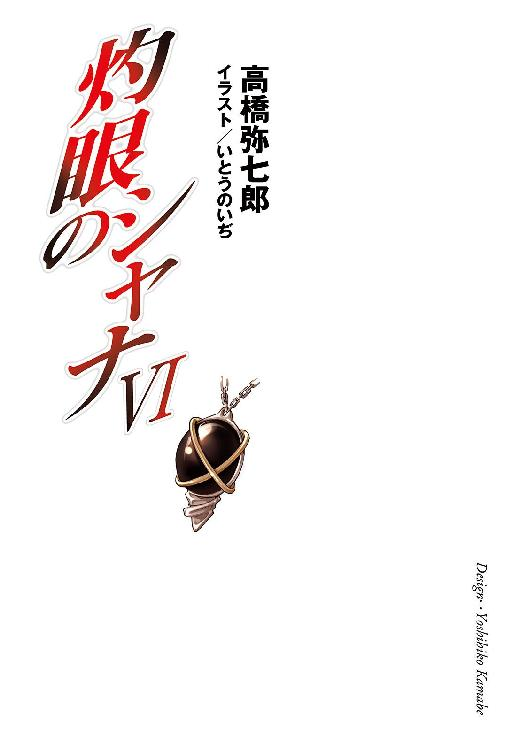
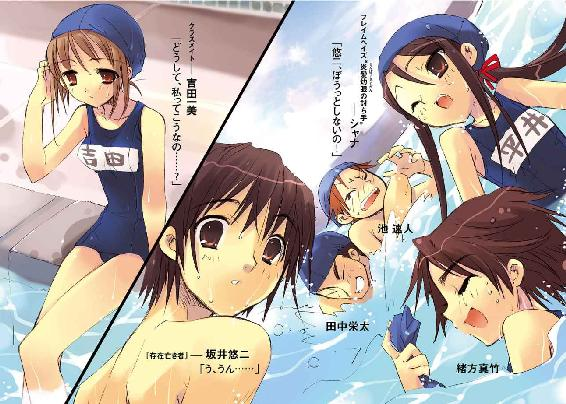
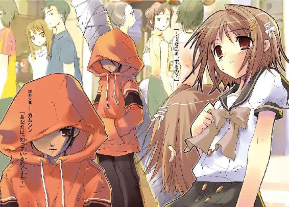
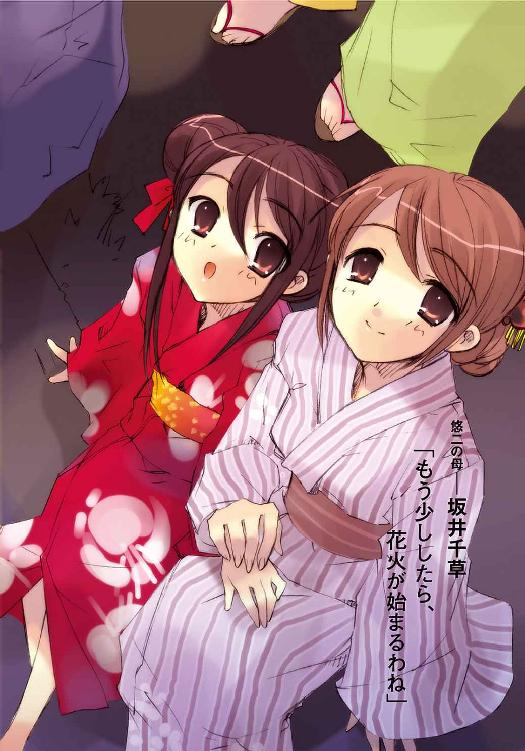
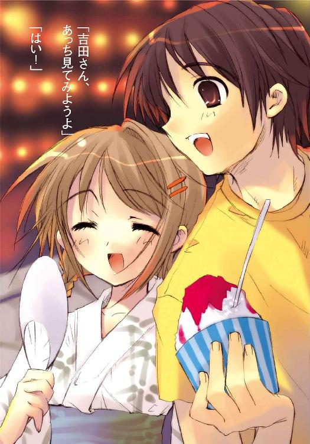
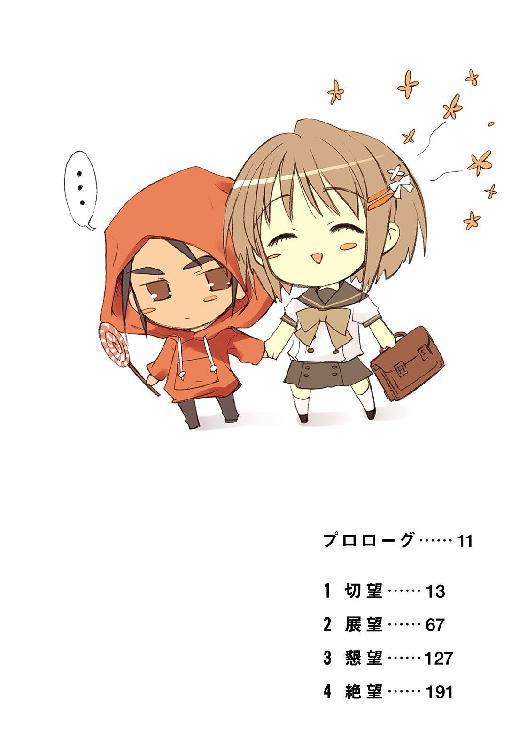
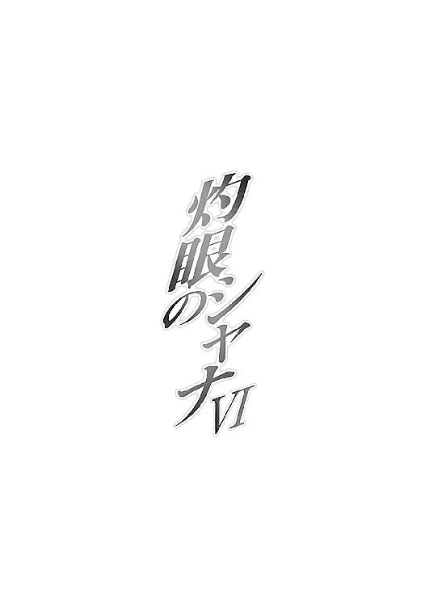
本書（電子版）に掲載されているコンテンツ（ソフトウェア／プログラム／データ／情報を含む）の著作権およびその他の権利は、すべて株式会社アスキー・メディアワークスおよび正当な権利を有する第三者に帰属しています。
法律の定めがある場合または権利者の明示的な承諾がある場合を除き、これらのコンテンツを複製・転載、改変・編集、翻案・翻訳、放送・出版、公衆送信（送信可能化を含む）・再配信、販売・頒布、貸与等に使用することはできません。
プロローグ
吉田一美は、ベッドの上、掛け布団の中、体を小さく丸めて一心に思う。一人だけの暗闇に閉じこもり、息を潜めて心から願う。
（きっと、きっと大丈夫）
丸まる彼女が胸の前で力いっぱい握った両掌、その中にある『物』に、ありったけの想いを、尽きず溢れる想いを、全て注ぎ込む。
（お母さんも、お父さんも、健も、大丈夫だった）
目を瞑って、丸めた体の中心に全てを凝らすその姿は、祈りそのものだった。自分の前に示された選択肢である『物』を胸に抱き、真摯に祈る。
（だから、緒方さんも、晴美ちゃんも、笹元君も、中村さんも、谷川君も）
受け入れるには重すぎる、理解するには大きすぎるものの中、なにを知るべきか、なにを知らざるべきか......その結果としてなにを守るべきかを、深く深く考える。
（池君も、佐藤君も、田中君も）
そして、その懊悩と複雑に絡み合い、のしかかってくる、一つの問いかけがあった。
気持ちは決まっていた。気持ちだけは、とっくに、決まっていた。
（ゆかりちゃんも）
明日、ここから踏み出す、と胸の中で唱える。
自分の全てを試すために、と胸の中で唱える。
自分が、どんな世界を望んでいるのかを決め、そして選ぶのだ......そう、唱える。
（坂井君も、きっと......）
明日が人生最良の日でありますように。
自分が『良かれ』と思い、選んだ結果が、皆にとっての幸せでありますように。
心から願いつつ、真摯に祈りつつ、吉田一美は眠りの中に落ちていった。
１ 切望
夏休みを数日後に控えた最後の体育授業は、水泳だった。
うだるような暑気も焼け付く日差しも、プールという魔法の装置の中にいると、快適さの一要素に変わる。肌に跳ねる水滴が乾いていく感触は、なんともいえない真夏の喜びだった。
「......」
陽光の反射する水面を、吉田一美はスタート台の上から真剣な面持ちで見つめる。
前を泳ぐクラスメイトは、もう十メートルのラインを越えていた。飛び込んでもいい頃合である。後ろに並んでいる者はいない。じっくりと足の位置を決める。
一息、吸う。
水泳帽に締め付けられた額で、形のいい眉が僅かに勇められる。
しなやかな動線を描いて全身をかがめること半秒、鋭く跳躍する。
まるで清水の流れ落ちるように、音をほとんど立てず、浅く遠く水面下に潜り込む。
理想的な飛び込みだった。
運動に火照った体の熱が一気に水に持っていかれる、その心地よさを全身に感じる。
飛び込みで乗ったスピードの衰える寸前に、しっかり伸びて水を蹴る足が、意外に力強く水を掻く細い腕が、クロール泳法を形作る。
飛び込み同様、見事に整った姿だった。
呼吸のため顔を横に上げると、泡と陽光の踊る視界が一気に開ける。
瞬間、
「ぎゃー！ うっぷ、来るな来るなっ！」
「あは、はは、おわ」
「なにやってんのよー」
「もう、そろ、そろ、代わってよーっ、タッチ!!」
「うげっ、誰だよ押したの」
「わはは、なーにやってんだ笹元─」
飛び込み時は集中していて聞こえなかった、まるで爆発のような歓声の塊が、耳に飛び込んできた。それは、またすぐ水に遮られ、くぐもった音に変わる。
吉田一美は、水泳授業の自由時間を、プール端に設けられた自由競泳コースで過ごしているのだった。競泳と言いつつも、張られたコースロープは、このコースを区切る一本だけで、あとは全面開放されている。そちらでは今、数十人からの生徒が絶叫と水音の中、揉み合って遊んでいた。
市立御崎高校では、水泳に限って二クラス合同授業の二時間連続、という形式で行われている。着替えや移動、入れ替え等の手間を省くためである。しかし、夏休みを目前に控えた授業に、果たすべきノルマや課題などあるわけもない。
体育教師は準備体操を念入りにさせた後、早々に自由時間を取った。調子のいい生徒たちは彼を大声で囃したが、とある授業でとある生徒に酷い目に遭わされたことのある彼は、やはりこのときも苦々しげな顔で、
「潜水している奴に気をつけろ。踏むな、蹴るな、動いているか確認しろ」
と基本的な注意事項を通達しただけだった。
自分たちの時間を浪費されることを極度に嫌う生き物である生徒たちとしても、教師のそんな態度はむしろありがたい。
体育教師の方もこの数ヶ月、恐々と授業を続ける内に、そんな生徒たちの生態を理解するようになっていた。これは彼に限らず、市立御崎高校一年二組のとある生徒に関わった教師に見られる変化だった。大筋、非効率と理不尽をなくすというだけの変化ではあったが、実はそれこそが生徒にとって最高の授業の形なのだった。
今はまさに、その典型のような光景である。
前後の集合や体操など、必要なときには規律を守らせるが、課題のない今のような空き時間は自由にさせる。泳ぎたい者は自由競泳コースで泳がせ、遊びたい者は残ったコースのロープを取り払って遊ばせる。競泳コースが一つしかないのは、遊びたい者が大半だったから。
そんな原理の明快な自分の授業を、実は生徒たちが評価し楽しんでいることに、負い目と恐れに囚われている体育教師は気付いていない。幸か不幸か。
吉田一美は、この自由時間をひたすら競泳コースで泳ぎ、潰している。
水泳は、運動全般の苦手な彼女が例外的に得意......というより好きな競技だったし、人見知りの激しい彼女には大勢の、しかも別クラスの生徒たちに混じって遊ぶという行為は難しかった。クラスメイトに『スタイルが良い』と指摘されてからは、そういう意味での注目をされることも怖かった。
だから、ただ泳ぐ。
「っはぁ！」
息継ぎのため、水の上にまた顔を上げる。そしてまた水に顔をつける寸前、一人の少年の姿──誰かに押されて泡を食っている──が、追っているわけでもないのに自然と目に入る。
熱くなった顔を冷たい水の中につけられることを幸いに思ってしまう、そんな情けない自分を恥じつつ、それでも想う。
（......坂井君）
坂井悠二。
市立御崎高校一年二組のクラスメイト。
とても優しい。
柔らかく笑う。
大変な照れ屋（自分が言えたことではないが）。
なにか誤魔化すときには遠くを見るふりをする。
特別なにが得意というわけでもないが、よく他人をフォローする場所に立っている。
名案を出すときもあれば失敗するときもある。
おふざけ以上に人に嫌われない。
そんな、少年。
自分が好きな、少年。
（坂井君が、好き）
痛いほどに強く胸を締め付ける気持ち。
それを、彼に伝えると決めた。
そう、宣言した。
数日前、一人の少女に。
自分の弱さへの怒りが火をつけて、その勢いから胸の中にあった気持ちが表に出て、自分と同じく坂井悠二を好きな少女に、いつもなら相対するだけでも気圧されるような少女に、はっきりと宣言した。
（──「私、坂井君にもう一度、今度こそはっきり自分の口で、好きです、って言う」──）
自分でも驚くほど確かな声と心で、そう宣言した。
そのときは、恐れも動揺も、全く感じなかった。坂井悠二への強い気持ちが自分の全てを支えている、彼への気持ちを曖昧なまま誤魔化しているような少女に負けるわけがない、そんな異常とも言える高揚の中にあった。
彼女に、その場では勝った、と思う。
（でも）
それは根本的な意味で、価値のない勝利だった。
坂井悠二に好きだと言う、その肝心な行為は、未だ果たされていないのだから。
ライバルとの力関係で優勢に立ったからといって、今まで躊躇し、恐れていた行為をすんなりと行えるわけではなかった。決心に決心を重ね、一歩ずつ近付いているようには思うが、乗り越えるべき心の壁は、まだ自分を厚く取り囲んでいる。
（でも）
あの日の、熱い気持ちが表に出た勢いのある内に、例えば下校するときにでも、無理矢理に告白してしまえば良かった......そう、今さらのように後悔する。
（でも）
怖かった。
決定的な選択を相手に強いて、今ある関係さえ壊れてしまうことが。
（でも）
怖い。
自分が躊躇している間に、あの強い少女が先に坂井悠二に告白してしまうことが。
それら恐れと恐れの間で立ちすくみ、行き場のない気持ちが胸の中を暴れ回る。身動きができない。臆病で身勝手な悩みだと分かっていても、どうしようもなかった。
（でも）
きっかけを探していた。
なにか、坂井悠二と近くで触れ合えるようなきっかけを。
弱くて情けない自分が、思い切って彼に告白できるようなきっかけを。
（でも）
あの宣言以来、ライバルである少女は坂井悠二の傍らで多くの時間を過ごすようになっている......ような気がする。そうでなくても、この四月からほんの三ヶ月の間、彼女はどういうわけか坂井悠二と行動を共にすることが多くなっていた。特別親しくなるような出来事があったのかどうか、自分は知らない。
（でも）
二人の間にはなにか、確かで強い結びつきのようなものを感じる。一緒にいることが自然に映るような、二人を一つの風景として感じさせるような、そんな不思議な結びつきを。
それを思うと、胸の奥が鉛を呑んだように重くなる。
（でも）
一方で二人には、仲良くすることに抵抗を感じているような面もあった。照れというだけでない、拒絶にも似た微妙な距離を、その間に感じることができた。
それを思い、なんとか気持ちを奮い立たせる。
「っはぁ！」
考えている間に、何度目かの息継ぎのため、顔を上げる。
そして今度は、反発や怒り、悲しみの入り混じったような気持ちが生まれる。一人の少女の姿──小柄な体を水の中でも軽やかに動かしている──が目に入ったことで。
（......ゆかりちゃん）
平井ゆかりを名乗るフレイムヘイズ......世界のバランスを守るため、異世界の住人〝紅世の徒〟を討滅する異能者が、プールから湧き立つ歓声の中に紛れている。
見た目もせいぜい十一、二という小柄な少女の姿をしたそのフレイムヘイズ、御崎市で得た通称『シャナ』は、ろくに足も付かない水の中、背後から近付いた男子生徒の手を、軽快な動きでかわした。
「平井さん、うまい！」
「くっそ、うぷ」
「あはっ、ヘンタイ辻君ハズレー！」
「中村後ろっ！」
「わ、ひゃ!?」
騒ぎの中から、すい、と水を掻いて離れる。幼くも押しの効いた凛々しい顔立ちには、僅かに茶目っ気のある笑みが浮かんでいた。
（結構、面白いかも）
水泳帽から伸びた、赤いリボンでまとめた髪を腕に絡めて、背泳ぎの体勢になる。足だけで水を掻き、生徒たちの揉み合いから少し離れる。当然、周囲への警戒も怠らない。
この、『複数鬼ごっこ』というらしい競技について思いを馳せる。
（まず、鬼と称される敵手を三人選び、広いが動きにくい水中で追跡させる）
と、正確に規定する。
（そして、掌による接触を殺害と見做し、その殺害された者が今度は鬼となる）
実際の情景を見ながら、傾向を分析する。
（一人の鬼に目を奪われていると、その隙に別の鬼に襲撃されるから、常に全体の戦況に気を配る必要がある）
「中村鬼！ 中村鬼！」
「もー、教えて、くれない奴に、おしおきー！」
「うわおっ！」
「谷川、も一人、後ろー！」
ある程度の距離を取ると、全体の光景を改めて観察し直す。
（ああやって周囲の者が、口で警戒のための情報を送ってくるけど、タイミングが遅れたり、わざと虚偽の警告をしたりするから、やっぱり自身で戦況を把握しておく必要がある）
実は自分もさっき一度だけ、二人の鬼を視界に置いている間に、残る一人に背後からの強襲を受け殺されてしまった。身体能力を常人レベルまで下げているとはいえ、我ながら不覚だった。もちろん、そのすぐ後に、しっかり別の生徒を殺して（自分を殺した元・鬼は殺してはいけないというのが決まりだそうだ）鬼を交代してはいるが。
これは『鬼ごっこ』という競技の派生型であるらしい。『鬼ごっこ』なるものを知らない、と言ったら、クラスメイトたちに驚かれた。
フレイムヘイズの使命遂行に不要な事柄を、自分は何も知らない。
そのことを、この御崎市に定住して二ヶ月強の間に何度も教えられた。引け目や劣等感はない。むしろ知らないことに接する楽しさばかりがある。
（楽しさ？）
そんなもの、ここに来るまでは甘いものを食べることくらいでしか感じたことがなかった。というより、全く興味を持とうとはしなかった。
自分は、フレイムヘイズとしてある。そう骨の髄から形作られているため、それ以外があることに注意を払わなかったのである。事実、知らなくても不都合はなかった。
フレイムヘイズとして〝紅世の徒〟と戦い、世界のバランスを守る。その使命への誇りと熱意は、楽しさなどという感情以前の、自分そのものである。なにを知ったところで微塵の揺るぎも翳りも表れはしない。ただ、ここで暮らしていると、違うものが少しずつ、それらを囲んで積み重なっていく。
（なんだろう）
奇妙な気持ちだった。
背泳ぎの姿勢のまま、自分の平坦な胸を見つめる。
常にその位置にあるべきペンダント〝コキュートス〟が、今はない。
自分との契約の元、身の内にあり、フレイムヘイズとしての力を与えてくれている異世界の魔神〝天壌の劫火〟アラストールの意志を表出するための神器が、ない。
これは、さほど校則にうるさくない御崎高校でも、さすがにプールにまでペンダントを持ち込むわけにはいかなかったからである。それ以外に意味のある状態ではない。
なのに、彼が胸の上にいないことになぜか、小さな罪悪感があった。
（しようが、ないじゃない）
言い訳のように思った。
学校指定の水着は、女生徒には非常に評判の悪い、丈夫さだけが取り柄という布面積の大きな型の物だったが（このときクラスメイトから、『古臭くて美的感覚がなっていない』＝『ダサい』なる言葉を教わった）、さすがにペンダントの鎖を隠せるほどではない。その本体部である黒い宝石も、水泳授業が始まる前、実際に着て隠せるかどうか試そうとしたところ、
「ははは、そりゃ試すまでもないだろ。もし胸に入れたら、そこだけ盛り上がるぼぁっ!?」
と一人の少年に指摘もされた。ちなみに、語尾の叫びは自分がぶん殴ったためである。
（......なにが......）
余計なことまで思い出して、ムッとなった。
ぶん殴ったのは、少年の声に小馬鹿にしたニュアンスがこもっていたことへの反射だが、胸の大きな子が男子に好かれる、とクラスメイトに聞いていたからでもあった。どうでもいい、と聞き流したはずの言葉が、しかし何故かそのとき蘇って......ムカッと来た。
そこから顔を逸らして、不愉快な指摘をした少年の姿を、目線だけで探す。
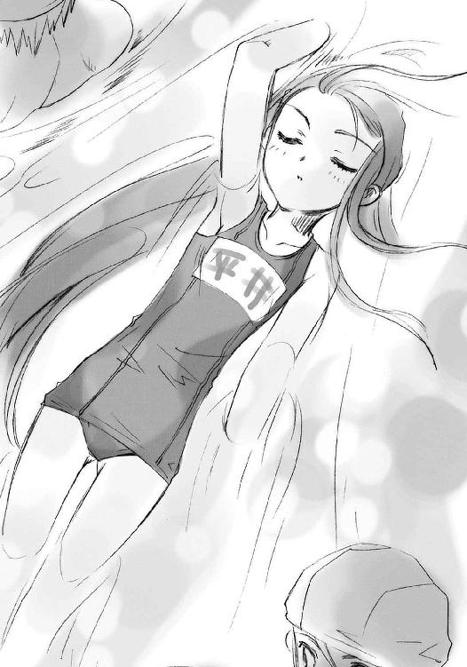
彼は今、プールの中ほどで二人の鬼から挟み撃ちに遭っていた。一人は避けたが、やっぱりもう一人の接近には気付いていな──ああ、やられた。これで競技の開始から通算、四度目の鬼だ。自分が毎朝付き合ってやっている鍛錬の成果だろう、体捌きは幾分かマシになっていたが、水中という悪条件が付加されると全然駄目だ。
理不尽な腹いせとして、くすりと笑う。
（......バカ）
坂井悠二。
身の内に〝紅世〟の宝具を宿した特別なトーチである〝ミステス〟。
貧弱で頼りない。
ヘラヘラ情けない顔で笑う。
こっちが強く出るとすぐ腰が引ける。
なのに、ときどきとても意地悪になる。
封絶の中にいると顔が青くなる。
ろくに戦えもしないくせに、意気込みだけはある。
度胸はからっきしだが、いざ腹を据えると、とんでもなく冷静になる。
急場に際して、いきなり頭が切れるようになる。
思いもよらない機転を利かせたり作戦を立てたりする。
夜の鍛錬で指先を握ると、必ず親指で、こっちの親指を押さえる。
身の内に宿す秘宝『零時迷子』の脈動と回復の時間を感じられるようになった。
でも、〝存在の力〟を繰るには、まだまだ訓練が必要。
早朝の鍛錬でぶたれる回数は、それなりに減った。
攻撃を避けるとき、右足から下げる癖がある。
ちょっと上達すると、すぐいい気になる。
朝風呂では、湯船を使わないらしい。
セロリを食べると凄い顔をする。
交通量によらず信号を守る。
チョコレートは大好き。
マシュマロは大嫌い。
そんな、少年。
いつの間にか、たくさん、たくさんのことを知るようになった、少年。
（やっぱり悠二も、大きい方が......いいのかな）
彼のからかいの言葉を再び思い出して、また水面とほとんど平行な胸を見る。
自分は〝紅世の王〟に人間としての全てを捧げ〝王〟の力の器・フレイムヘイズとなった。この存在から広げ、大きくなるはずだった未来を失った、不老の、成長しない、体。
彼のことを好きだと言った、彼に好きだと言うと宣言した少女は、自分と違って──
（!! ば、馬鹿馬鹿しい！）
思った内容、それが意味すること、自分がそんなことを思ったという事実、全てを振り落とすように、首を左右に回して水飛沫をバシャバシャと飛ばした。
その中で、誰に注視されているわけでもないのに、さり気なく盗み見るような形で悠二の姿を追う。彼の視線の向きを確認する。
まず、プール端のコースに、その、大きい少女......吉田一美の泳いでいる様が見えた。
そして悠二は、『複数鬼ごっこ』の鬼になっているのだから当然だが、そんな彼女を見つめたりはしていない。どころか、すぐ後ろを通り過ぎていることにさえ気付いていないようだった。
なんとなくほっとする。
思えば、さっき一度鬼に殺されたのも、こんな確認などをしていたせいだった。この時間に限らず、最近そうすることが多くなった。
なぜそうするのかは、よく分からない。
いつからそうするようになったかは、よく分かっている。
吉田一美の、あの宣言以降だ。
（──「私、坂井君にもう一度、今度こそはっきり自分の口で、好きです、って言う」──）
彼女の実行を恐れている。
なのに、なにもできない。
今まで自分は、我が身を脅かす要因があれば、的確に分析し、適切に対処し、速やかに解決してきた。澱みも滞りも、無論のこと迷いなどもなく。
なのに、今度のことでは、悠二のことでは、なにもできない。
どうにかしたいと、強く強く思っているのに。
どうすればいいのか、分からない。
（なんだって、こんなことで）
それは、フレイムヘイズが使命を果たす上で、無用どころか有害とさえ言える、余計な関わり合い......士気の維持を危うくし、多くの時間を拘束される行為、『生活』の産物だった。
（それなのに）
実は数日前、御崎高校に居続けるべきかどうか、アラストールと話し合った。
そもそも自分は、〝ミステス〟坂井悠二をとある〝紅世の王〟から守るため、この高校に潜入した。
具体的には、悠二の隣席にいた『平井ゆかり』という少女の〝トーチ〟──この世にあるための根源の力・〝存在の力〟を〝紅世の徒〟に喰われた人間の残り滓であり、またその欠損の害を和らげるための代替物──に自分の存在を割り込ませることで、彼女に偽装した。
それは特別利点を考えたわけでもない、悠二の至近にたまたまトーチを見つけたことで思いついた、気まぐれな一つの措置に過ぎなかった。
しかし、悠二を狙っていた〝紅世の王〟は、数ヶ月前に討滅している。ここに居続ける必要性は、とうの昔になくなっていた。
この仮初の身分も、自分が望めば消えてなくなる。
他人の記憶、自分の痕跡、全て。
平井ゆかりという存在は、本来のトーチとしての機能と効果の通りに、〝存在の力〟を失った人間がそうなるように、最初から居なかったことになる。
つまり、自分がいなくなることへの不都合もない。
なのに、アラストールと話し合い、出した結論は『現状維持』だった。
そして、お互いに、それを不自然とは思わなかった。
（そういえば）
アラストールは、フレイムヘイズと契約する〝紅世の王〟の中でも、指折りの使命感と誇りの持ち主である。そんな彼が、今の平坦で戦いもない生活を切り上げろ、と言わない。考えてみればおかしな話だった。
自分がそんなことに溺れたり惑ったりはしない、と信頼してくれているのだろうか。それとも他になにか、別の理由でもあるのだろうか。
それを訊こうにも、今の自分の胸元には、ペンダント〝コキュートス〟がない。
（どういうことなん痛っ!?）
ごつん、と水泳帽の頭頂を、プールサイドにぶつけてしまった。
（なーにやってんだか、平井ちゃんは）
カラカラに干からびたプールサイドに座った田中栄太は、見るでもなく見ていた少女のハプニングに苦笑した。頭を抑えながら、誤魔化すように水に潜る少女から目線を外して、首の力を抜く。
帽子を外した短髪の後頭部を、校外からの覗き防止用のアクリルボードに軽くぶつけて、真夏の空を見上げた。ボードに持たせかけた背が、火傷しそうなほどに熱くなっている。今日はほとんど泳いでいないので、体も冷えていない。濡れた髪も体もとっくに乾いて、肌が焼けそうだった。日焼けに気を遣っているわけでもないから、真っ黒になっても構わなくはあるが。
どうにも力の入らない鈍い気持ちの中、見上げるのは雲一つない豪快な晴天。
真昼の、白みがかった蒼穹の中心には、全ての色を奪う巨大な輝きが居座っている。
「......」
大造りで愛嬌のある顔の中、特徴的な細い目をさらに細めて、その輝きを直視しようと試みる。しかし、眩しいものはどうしようもなく眩しくて、見ることはできなかった。
「......ふう」
憂鬱の凝ったような息を吐く。別に水泳の授業が嫌なわけではない。どころか、体育全般は得意中の得意である。大柄だがスリムな体格には、無駄な贅肉も筋肉もなかった。悩みの理由は、他にある。
と、見上げていた太陽を、人影が遮った。
「なにダラけてんの、田中？」
「あー、オガちゃんかぁ」
スリムで背の高いクラスメイトの少女が、彼の前に立っていた。
緒方真竹、通称『オガちゃん』である。
女子バレー部に所属する、しかも一年生でレギュラーというスポーツ少女である。その『可愛い』というよりは『格好いい』に分類される整った顔立ちや、名前どおり竹を割ったようにカラッとした性格から、男女分け隔てなく好かれていた。
「妙にボーっとしちゃってさ。いつもつるんでる佐藤が休みだと、元気も半分なわけ？」
ポンポンと軽く言葉を投げつけてくる緒方に、田中はやはり気の抜けた声で答えた。
「いや、そういうわけ......あるかもなあ」
元気が取り柄という少年の弱々しい答えを、緒方は意外に思った。
「嫌なことも半分ずつに分けられるし」
「......なんかあったの？」
言って緒方は、田中のすぐ隣に腰を下ろした。男女の距離の近さを気にする風もない。ざっくばらんな性格なのである。
そんな彼女と気の合う田中も同じく、彼女に対してはその手の緊張を持たない。
「あったというか、できないというか」
どうにも要領を得ないので、分かることから訊いてみる。
「昨日から佐藤が休んでるのと関係あるの？ 少し前、よく一緒に休んでたでしょ？」
田中と常につるんでいる友人、『いちおう、美を付けてもいい少年』と女生徒の声も微妙に高い佐藤啓作は、昨日から病欠している。
しかし、田中は首を振った。緒方の言うように、少し前まで二人して学校を休んでいたとき、彼と行動を共にしていたのは事実だが、とりあえず今回は意味合いが違う。
「いんや、あいつの休みはたまたま。夏風邪ってのも本当だよ。でも、そうだな、関係あるといえば、あるかもな」
やはりハッキリとしない答えに、緒方は少し苛立った。
その微妙な変化を見て取った田中は、にやりと笑って茶化す。
「ほほ〜う、休んでる佐藤君のことが気になりますか、オガちゃん？」
「バァカ」
緒方は笑って肩を突き飛ばした。
「うおっと!?」
（ホントに、バカ）
突き飛ばして、そして軽く落胆する。
よろけて反対側に手を付いた田中は、そんな彼女の、少し心配そうな声を聞いた。
「その、一人になったら重苦しい雰囲気になる癖、治ってないね」
「そーか？ 自分じゃ、かなり明るくなったと思うんだけどな」
「まあ、ね......」
「......」
ジリジリと肌を炙るような日差しの中で、お互い一瞬だけ、沈黙する。佐藤も加えた三人は中学時代、一緒のクラスだった。
緒方は、暗い雰囲気や人間が嫌いだった。特に、佐藤とともに荒れていた頃を思い出させる暗い田中が、大嫌いだった。だから、できるだけ陽気に声をかけた。
「じゃあ、明るーく更正した田中クン。このナイスバディ見て、なにか言うことない？」
緒方はわざとらしく、色っぽいポーズを取る。
「ほほーう」
田中もわざとらしく、顎に手を当ててその姿を審美する。
バレー部員としての地道なトレーニングの賜物である、しなやかかつ力強い脚線と、見事に引き締まったウエスト、水滴を弾く、案外色白な瑞々しい肌......
「ふむふむ、悪くない」
やや鼻の下を伸ばしつつ、田中は偉らぶった口調で論評する。
緒方は鼻高々になるが、
「しかし、パッド入りというのはいただけませんねえ、オガタマタケ君」
という田中の図星に、
「うっ！」
グサッとナイフで刺されたように、平均的豊かさを持つように見える胸を押さえた。
「なな、な、なんで？」
「ふふふ、胸には少しうるさい男なのだよ......ほーら、見たまえ」
田中は顎に手をやったまま、ことさら偉そうな口調でプールの端を見やった。自由競泳コースのスタート台に腰かける形で、一人のクラスメイトが休憩している。
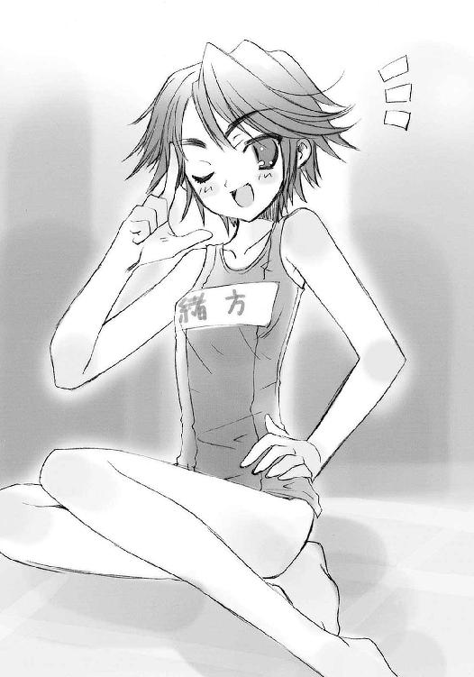
遠目にも分かる起伏に富んだラインが、強い陽光の中で紺色に浮かび上がっている。特に名札の縫い付けられた、彼らが問題としている部位......平たく言うところのバストが目立った。
「あれが天然物の見事さというものだ、オガタ君」
「......アレは普通、負けるでしょ」
比較対照の不適格さにブーたれる緒方を、田中は明るく笑い飛ばした。
「ナハハ、ジョーダンだよ、ジョーダン。パッドのことも、佐藤の奴に聞いたネタ。水着にも入れられるタイプがある、ってな。カマかけただけなんだけど、やっぱりか」
緒方は吐息とともに、前屈の形に体を折り曲げた。伏せた下で笑い返しつつぼやく。
「あ〜あ、見破られてたのか〜」
「そう落ち込むなって。デガけりゃいいってもんでもないだろ？」
（......んな言って、一美のいるトコはしっかりチェックしてたくせに......）
「気にすんなよ。どーしようもないことってのは、あるもんだ」
と、急に田中の声から笑みの成分が消えた。
「？」
緒方は伏せていた顔を上げた。
田中は遠くを見ていた。その表情に暗さはないが、どことなく怖い雰囲気があった。
「なあ」
一瞬ドキッとするほどの、真剣な声が来た。
「どうにもならない壁があって、でも、それを絶対に突き破りたいとき......どうすりゃいいと思う？」
「なに、記録かなんかの話？」
と、緒方は運動部らしい答えを返す。
「なんだろな。うまく説明できん」
腕を組んで田中は唸った。
その芝居っ気のある仕草の影に深刻なものを感じて、しかし緒方は軽く励ました。仕返しに見せかけて、からかうように。
「やめときなって。向いてないよ、深刻ぶって考えるの」
「うむ、自分でも分かってる」
「それより泳ごうよ？ 平井さんも好敵手がいないと退屈するだろうしさ」
緒方は勢いをつけて立ち上がった。ついでに田中の手を引いている。
「おわっ？ 分かった、分かったから！ 帽子忘れてるって！」
田中は力任せにプールへと引っ立てられていった。
大河・真南川で真っ二つに割れている御崎市。
その東側に広がる市街地の外側に、旧住宅地と呼ばれる昔の地主たちの集住する地区がある。学校を夏風邪で休んでいる『いちおう、美を付けてもいい少年』佐藤啓作は、その中でも指折りの大きな屋敷に一人で住んでいた。家族は、いろいろと不愉快な事情から、ここには寄り付かない。
ただし、家族でない同居者はいた。
その同居者である女性が、自室のベッドで寝ている佐藤の所にやってきた。
「いよー、具合はどうでえ大将」
「ちょっと場所借りるわよ」
声と同時にズカズカと踏み込んできたのは女性一人だが、かけられた声は男女の二つ。
女性は、鼻筋の通った二十歳過ぎの欧州系美女である。ストレートポニーにした艶やかな栗色の髪を背に流した長身、トップモデルも裸足で逃げ出す抜群のスタイルは、ストリング・タイを締めたワイシャツと単色のスラックスによって、簡素かつ洒脱に飾られている。
縁なし眼鏡を貫いて走る鋭い眼光は、部屋の主にではなく、左手に持った大きなお盆......正確には、その上に載せられたウイスキー瓶とグラス、お湯割用らしいポット、皿に盛ったぶつ切りのスティルトンチーズなどに向けられていた。
女性は、主に雑誌と服で散らかった広い部屋の真ん中、テレビの正面に置かれたソファにどっかりと腰を下ろす。手前の置き台に、重いお盆を紙皿のように軽々据えると、そのついでのように、右の脇に抱えていたドでかい本を傍らに放り落とした。
「あんがっ!?」
まとめた画板ほどもあるそれから、さっきの男の声が甲高く上がった。
「よお、我が無道な運搬者マージョリー・ドー、せめて酒肴程度には優しく扱ってくれや」
「あー、今度から気ぃ付けるわ」
マージョリー・ドーと呼ばれた女性は、その不思議な声に平然と、誠意の欠片も感じられない声で返した。
それも当然、彼女は人間ではない。シャナと同じ、〝紅世の王〟との契約によって異能の力を得、この世を荒らす異世界の人喰い〝紅世の徒〟を討滅する使命を持つフレイムヘイズの一人『弔詞の詠み手』だった。
彼女が放り落とした、掛け紐付きのドでかい本型の神器〝グリモア〟に意識を表出させているのは、〝蹂躙の爪牙〟マルコシアス。この世のバランスを守るため、また自身の闘争心を満足させるため（比率的には後者が高いと思われる）フレイムヘイズに力を与えている〝紅世の王〟である。
佐藤と田中は、彼女らがとある〝徒〟を追ってこの街にやってきた際、強引に街の案内役に指名された。以来、成り行きから〝紅世〟のことを知らされたり、シャナや悠二たちと戦うことになったり、また別の〝徒〟との戦いに巻き込まれたりと、波乱の日々を送っている。
マージョリーは、それらの複雑な経緯の中で、佐藤家に居候するようになっていた。
居候といっても、彼女は手持ちの金に不自由しているわけではない。それどころか、むしろ衣服には湯水のように金を使っている。そのくせ、佐藤に家賃を払ったことはない。
そして、これはもちろんと言うべきか、心身ともに無闇な強さを誇る彼女なので、美女と一つ屋根の下に暮らすことの付加価値......いわゆる甘い夢の類は全く持てなかったりする。
つまり、強烈というに相応しい彼女に憧れる佐藤としては無念、同様に憧れる田中にとっては幸いな、お互いが勝手に生活しているだけ、という状態だった。
ちなみに、シャナと悠二、佐藤と田中は、お互いの立場を知らない。
マージョリーとマルコシアスは双方を知っているが、彼らが友人であるとは知らない。
この街におけるフレイムヘイズとその周辺の、なんとも複雑な人間関係だった。
「......ま、またバーから、追い出されたん、ですか？」
毛布の中から、佐藤がもぞもぞと顔を出した。
寝癖の付いた髪や薄ぼけた顔など、常の洒落っ気は欠片もない。一日寝込んで、ようやく熱は下がったが、消耗した体はまだだるくて、身動きも思考も緩慢だった。
そんな彼に、マージョリーは無愛想に答える。
「部屋を掃除するって言うから、ちょっと出てきただけよ」
（それを、追い出された、って言うんじゃないかな......）
佐藤は思いつつも、口にするだけの元気がない。
「俺の方は見舞いだぜえ、ヒッヒッヒ」
マルコシアスが、耳障りな笑いをくっつけて言った。
彼の言葉は本当だろう、と佐藤は思う。この戦闘大好きで軽薄な〝紅世の王〟が、実は情味に厚い面を多分に持っていることは、出会った当初から分かっていた。自分の弱り目に、こういう労わりの気持ちを向けられたことの滅多になかった少年は、怪しい本の軽口程度でも、胸に染み入るような温かさを覚える。
と、そんな彼の感慨を、
「私の用のついででしょ、よく言うわ」
マージョリーが素っ気無くぶち壊した。彼女の方は佐藤に目も向けず、ウイスキーをグラスに注いでいる。こっちは見事なまでに身も蓋もない性格であると、出会った当初から分かっていた。まあ佐藤も田中も、彼女のこういう筋の通った格好良さにこそ憧れているのだが。
この広い佐藤家の屋敷には空き部屋が多く余っているが、彼女の縄張りは室内バー一室のみである。寝床も未だに備え付けのソファだった。居候に際して揃えた家具は数個のクローゼットと姿見のみで、それらを置いたのはバーの中、着替えるのもまたバーの中においてだった。ここ以外の私室を、決して持とうとはしない。
その理由はマルコシアス曰く、
「無駄に自分の居場所を作っちまったら、出て行くときの未練がデカくなっちまうだろ？」
とのことで、聞いた佐藤と田中をなんとも寂しく切ない気持ちにさせた。
今、その彼女唯一の縄張りは、昼勤のハウスキーパーら（かつて佐藤家の奉公人だった老人たち）によって清掃されているところである。その間、彼女は他の部屋に移動する。以前、とある事情で落ち込んでいたときはバーカウンターに居座って動かなかったが、最近は事前の連絡を受けると、すぐ酒と肴を持って別の部屋に移動するようになっていた。
昨日も彼女は、佐藤が夏風邪で寝込んでいるこの部屋に来て、酒を飲んでいる。「他の空き部屋よりも面白そう」というのが、その理由らしい。佐藤にとっては、いささか以上に散らかした自室を見られるということで、嬉しいかどうかは微妙なところだったが。
「......」
なにかを能動的にできるほど体に活力が戻っていないので、佐藤は再び目を閉じる。
病気のとき誰かが近くにいるというのは、彼にはかつてない経験だった。昼間ならハウスキーパーたちに看病させることもできたが、実際にそれを頼んだことは一度もない。そうでなくても、普段から私室への彼らの立ち入りは禁じていた。
散らかった部屋から久しぶりに発掘された物......今、枕元に置かれている、自分で買った薬箱と水を張った洗面器、そして濡れタオルだけが、彼にとっての治療法、その全てだった。
しかし、昨日と今日は少し違った。
義務ではない誰かがそこにいる、それだけのこと。
なのに、それだけで、全てが全く違った。
「......はあ──」
溜息とともに、ベッドに深く身を預け、沈み込む。
（強くないと、いけないのにな）
思いつつも、佐藤は一時の安らぎに身を委ねる。
そのぼんやりとした脳裏に、自分がそもそも風邪をひいた理由......少々気の引ける抜け駆けの様が過ぎる。苦さ悔しさとともに。
数日前、新たな〝紅世の徒〟の襲撃を激闘の末に退けた翌日。
マージョリーは、学校から帰った佐藤と田中に、一本の剣を見せた。ハリウッドの映画に出てくるような、西洋風の大剣だった。討滅した〝徒〟の持ち物だという。
それは一見して、ただの鉄の塊でないことが分かった。彼女が振る度に、その広い刀身に不気味な血色の波紋が揺れた。怖気を誘うような、これこそ〝紅世〟の宝具だった。
彼女は佐藤家の庭で、それを軽々と振って見せ、そしていきなり地面に投げつけた。石を削る鋭い音、地を穿つ鈍い音、それぞれを一瞬、不気味に響かせて、大剣は血色の波紋も妖しく地面に突き立った。それはまるで、ゲームなどでよく見る、王や勇者の到来を待つ剣のようだった（それに古くて正しい由緒があることは、雑学の本で知っていた）。
「あんたたちが目指してるものは、これに全部入ってる」
それだけを言って、マージョリーは室内バーに引き上げた。
二人の前には、地に深々と突き立った大剣だけが残されていた。
目指しているもの、その一つ形として。
佐藤啓作と田中栄太は、強さに憧れていた。
自分たちを取り巻く不条理を打ち破るだけの力を、昔は駄々をこねるように暴れながら、今は静かに目標として見つめ、欲していた。
そんな彼らは数ヶ月前、全く突然、暴風雨に巻き込まれるように出会ったのである。
固まった世界の常識をぶち壊し、物事を自分の思うがままにねじ伏せる、広い世界の流離い人、彼らが求めていたものを完璧に備える女性、マージョリー・ドーに。
彼らにとってマージョリーとは、どうしようもないものをどうにかしてしまう、『常識破り』の力の具現化......彼らにできないことをしてしまう、求め欲し、憧れた力、そのものだった。しかも彼女は、無邪気な少年としての彼らが憧れる、女性としての完成形たる美麗な容姿まで備えていた。彼らがぞっこんになったのも、当然といえば当然だった。
何者にも侵されず、世を覆す力を振るう、素晴らしい美女。
憧れられた当人としてはかなりの誇張を感じて閉口してしまう、そんな姿を、しかし二人は大真面目に『マージョリー・ドーという女性』に見ていた。
だから彼らは目算も成算もない、ただ一途な熱意だけを持って、フレイムヘイズたる彼女の、果てない旅への同行を望んだのだった。
それは、マルコシアスに即座に笑い飛ばされ、マージョリーは返事さえしなかった、無謀すぎる望みだった。あまりに厳然とした力の差と特質の優位を持つ異能者たちの戦いに、常人が飛び込めるわけが無かった。
それでも、二人は諦めなかった。体を鍛え、本を読み、自分たちでできる全ての『準備』を黙々と行っていた。
そんな彼らに対するマージョリーの答えが、この地に突き立った不気味な大剣なのだった。
二人は大胆に柄を取って挑み、しかし日が完全に暮れるまでの時間をかけてようやく、これを引き抜いた。引き抜いて、その瞬間に危うく怪我をするところだった。
それは、重すぎた。
何十キロあるのか、見た目の体積では在り得ない重さを、この大剣は持っていた。振り回すなどとんでもない、持ち上げるだけでも一苦労の物体だった。なにより恐ろしいことに、
この剣は、片手持ちなのだった。
柄が短すぎた。一握りで柄頭の突起部に辿り着いてしまう。他に握るべき部位はない。細い棒のように伸びた鍔は、握る場所として作られたものでないことが一目で分かった。
細身の佐藤は無論のこと、標準からそれなりに突き抜けた膂力を持つはずの田中にさえ全く振ることのできないそれは、剣の平にようやく掌を添えて持ち上げる程度しかできないそれは、二人にとって『危険なバーベル』でしかなかった。
彼らが目指し求める場所には、これを軽々と振るう敵が、それこそ無数に存在する......たった一本の剣は、重量以上に重く、彼らを押し潰した。
しかし、
それでもなお、諦めなかったことは、誉められるべきか馬鹿にされるべきか。
二人はしつこくこの剣に挑み続けた。
彼らはこれをマージョリーの与えた試練、否、試験と受け取ったのだった。これが全てというなら、これを自由自在に扱えさえすれば、マージョリーも自分たちの同行を認めてくれるはず......そう思った。無理矢理にそう思い、とにかく挑んだ。
マージョリーもマルコシアスも、揺るぎようのない物を厳然と示した後だからなのか、それからはもう、同行の件についてはなにも言わなくなった。
そして今、
佐藤のひいている風邪こそが、彼の家に入り浸っている田中が帰った後、夜っぴて剣を握って唸り続けた（という表現が適当なのである）間抜けな成果なのだった。
昨日の朝、迎えに来た田中は、すぐ彼の行為と意味に気付いて、しかし追及も糾弾もしなかった。ただ、
「なにやってんだよ、バカ」
とだけ言って笑い、学校に行ってしまった。
同じ悩みを持つ自分への抜け駆けを、なんとも思っていない、のではなく、許したのだった。彼と付き合いの長い佐藤には、それが胸の痛みとともに理解できた。いい男である。
（それに比べて、俺は──）
ボフン、
「ゲホァッ!?」
といきなり布団をはたかれて、佐藤は飛び起きた。
「ほら」
またいきなり、目の前に大き目のロックグラスが差し出された。ポカンとする彼の鼻孔を、湯気に乗ったきついウイスキーの匂いが刺す。他に人のいるはずもない。グラスを差し出しているのは、マージョリーだった。
「は、え......？」
「風邪には嫌な思い出しかないのよ。気分悪いから、さっさとこれ飲んで治しなさい」
佐藤は反射的に受け取って、その熱さに思わず厚底の方に掌を添えて持ちかえる。
その間に、用は済んだとばかり、マージョリーは背を向けてソファに戻る。
「あの、これは......？」
「見りゃ分かるでしょ。命の水のお湯割。私の故郷では、風邪薬がないときの代わりに、それ飲んでたのよ。昔飲ませた娘たちはみんな治ったから、効き目は保証付き」
答えつつソファに座り直し、自分のグラスにもウイスキーとお湯を注ぐ。
「薬酒があればもっと良かったんだけど、バーの棚にはいいのがなかったし」
その相伴を求めるように、顎で指す。
「ほら、冷めたら意味ないんだから、ちゃっちゃと飲む」
「あの、でも俺、酒はあんまり」
「いいから、飲む」
「はい」
佐藤は剣幕に押されるように、一気にグラスを傾けた。少し癖のあるアルコールの味とお湯の温かさが、咽喉を通り過ぎた途端、猛烈な熱さに変わる。
「〜〜〜う、っぷ」
「で、後は寝る」
「はい」
今度は素直に従って、佐藤は布団に入った。腹の中が燃えるような感じがした。
被った毛布越しに、少し遠くなったようなマージョリーの文句が聞こえる。
「だいたい、なにも食わないでチンタラ寝てるだけってのがまずいのよ。『風邪は食って治す、熱は食べずに治す』って諺もあるってのに」
「じゃあ、おめえが作ってやったらどうでえ、我が腕利きのシェフ、マージョリー・ドー」
「やあよ、面倒くさい。カスティーリャのときは、たまたま気に入ったアサドがあったから、自分でも作れるようにしたかっただけよ。それ以外の料理は全部ついで」
この会話の間にも、佐藤は腹の中の熱さが、じんわりと全身に広がってゆくのを感じていた。同時に、マージョリーたちの声がだんだん遠くなってゆく。
（俺だけ、ってのは、ずるいよなあ......）
風邪の原因といいコレといい、田中には悪いことばかりしている。なんとかマージョリーを説得して、田中にもこのお湯割をご馳走してあげられないものだろうか。
「だい──気分が悪い──んなら、ここで飲まな──いいだ──が」
「お黙──バカマル──下んな──と言ってんじゃ──」
（どうやって、切り、出そう......）
意外にあった酒精のためか、それともお湯の温かさのためか、あるいは枕元にある会話のためか、安らぎの増してゆくように、彼の意識は眠りに落ちていった。
小休憩を終えた吉田一美は、再び自由競泳コースのスタート位置に戻るべく、プールサイドを歩く。その裸足の裏を、焼けたコンクリが温めて気持ちいい。
見られているわけでもないのに、依然続く鬼ごっこの大騒ぎに混じる一人を意識してしまう。こそこそするのも情けないし、堂々とする度胸もない。なんにもできない、そんな理不尽な無力感さえ抱く。
（こんなことで、いつになったら......）
平井ゆかりへの宣言から数日、告白することへの恐れと、前に進みたい気持ちがせめぎ合っていた。そのどちらもが、これまでにない強さで自分に迫っている。
制止と、行動を。
せめて、そんな二つのせめぎ合いから抜け出すきっかけが、自分の心に踏ん切りをつけるきっかけが、欲しかった。しかし、欲するだけで、日々は虚しく過ぎている。
ライバルである平井ゆかりが、まるで牽制するかのように坂井悠二の傍に位置を占めるようになった、それだけが原因ではなかった。もう一つ、元々動けなかった自分を、たくさん、いろいろ、影に日向に助けてくれた少年──
と、不意に下向きになっていた目が、脇のプール出入り口から現れた足を捉えた。
「っえ!?」
「わっ!?」
危うくぶつかりそうになってよろける、その手を取ろうと差し出された掌が、いきなり壁に当たったかのように、ぴたりと止まった。
（......あ）
プールサイドに入ってきたのは、クラスメイトの『メガネマン』こと池速人だった。一年二組のクラス委員として、またそれ以外の面でも頼りにされている、嫌味のない万能選手である。
今は、トイレから帰ってきたところらしい。プール授業であるため、トレードマークの眼鏡は外されている。その細められた目で気遣わしげに見て、訊く。
「大丈夫？ 足とか捻らなかった、吉田さん」
「う、うん......ごめんなさい、ちょっと考え事してて」
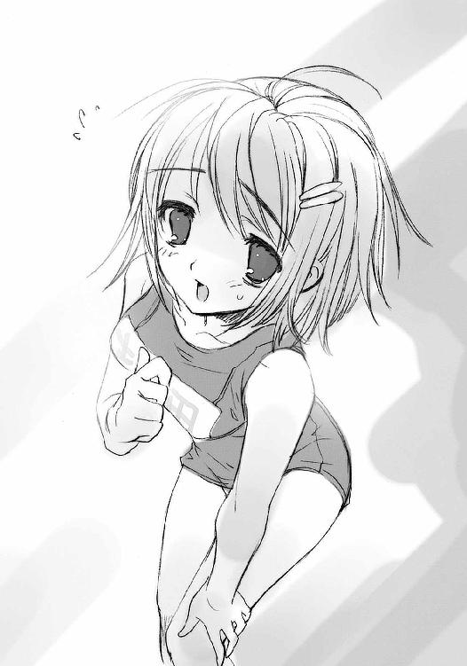
「そう。それじゃあ」
やや力のない微笑で答えて、池はプールに戻って行った。
（......池君）
自分が普通の言葉遣いで接することのできる、ただ一人の男子生徒。気の弱い自分をいろいろと助けてくれた、とても親切なクラスメイト。
坂井悠二との仲の進展についても、相談に乗ってくれた。もっと露骨に、二人きりになる状況を作ってくれたりしたこともあった。坂井悠二との初めてのデートも、彼が切り出してくれなければ、絶対に実現しなかったろう。
しかし、今はもう、そんな彼の助力を求めることはできなかった。他でもない、自分自身のせいだった。
ほんの数日前、
なんの苦労もせず、池速人が用意したお膳立てに乗って、
なんの覚悟もなく、坂井悠二との距離を縮めようとして、
結果、逆に彼と平井ゆかりの仲の良さを見せ付けられて、
そして、その悲しみを無節操に池速人へと吐露した挙句、自分のために坂井悠二を弾劾してくれた彼に、何もできないという自分の嫉妬を混ぜて、怒りを吐き散らしてしまった。
今でも、そんな身勝手で無茶苦茶な自分の行為を思い出すたびに、猛烈な自己嫌悪に陥ってしまう。
しかし、池の助力を得られなくなったのは、そのことが原因で彼と仲違いしたからではなかった。それどころか彼には、その騒ぎのあった日の放課後、
「ごめん、吉田さん。先走って、勝手なことして」
と謝罪された。
逆に、また先に謝られたことに驚いて、自分も慌てて謝罪し返した。
「ううん、私の方こそ、ごめんなさい。池君は全然悪くないのに怒鳴り散らしたり、逆上したり......本当に、私が悪かったの。ごめんなさい」
池に対しては、簡単に言いたいことが言えた。
「そんな......悪いのは僕──」
「私が悪いんです」
こうして、相手を遮って、自分の意見を言うことさえも。
池は少し呆気に取られ、そして苦笑した。
「じゃあ......吉田さん、おあいこってことで、どうかな？」
池は、まとめるのが本当にうまい。
その提案を、自分は少し考えてから受け入れた。
「うん......ありがとう、池君」
「こっちこそ」
少し弱く笑って、池は手を差し出した。
ごく自然に、自分も手を出し、握手をした。
（池君って......）
自分としては、そんな風に良い友人と仲直りできたことが、素直に嬉しかった。
しかもその翌日、池は同じように気まずくなった坂井悠二（彼も池に怒鳴り散らした現場にいたのだ！）との昼食に、何事もなかったかのように自分を呼んでくれた。事情を知らない佐藤と田中がいつものように騒いだり、平井ゆかりが話を蒸し返したりしなかったこともあって、いつの間にか前日の騒ぎはうやむやになって、いつもどおりの昼食の風景を、自分たちは仮にでも取り戻すことができた。
（池君って、本当に偉い......でも）
おかしなことに、そんな池のやり方と行動に、自分は小さな反発らしきものを覚えていた。ここまでしてもらった、恩恵を受けた当人でありながら理不尽も甚だしいが、してくれたことには本当に感謝しているし嬉しくも思っているが、なにか釈然としないものがあった。
（池君はなんでも......自分のことまで、やり過ぎるよ）
要するに自分は、完全に余計なお節介で、どこまでも奇妙な感情だったが、彼のために怒っているらしい。
そして、これもおかしなことに、彼の方も自分の勝手な反発に気付いているようだった。彼はあれから、坂井悠二に関する話を口にしていない。遠慮というよりは、そこはかとない恐れのようなものを、彼は自分に見せるようになっていた。
（でも、私まだ、池君がいないと──）
そこまで思い返して、ぎくっとなった。
（あっ!? 私、また──）
もう何度目か分からない自己嫌悪に、身が縮む。
（また、他人に頼ってる......私が、自分でうまくできないのを、池君が助けてくれないせいにしてる......私、なんてひどい子なんだろう）
いつの間にか、池速人に責任を押し付けている。
いつまでも動けない......否、動かない自分への言い訳に、池速人を使っている。
その情けない自分の心の在り様を、また思い知らされた。
（どうして、私ってこうなの......？）
本当に、泣きたくなった。
プールから上がる楽しげな喧騒が、痛い。
「わっぷ、た、田中お前、さっきから僕、狙ってないか？」
「グーゼンだろ？ とにかくお前の鬼だ、っとと」
（田中はいつもの通り、愛嬌と体力の男だ）
この世には、〝紅世の徒〟と呼ばれる異世界の人喰いたちが跋扈している。
彼らは、人間を喰らう。物理的に捕食するのではなく、この世にある根源の力である〝存在の力〟を奪うのである。そうして彼らは自身をこの世に現し、在り得ない事象を自在に起こす。
ここにある坂井悠二は、人間ではない。
数ヶ月前、〝紅世の徒〟に喰われて死んだ『本物の坂井悠二』......その残り滓から作られた代替物〝トーチ〟だった。
「あはは、ちゃんと間に一人置いてタッチしてるから、ルール違反じゃないでしょー」
（悔しいけど、緒方さんの言うとおりだ）
人間を喰らうことによって、そこに在るはずだったもの、そこから派生するはずだった影響が消える。その結果、世界に歪みが生まれる。
フレイムヘイズたちが、この歪みを察知して自分たちを追っていると気付いた〝徒〟たちは、その歪みを和らげ、追跡を撹乱するための道具を作った。
それが、トーチである。
「坂井鬼！ 坂井鬼！」
「谷川、後ろ後ろ!!」
「のわぅおっ!?」
（大騒ぎするみんな）
故人の〝存在の力〟の欠片から作られたトーチは、生前の記憶や人格をそのままに持っている。自分が既に亡いと知らぬまま、それは喰われる前と変わらない日常を過ごしていく。
が、やがて残された〝存在の力〟の消耗とともに、気力や存在感、周囲との関わりや居場所をなくしてゆく。そうして、その人間の居る意味も薄れた頃、トーチはひっそりと消える。そこに居た痕跡も、いつしかなくなる。誰も、そのことに気付かない。
今ここにいる坂井悠二も、その一つだった。
「い、池、交代してくれー」
「フェアプレー精神に徹しろよっ、ぷは、遊びにこそ、そういうのは必要だぞ」
（池はやっぱりこういう奴だ）
しかし、坂井悠二は普通のトーチではなかった。体の中に、どこからか転移してきた〝紅世〟の宝具を宿す『旅する宝の蔵』......〝ミステス〟という、特別なトーチだった。
しかも、彼が宿した宝具は、時の事象に干渉する〝紅世の徒〟秘宝中の秘宝、『零時迷子』。これは、日々消耗し続けるトーチの〝存在の力〟を毎日零時に回復させるという、一種の永久機関だった。これのあるおかげで、坂井悠二は気力や人格を保ったまま、日々を暮らしてゆくことができた。
「悠二、どこ見てるの、お前が鬼でしょ」
「いや、吉田さんも、こっちに来ればいいのにと思ぶはっごぼ!?」
「......平井ちゃん、普通、自分から鬼は殴るもんじゃないぞ」
「ねえ、鬼を殴った場合はどうなんの、池君？」
「交代だな。平井さんが鬼ね。あ、もう坂井を殴っても鬼にならないよ」
「ルールは覚えてる!!」
（もうすっかり、シャナも皆に馴染んでる、笑い声が響いて......僕らがここにいることは、もうおかしなことなんかじゃ、ない......）
悠二は知らず、当面不都合のない毎日と、全てへの慣れの中、自分という存在の非常識さと特異さ、感じていた悲嘆と絶望を薄れさせていた。どころか、今では呑気に、自分が生前の生活の中に復帰していると、その中にシャナさえ混じって不自然でないと、能天気な喜びと安心感をさえ抱いていた。
もちろん、そんなものは、全くの錯覚だった。
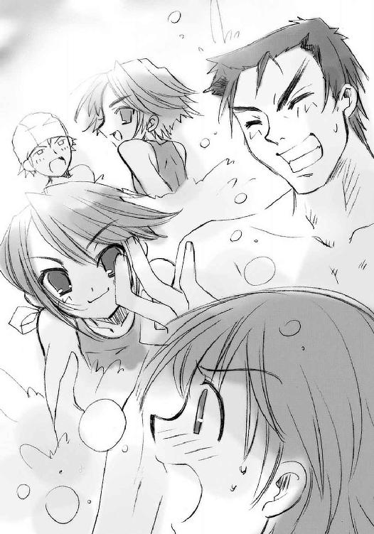
ここから三日後の話
どことも知れない暗闇、その床に、馬鹿のように白けた緑色の紋章が煌々と輝いていた。
幾何学的にも生物的にも見えるそれは、〝紅世の徒〟個々人の意志と構築力によって様々な不思議をこの世に現す〝自在法〟......その稼動を図に表す〝自在式〟だった。
「さぁーて、いぃーよいよ実験が始まりますよー？ これほどの歪みは、そぉーうはありませんからねぇーえ!!」
だらんと長い白衣を着たヒョロ長い姿が、その紋章を覗き込んでいる。今にも掴みかからんばかりに伸ばされた両腕の先で、ぴったり張り付く手袋に覆われた細い指が蠢いている。
「んー？ んんんんー？」
唸りを上げて数秒、長い白衣が突然、カクン、と横に折れ曲がった。
そしてまた突然、白衣は怪鳥のような叫びを上げた。
「ドォ────ミノォオオ────!!」
「はあ────い!!」
答えとともに、シャリリリリ、と金属が細かく擦れ合うような音が響く。
と、白衣の傍らに、紋章と同じ色の炎が渦巻くように湧き上がった。
「はいはあーい、お呼びでございますか、教授？」
炎の渦の中から現れたのは、二メートルを超す、まるでガスタンクのようにまん丸の物体だった。その天辺には、ミイラ男のようにグルグル巻きに膨れた発条に大小の歯車を両目として付け、頭頂部にネジを突き出した顔モドキが据えてある。その手足も顔同様、パイプやら歯車やらで、あくまでいい加減にそれらしく形作られている。
その妙な物体が僅かに前に屈んで、敬服の姿勢を取る。
「あなた様の忠実なる〝燐子〟ドミノはここにおりますですよ──って、痛い痛いでほはひはふふふふ!?」
ニュウッと伸びた白衣の腕の先、玩具のマジックハンドのような形状に変わった手が、ドミノと呼ばれた〝燐子〟の、口のない頬をキリキリとつねり上げていた。
「返事は一度だけですよぉー、ドォミノォー？」
「はひはひ、ほほひ、はひ、ひょうひゅー」
「よぉーろしい、とぉころでドォミノォー？」
「はい、教ひゅひははは」
また白衣はつねる。
「どぉーこへ行っていたのですか。おかげで私は暗闇で寂しく独り言なんか言ってしまったじゃありませんかぁー？」
「ふひはへんふひはへん......教授のご指示どおり、下で『夜会の櫃』の整備をしていたのでございまふひはいひはい」
またまたつねる。
「ドォーミノォー？ 遠回しに私を責めていますねえぇー？」
「ほんはほほはひはへん......痛たたた」
ようやくマジックハンドから開放されたドミノは、シャリシャリと頬を擦って痛みを和らげる。そのついでに、もう片方の手をひょいと伸ばして、頭頂部に突き出た発条ネジを手首ごとキリキリと回す。つねられて歪んだ発条が体の中に巻き込まれていき、代わりに伸びた発条で顔が覆われた。
彼（？）は新品になった顔を傾けて、丁寧な声で訊く。
「あー、ごほん。では教授、いよいよでございますね？」
「そぉーうです、ドォーミノォー」
訊かれた白衣の〝教授〟は、数分前に取っていた姿勢と言葉を、もう一度。
「さぁーて、いぃーよいよ実験が始まりますよー？ これほどの『歪み』は、そぉーうはありませんからねぇーえ!!」
今にも掴みかからんばかりに伸ばされた両腕の先で、ぴったり張り付く手袋に覆われた細い指が蠢いている。
２ 展望
夏の日は、下校時間を迎えても未だ高い。
そんな白けた明るさの元、吉田一美は一人、下校の途についていた。大通りから学校の塀沿いに回って、脇道に入る。
中途半端に広いその道は、住宅地から大通りに出る支道の一つで、両脇の商店と通行人の多さから、市街中心にある繁華街とはまた違う、生活の賑やかさに満ちていた。
スーパーより安いことを声高に叫ぶ八百屋、配達のビンを篭にくくりつけている酒屋、下校途中の女子学生を集めるケーキ屋、せわしなくバンに荷物を積むクリーニング屋などが、それぞれのやり方で手際よく、掻き入れ時を過ごしている。
それら活力の波にもまれて、しかし吉田の顔色は暗かった。人にぶつからない程度に顔を上げ、鞄を重そうに提げて歩く。どうしていいのか分からない......まさに途方に暮れるとはこのことだった。
（いつまでウジウジしてるつもりなの）
そう思っている。
そうしていることの愚かしさも分かっている。
しかし、それでも、どうしようもない。
ただできることとして、とぼとぼと歩く彼女の目の前に、
「おっと！」
「っひゃ!?」
尖った張りぼてが突き出された。
思わず足を止めた彼女の目の前に、デザインセンスの欠如から間抜けにデフォルメされた鳥の飾りがあった。
「ごめんよー」
それを街灯に据え付けようとしていた作業員は軽く謝って、梯子の上にいる同僚に、その飾りを手渡した。梯子の上の同僚も帽子を軽く取って見せる。
「すいませーん！」
「い、いえ、大丈夫です」
吉田も慌てて、ぺこりとお辞儀して返し、その場を足早に去る。
後ろから、
「ひゅう、かーわいー」
「バカ、真面目にやれよ」
などと言い合う声が聞こえたので、顔が真っ赤に染まった。
（そういえば）
ほんの少し視線を上げて、街の様子に目をやる。
（ミサゴ祭り、もう明後日なんだ......）
期待の匂う空気の中、各商店の軒先に蛍光色の垂れ幕が無数に下がっていた。先刻から作業員たちが取り付けていたものと同じ鳥の飾りも、街灯に一羽ずつ翼を広げている。それらの飾り全てには、『御崎市ミサゴ祭り』という、語呂の良し悪しも微妙な文字が書かれていた。
ミサゴ祭りというのは、真南川で催される大規模な花火大会である。
本来は、住宅地北部の丘上にある御崎神社（この神社が真南川の鎮守様だということを、吉田は中学の自由研究で初めて知った）で行われる地鎮祭の一種だったらしいが、詳しい縁起は失伝してしまっていて、よく分からないという。祭りの名称も、なぜミサゴなのか謎である。なにしろ、このミサゴというワシタカ科の鳥は海鳥で、しかも冬の季語である。周囲に海もない御崎市の夏祭りへの命名としては、いかにもミスマッチだった。
しかし、市の住民にとって、詳しい由来などはどうでもいい話である。彼ら生活人には、このミサゴ祭りが、ここ数十年の間に市の外からも大量の人を呼ぶ、県下有数の大イベントへと変貌した、という事実にのみ意味と価値がある。
ここ数日というもの、御崎市駅周囲の繁華街から真南川の河川敷までの道路、川に架かる大鉄橋・御崎大橋を含めた大通りから周囲の商店街は、年に一度の大きな祭りの準備におおわらわだった（ちなみに本来の地鎮祭も、御崎神社でしめやかに執り行われるが、そっちへの参加者はほとんどない）。この商店街では飾りつけとセールの準備を主としているが、真南川の堤防に立てば、河川敷の両岸で露店のテントが無数組み上がるという壮観を拝めるはずだった。
吉田の周囲、一年二組でも、もちろん話題になっている。ミサゴ祭りに誰を誘おう、誰と行こう、という会話は、この季節の風物詩だった。特に高校生ともなると、誰、という対象は友人だけでなく恋愛対象にまで広がり、互いの牽制と調整は、より激しく微妙になる。
（これに、誘えれば、いいんだけど）
人ごみの苦手な吉田も、坂井悠二と一緒に露店を巡る光景には、激しく心惹かれるものがあった。しかしこの数日、何度も彼を誘うことを試み──る前に挫折しているのだった。
一昨日の朝のホームルームの前も話す機会があった。昨日の小テストの答案を集めるときにも、周りはお祭りに関する雑談だらけで、軽く切り出せる状態だった。今日だって、黒板消しを叩いているときに、すぐ後ろで彼が今年のミサゴ祭りに呼ばれるマイナーなバンド（あいにくと知らない名前だった）の話をしていた。
それだけではない。他の誰かがミサゴ祭りのことを話題に出す度に、何度も何度も、
「坂井君は、誰と一緒に行くんですか？」
と言おうと思った。そして、
「もし良かったら、私と一緒に」
と続けようと思った。
しかし、そう、結局。
思った、それだけしかできなかった。
なにかきっかけがあれば坂井君に告白できる、そう思ってミサゴ祭りを見出し、今度はミサゴ祭りに誘うきっかけを探していた。及び腰で意気地がない自分を情けなく思いながら、決して諦めることができない。こういうとき、最後の後押しをくれた池速人にも、もう頼れない。
そうして思い惑っている間に、また、
（どうしよう）
という思考の行き止まりに帰ってきてしまうのだった。
（どうして、こうなんだろう、私......）
重い足は、それでもいつしか商店街を抜けて、人通りもまばらな街路を踏んでいた。磨り減ったレンガ敷きの歩道だけを、また見ている。
と、不意に、
「っ!?」
両脇腹から背筋へと、染み透るような悪寒が走った。
傍らを、買い物帰りらしい女性の自転車が通り過ぎる。
なぜか、その行く先へと釣られるように、吉田は顔を上げていた。
そこにいる、と思ったのだった。
「ぁ......！」
そしてやはり、それはいた。
夕日というにはまだ高い、白けた陽光の中。
歩道にぽつんと一人、吉田の行く手をさえぎるように、立っていた。
年端もいかない少年が。
その、十にも満たないと思える小さな姿には、しかし異様なまでの存在感があった。逃げるどころか、目を逸らすことさえできない。
（なに......？）
その少年は、夏も盛りというこの時期に、長袖のパーカーに太いスラックスという装いで体中を覆っていた。その上、パーカーのフードを頭からすっぽりと被っているため、露出している肌は顔の下半分と手首から先だけという状態だった。その僅かに見える肌の色は、薄く澄んだ褐色をしている。
そしてその子供は異様さの極め付けとして、布でグルグル巻きにした、身の丈の倍はある長く太い棒を、右の肩に立てかけていた。中が空だとしても、子供が担ぐには不自然すぎる体積と質感が、その棒にはあった。が、しかし、現に担いでいる。
（この、感じ、どこかで......？）
吉田はその少年を見る内、謂われのない不安が、胸に押し寄せてくるのを感じた。なぜか一瞬、その姿に赤い夕日が重なって見えた。記憶にはない、しかし怖気のするような違和感を、吉田はその姿に再び抱いていた。
少年の口が、開いてゆく。
（────ぁ、あ────）
吉田には、なぜかその様子が、はっきり、ゆっくり、見えた。
そこに、なにかを感じた。
理屈ではなく、感じた。
今あるなにかが、あまりに呆気なく壊れてゆくような。
その後から、冷たく重い恐怖が漏れ出てくるような。
それは、あるいは、望んでいたもの。
望んで、しかし恐れていたもの。
なにかが変わる。
坂井千草は、悠二の母にして、海外に単身赴任する夫・貫太郎から家を預かる誇り高き主婦である。おっとりしつつもしっかりした芯を持ち、アラストールさえも賢明と認める彼女に、
「......ねえ、千草」
坂井家の庭に面した縁側から顔を出したシャナが、躊躇いがちに声をかけた。
「あら、おかえりなさい、シャナちゃん」
千草は居間の食卓を拭いていた手を止め、和やかな笑顔を、帰ってきた『半日居候』の少女に向けた。
シャナが坂井家に入り浸るようになって数ヶ月、千草はこの微妙に非常識な少女の世話を、過剰なほどに焼いている。
本名......と彼女は思っている、この平井ゆかりという少女が、家庭の事情から一人暮らしをしていること、海外での重要な職務に就いている、育ての親であるアラストオル氏（実の両親はどうしたのか、という詮索を彼女はしない）からその世話を託されたことなどから、本人としては大義名分を得た気になって、彼女をほとんど実の娘のように思い、可愛がっていた。
ちなみに、千草にとってこの行為は、『シャナと悠二の関係』とは全くの別物であり、むしろ二人の不用意かつ安易な接触については警戒さえしている。
と、千草はその主な警戒対象である息子の姿が、少女の傍らにないのに気付いた。
「悠ちゃんは一緒じゃないの？」
シャナは朝晩の食事を坂井家で取り、自宅である平井家には寝に戻るだけ、という『半日居候』的サイクルで生活しているため、学校が終わると悠二と一緒に──余計な噂が立たないよう、学校で一旦別れた後、帰り道で合流してから──坂井家に帰宅する。
学校のある日は必ず、それがまるで義務であるかのように（千草の窺い知れない事情から、それは必然のことなのだが）悠二と一緒に帰ってくる彼女が一人というのは、非常に珍しいことだった。
そんな千草の疑問に対するシャナの答えは、行動の事実だけを簡潔に示したものである。
「一足先に、走って帰ってきた」
「あらあら」
気になる少女に置いていかれた息子の、寂しさと驚き半々の顔を思い浮かべて、千草はくすりと笑った。もちろん彼女は、そう行動をさせた何らかの理由を、シャナが抱いていることにも気付いている。手にした布巾を畳み直して食卓に置くと、縁側の戸の端から恐る恐るこちらを覗いているシャナの前に座って、目線を同じ高さに合わせる。
「どうしたの？」
「うん......」
シャナは、出した顔を少し引っ込めながら、いつしか信頼と尊敬の念を抱くようになった女性に小声で答えた。そのまま数秒悩み、しかしいつものように思い切って、はっきりと訊く。
「他人に食事を作るって行為には、なにか特別な意味があるの？」
「えっ」
千草は驚きと嬉しさから、思わず声を漏らした。
（......？）
シャナの胸に下げられた、金の輪を交差させた意匠のペンダントに、その意志を顕現させている〝紅世の王〟......彼女にフレイムヘイズとしての力を与える〝天壌の劫火〟アラストールも、釣られて思わず声を出しそうになった。
「食事を？」
（作る？）
喜色と怪訝の違いこそあれ、千草とアラストールは疑問をともにする。
「うん」
シャナは答えつつ、顔を戸に全て隠した。
「悠ちゃんがシャナちゃんに作って欲しいって言ったの？」
（いや、そんなことはなかったが......？）
「違う」
断言してまた数秒悩み、今度は顔を隠したままで白状する。
「今日のお昼──」
いつもの面子（一名欠員）による昼食時、初めて気付いたのだった。
悠二が、吉田一美の弁当をとても美味しそうに食べていることに。
吉田の行為と悠二の様子、双方を注意深く観察していたために気付けたのだが......とにかく悠二は、いつものだらしない緩んだ笑顔で、差し出された弁当を受け取った。これと同じく、いつものように、シャナが放ったお菓子も。
「でも、なんだか、違う感じがした」
甘いものは普通、それ以外のものの後に食べる、という作法は千草に教えてもらったが、そういうものを除いても、悠二が彼女のお菓子を、吉田の弁当のついでのように食べている気がしてならなかった。
そして、そのことが、ものすごく気に喰わない。
物をあげる、という行為なら確実に互角であるはずなのに。
今日あげたのは、最近お気に入りの美味しい大福餅だったのに。
そう思っていたとき、コンビニ惣菜におにぎり数個という田中栄太が言った。
「いーよなー、手作り弁当作ってもらえる奴は」
と。
シャナには、この言葉の意味が分からなかった。
（なにが、いいの？）
活力源の補給に、味と量以外の差異が存在しているとは思えない。あるとすれば栄養価の優劣だが、田中の言葉には、そういう理屈以外のものがあるように感じられた。現に、
「悠二は変な顔で笑って誤魔化して、吉田一美も......同じ顔で、笑ってて......」
「ヨシダ、カズミさん、ね」
大筋の事情を了解した千草は、柔らかな微笑を浮かべる頬に手を当てた。
（悠ちゃんったら、案外モテモテなのねえ）
高校になってから、弁当を作って持たせようか、と何度言っても頑として聞き入れなかった理由はそれだったのだろうか、と千草は思い、我が子の成長に少し寂しい溜息を吐いた。
そんな彼女に向けて、戸の影でへの字口を作るシャナは、拗ねるように言う。
「なんだか、嫌だった」
（......むう）
その胸にあるペンダントに意思を表すアラストールは、事態の意味を正確に把握できていなかった。千草に正体を明かせず、また普通人の常識にも疎い彼は、とある相談をきっかけに、シャナの精神的な養育を彼女に大部分委ねるようになっていた。今回もその一例なわけだが、だとしても、彼には微妙に鬱屈した感情もあった。
（なぜ、まず我に相談しないのだ）
たしかに、問われても的確な助言はできなかったかもしれない......いや、できなかったが、とりあえず自分に話すのが契約者と〝紅世の王〟、一心同体のフレイムヘイズとしての筋というものではないだろうか？ 思えば、千草のことを全面的に信頼するきっかけとなった相談も、シャナは自分にではなく、いきなり千草に持ちかけていた。
（女性同士の方が話しやすいのやも知れぬが、いや、だがしかし）
この場合は残念なのかどうか、異世界人たる〝紅世の徒〟にも、厳然たる性別が存在する。正確には、この世における性別に比定される、二種類の性質が存在する、ということだが。
つまり、この世での生殖に類する、存在の分化と、分化した個体の独自性獲得行為の主体者たる存在・女性と、それら変質の因子を提供する存在・男性である。これら両存在は、機能分担が人間における男女のそれと酷似しているためか、根本的な性質も似通っている。生物学的な在り様こそ別次元の存在だが、人間も〝徒〟も、男と女があることに変わりはない。
なんにせよ、アラストールは男であり、シャナは女なのだった。彼女の細やかな心情についての相談は、常識を知る知らない以前に、千草の方に適性があるということである。
と、
理屈では分かっているのだが、それでもフレイムヘイズとして手塩にかけて育て、また共に戦い暮らしてきた同志として、微妙な寂しさ、あるいは小さな嫉妬さえ覚えてしまうアラストールだった。
（奥方ならば、まず間違った指導はすまいが......）
そんな複雑なアラストールの期待を背負って、千草は口を開く。
「シャナちゃんも、お料理を作ってもらったことはあるでしょう？」
「......千草みたいに？」
ようやくシャナは戸の陰から顔を出した。
「ええ。アラストオルさんと暮らしてた頃、誰かに温かいものを作ってもらって、一緒に美味しく食べたことはあるんでしょう？」
訊きつつ、千草は自分の傍らの縁をぽんと叩いて、シャナに座るよう促す。
「アラストールとは一緒に食べたことがない。ヴィルヘルミナとならあるけど......」
シャナも答えつつ素直に従い、ストンと腰を下ろした。二人して庭を眺め、視線を合わさない。話しにくいことを話し合うための格好だった。
「......あれは、千草と食べるみたいな感じじゃなくて、栄養を摂取する、お互いの仕事の一つだったと思う」
「そう」
千草はその、一見不遇に思える境遇への論評を避けた。淡泊な言葉ではあっても、少女の声には何者も犯しがたい、軽薄な慰めなど跳ね返してしまうほどの、大きな喜びが宿っていた。
だから千草は、
「それじゃあ分からないわね」
と事実を認めるだけに止めた。
「手作りのお弁当を渡す行為っていうのはね、シャナちゃん」
「うん」
シャナは顔を向けず、素直に耳を傾ける。
千草も彼女を見ず、淡々と話す。
「その人が好きだって言ってるのと同じなの」
「えっ!?」
シャナは世界の終わりのような表情をして立ち上がった。取り繕っていた冷静さなど消し飛んで、顔色も蒼然となっている。既にそういうことになっていた事態に、それに気付かなかった自分の愚かさに、爆発的な怒りが湧き上がってくる。
千草は少女の過敏な反応に苦笑した。手を引いて、再び座らせる。
「落ち着いて。シャナちゃんは、物事を杓子定規に考えすぎる癖があるわよ？ そういう気持ちを込めた行為だからって、相手がそれをはっきり理解しているわけでも、まして受け入れてるわけでもないの」
「だって......」
座り直したシャナは、不安げに千草の手を握る。
手作りの弁当を渡す行為に、そういう意味が込められているのは事実なのだから、悠二はそれに気付いているはずなのだ。それを受け取り続けているということは、つまり、悠二が吉田の『好きだ』という気持ちを了承している、ということになるのではないか......？
シャナは指摘されたとおりに物事を定義付けながら考え、しぼむように座る。
そんな可愛い少女に、千草は肩を寄せた。
「要するにね、シャナちゃん。お料理を作ってあげるっていうのは、あなたのことを大切に思っています、あなたを幸せにしてあげたいんです、そんな『思いやり』を相手に示す行為なの。お弁当は、その中でも特別なものだけど......」
「だけど？」
シャナも心持ち、千草に肩を預ける。
「結局、どれだけ相手のことを想っていても、差し出すものに心を込めていても、実際に口に出して自分の気持ちを伝えないと、相手は答えてくれないものなの。こういうことでは、特にね。そのヨシダカズミさんは、どうなのかしら」
「......」
おそらくはまだだ、とシャナは思う。
しかし、数日前の宣戦布告における真剣さから、そう時は残されていないように思──
（時が、残されて......？）
ふと、気付いた。
残っているから、なんだというのか。
その間に、その前に、自分が？ そうしたとして、吉田一美を止められるのか？ それに、そう、そもそも悠二は、自分のことを、どう思って......？
さっきまでの怒りが、なぜかいきなり、不安に変わっていた。
（──「私、坂井君にもう一度、今度こそはっきり自分の口で、好きです、って言う」──）
その、自分に恐れを与える言葉の中から、不安の核心を抜き出す。
（......好き、って言う......）
それを自分に重ね合わせて、思う。
（私、悠二が、好き）
全く自然に、その言葉を呑み込むことができた。
そして、不安の奥底から、衝動めいた欲求が湧き上がってきた。
（悠二に、『好きだ』って、言われたい）
それは、熱くて嬉しい、大きくて怖い、あの『どうしようもない気持ち』だった。
自分の全てを使って悠二を自分の方に引き寄せたい、という強い気持ちだった。
（そうだ、私......悠二に『好きだ』って、言われたいんだ）
でも、どうすれば良いのかは、全く分からない。
悠二に、吉田一美が宣言したように『好きだ』と言えば良いのだろうか。
でも、悠二が『うん、僕も好きだよ』と答えてくれるとは限らない。
自分の持つ力ではどうにもならない、あやふやな勝算しか持てない。
でも、絶対に、そう言って欲しい。
悠二に、自分のことを、好きになって欲しい。
そのとき、閃いた。
「だから、思いやりを、届けるんだ」
「！」
千草は少女の不意な結論に驚き、言葉に込められた気持ちを正確に感じ取り、そして、困った笑みに溜息を混ぜた。
「ふう......本当に、女の子っていうのは早熟なのねえ......アラストオルさんに請け負ったばかりなのに」
（──？ ──？ ──？）
一連の会話を聞いていたアラストールだが、彼には二人の会話の流れが、さっぱり把握できなかった。ただ、なにやら気に喰わない、彼にとって不穏な事態......つまりは坂井悠二に対する措置なり方針なりが定められたらしい、それだけは分かった。
（奥方......本当に、頼むぞ）
以前のような、千草への反発はない。が、それでも、自分の手出しできない場所における契約者の挙動に、そこはかとない不安を覚える〝天壌の劫火〟だった。
「あなたは、知っているのですか？」
外国人らしい、その少年の口から紡ぎ出されたのは、短い問い。
明晰な日本語を奏でた子供特有の高い声には、なぜか瑞々しさが全く感じられなかった。ひたすら寂びて枯れている。しかしどういうわけか、その声は、やや距離を開けた吉田一美の耳にもはっきりと届いていた。
吉田はその不思議な問いと声に、答えることができなかった。
「......ぁ」
目の前のものを、今ここに来たものを、信じられないといった顔で見ているだけだった。
少年は、そんな彼女の立ち尽くす様子に、少し顎を突き出した。フード下の目線を宙に泳がせる、疑問の姿らしい。妙に老成した仕草で、顎に左の手をやって呟く。
「さて、はて......」
その中指から二本、小さなガラス玉を繋ぎ合わせたような飾り紐が、手の甲から袖の中に、ちゃらりきらりと流れ光った。
その美しさを感じかけて、吉田はぎょっとなった。
少年の見せた手の甲の真ん中、二本の飾り紐の間に、大きな穴の塞がったような傷跡が覗いていたのである。よく見れば、顎にも添えた指にも、大小の切り傷や引き攣れた痕が幾つもあった。
その異様な少年は、吉田の驚愕に気付かない風に軽く言う。
「気配の端が濃く匂ったのですが......協力者ではないのですか？」
「ふうむ」
どこからともなく、今度は老人の嗄れ声が発せられた。吉田にはそれが少年の手首あたり......飾り紐から聞こえたような気がした。
吉田を完全に事態から置いてけぼりにして、老人の声は続ける。
「偽装して定住する者の傍におるがゆえの影響じゃろう。この歪みを目指す〝徒〟を警戒しておると見たが、ふうむ」
「ああ、気配だけはやたら大きいですからね」
「ふうむ、仕事の合間にでも、挨拶に出向くとしようか」
「ああ、そうですね。ともあれ、このおじょうちゃんには是非、協力していただきたいところですが」
少年は一人立って、誰かと会話をしている。
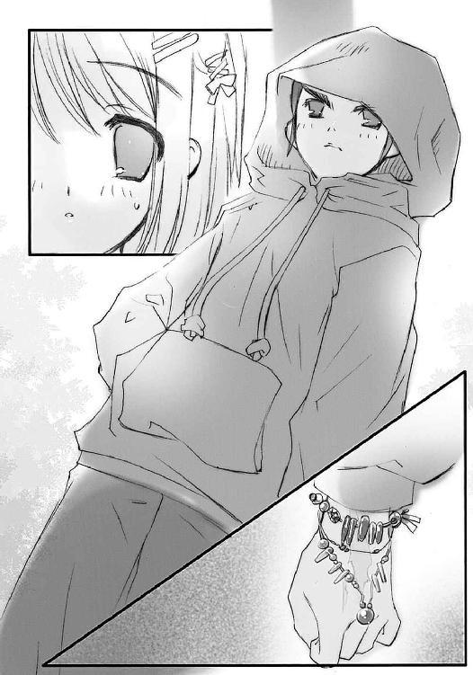
しかし吉田はそれを当然、
変わった外国人の子供が、なにか手のこんだ遊びをしている、
知らない土地でお父さんお母さんとはぐれて、誰かと話をしたがっているのだろうか、
と思った。
実は、常識で考えれば、少年の風体や行為、雰囲気から、明らかにおかしいことは一目瞭然なのだが、それでも普通、日常の中に暮らす人間というものは、異常な状況をやすやすと受け入れられたりはしないのである。
現に吉田も、
（おかしい、変だ）
と思っている。正確には、感じている。
少年の老成した仕草、肩に立てかけた長い棒、端々に覗く無数の傷、どこからか聞こえる老人の声、なにより、その異様なまでの存在感と違和感。
感覚は明らかに、これは『違うなにか』だと告げている。
「......あ、あの」
しかし、普通人である吉田はそれを受け入れなかった。強いて、それは臆病な自分が感じるなにかの間違い、目の前のこれは、子供が人をからかって遊んでいるのだ、そう思った。
「君、迷子に、なっちゃったの？」
だから、彼女の問いは、至極平凡なものだった。
「一緒に、お父さんお母さん、探してあげようか？」
少年はそんな、自分の知る世界に居続けようとする少女の姿......彼らと出会った人間が数え切れないほど取ってきた姿に、苦笑混じりに答えた。
「ああ、すいません」
それは、否定の言葉だった。
「しかし、この仕事には結局、人間の手助けが要るんです。我々は、そこにあるものをあるがままに感じるがために、『本来そこにあったはずの世界』との違和感を感じられませんから」
もはや少年は、先の吉田の問いなど無かったかのように話す。
話の内容は無論、吉田にはさっぱり意味が分からなかった。分かろうともしなかった。実際、常識の壁の中にある彼女はまだ少年を、
（おかしなことを言う子）
と思いたがっていた。
少年の方も、そういう人間の反応には慣れっこになっている。だから簡潔に、自分に必要な質問を、彼女にも解答できる質問をする。
「ああ、おじょうちゃんは、この街に住んで何年になりますか？」
少年の問う口調は、重々しくも優しい。実際、からかっている様子ではない。
吉田もつい、戸惑いながらも答えてしまう。
「......生まれたときから、だけど」
「ああ、それはいい。人選を誤ってはいなかったようです」
「ふむふむ、結果オーライ、という奴ではないかな」
一人から返る、二つの答え。
いつの間にか、遠かったはずの互いの距離が、縮まっていた。
数歩前に迫った少年が、フードの下に目線を隠したまま、僅かに腰を屈めた。
「ああ、申し遅れました。私は『儀装の駆り手』カムシン......カムシン、で構いません」
「儂は〝不抜の尖嶺〟べへモット。儂も、ベヘモットでよいぞ、おじょうちゃん」
言われても、吉田にはなにがなんだか分からない。
（ぎそ......？ なに、外国の、称号？）
吉田は正直、もうこんなわけの分からない子供など放って逃げ出したかった。しかし他でもない、彼女が認識することを拒否している少年の貫禄が、彼女をこの場から逃がさない。
少年・カムシンはフードの下で再び苦笑した。しつつ、子供のでたらめとは思えない、確固たる意志を込めた言葉を、流れるように語る。
「ああ、大丈夫。こんなことを言って信用する人もいないとは思いますが、人間がくくる範疇にある犯罪者ではありません。我々を怖いと思うのは、自然物としては当然の本能ですが、その我々は、できるだけ被害を最小限にすることを、考えています」
「ふむ、このままでは、とてもまずいんじゃよ。追々事情は説明するが......とりあえず、我々の仕事を手伝う、その求めを引き受けてはくれんかね」
吉田は、近付いた二人の声を聞く。
腹話術、では明らかになかった。明らかなのは、ベヘモットと名乗った老人の嗄れ声が、少年の左腕から発せられているということだった。
「仕、事......？」
吉田は答えつつ、携帯電話なりスピーカーなりを隠しているのだろう、となんとか理屈をつける。だんだんその抵抗も虚しくなってきたことを感じながら。
「ああ、そうです、仕事です。しかも、できるだけ急ぎのことなのです」
「ふむ、今日は準備、付き合ってもらうのは明日いっぱい、仕上げに明後日、というスケジュールが理想的なのじゃが」
「......」
どういう遊びなのだろう、それとも他に誰か（声を出している老人？）が、このカムシンと名乗る少年を使って、おかしなことを企んでいるのだろうか、と吉田は警戒する。少年の語る様子に悪意は感じられなかったが、だからといって初対面の、しかもこんな奇妙に過ぎる少年の言うことを、まともに信じられるわけもなかった。
ただ、
心の底から気味の悪い違和感が......既視感にも似た、いつかどこかで感じたような違和感が湧き上がってくる。目の前の少年にはそんな、無条件で恐怖を呼び起こさせるような、異様さがあった。
（さて、とりあえず話だけは聞いてくれているようですが......）
フードの下からその様子を窺うカムシンは、少女の日常の揺らぐ様を冷酷に見つめる。フレイムヘイズの近くにあるといっても、やはり普通の人間はそうそう簡単にこちら側に踏み込んでは来てはくれない。協力を取り付けるには、まだ手間が要りそうだった。
（生まれたときからこの街にいる、というのなら適任には違いありませんしねえ）
ふう、と溜息を吐いてから、カムシンは口を開く。
「ああ、とりあえず、もう少し話を聞いてみてください」
「ふむ、それから判断して、できれば明日一日で良いから、付き合って欲しいんじゃ」
この二人は吉田に、本当に分かってもらう必要を感じなかった。ただ、自分たちの役に立ってもらえればよかった。なにより彼らの事情は、人間が深く考え、捉えたところでどうしようもないことだった。ゆえに、必要以上に深入りさせるつもりもなかった。
冷たい打算として、同時に温かな思いやりとして、彼らはまず、協力してもらうための、気休め程度の前提を放る。
「ああ、終わった後には、起きたこと全て、忘れてもらって構いません。いや、むしろその方が良いでしょう」
「ふむ、我々と関わりを持つようなことは、人の一生の内でも、そうそうあるまいからの」
二人は口調同様、答えを急がない。
やがて、呟くように小さな声で、吉田は訊く。目の前の奇妙さを、胸の奥底の怖さを、少しでも和らげるために。
「......なにを、するの？」
カムシンの、切り傷を縦断させた唇が、少し笑みの方向に曲がった。
「ああ、至極簡単に言えば、歪んだところを直す、というものです。危険は一切ありません。おじょうちゃんは、ただ我々と一緒にこの街のあちこちを感じて、おかしい、と思ったところを我々に教えてくれればいいのです」
「ふむ、正直なところ、この街の違和感を感じ取ることのできる人間を探して、事情を説明して、最後に了解を得る作業をやり直すのは、骨が折れるんじゃよ......実際、いつも手間取るのは、この初動段階でなあ」
「無自覚とはいえ、我々の同志に関わった者として、なんとか引き受けてはもらえないでしょうか。重ねて言いますが、危険は一切ありません」
「......」
おかしな子供が、わけの分からないことを言っている。
吉田としては、そう切り捨てて、一切合財拒否してしまっても良かった。そうしても、おそらく少年（と老人？）は無理強いしないだろう......彼からはそんな、威圧感の反対側にある安心感のようなものまでも感じさせられていた。
だから、吉田は断ろうとした。
しかし、それは容易に口から出なかった。
どういうわけか、彼女の胸の奥の違和感が、本来なら恐怖しか与えないだろうその不気味さに、本来選ばせるべき拒否とは逆の、承諾に足るだけの魅力を感じさせていた。
あまりに異質すぎる少年と、どこからか声を出している老人の求め......これは自分が今、欲しているもののように思えた。
意志薄弱な自分に、有無を言わせず押し寄せてくるもの。
紛れもない、恐怖であるはずのそれに、吉田一美は誘惑されていた。
少年らの誘いそのものにではない、それがもたらす、今までと違う眺め。
苦しくて身動きの取れない、八方塞がりな今を、強引にでも変えてくれる力。
（子供の、おかしなごっこ遊びに少し付き合ってあげるくらいは、いいかも......周りの子が、外国人だからって遊んでくれないのかもしれないし......そう、それに、怖そうなことがあればそこで止めればいいんだし......）
その常識的な考えが、それこそが吉田の、自分自身へのいいわけだった。
そうして、躊躇すること数秒、
「じゃ、じゃあ......少しくらいなら......」
彼女は絶望への一歩を、無自覚に踏み出した。
真夜中、坂井家は自在法『封絶』に包まれる。
この、ドーム状に展開された陽炎の壁は、内部を世界の流れから切り離し、外部から隔離・隠蔽する因果孤立空間である。内部の地面には、奇怪な文字列の紋章が紅蓮の火線で描かれ、自在法の発現を示していた。
それら、火線も揺れる地面の紋章と、ときおり陽炎の壁に混じる紅蓮の色が不気味に揺れる光景は、炎獄という言葉を坂井悠二に連想させた。この中に囚われた物と者は、外との因果を断たれて静止する。中で動けるのは〝紅世〟に関わりのある者だけ。悠二は例外中の例外で、普通に動くことができる。身の内に宿した、時の事象に干渉する〝紅世〟の秘宝『零時迷子』の力だった。
その悠二と、この封絶を張ったシャナの姿は、坂井家の屋根の上にある。
二人並んで、屋根の天辺・棟に座っている。
悠二はＴシャツにジャージのズボン、シャナは炎髪灼眼を煌かせ、薄手の寝巻きの上にフレイムヘイズの黒衣を羽織っている。もちろん夜の逢引などではない。お互い、零時を前にした夜の鍛錬の真っ最中だった。
悠二の内にある『零時迷子』は、先の力以外にも、その日に宿主が消耗した〝存在の力〟を午前零時に完全回復させるという、脅威の力も持っている（というより、これが本来の用途である）。〝紅世の徒〟秘宝中の秘宝と呼ばれる所以だった。
二人は零時の来る前、この回復の前提がある悠二自身の〝存在の力〟を使って、様々なフレイムヘイズとしての力や自在法などを鍛錬し、また試しているのだった。
悠二は数日前の戦い以降、とある鍛錬を継続して行っている。炎獄の景色から、シャナと同じ紅蓮の色を黒い相貌に取り込み、真剣な表情で精神を集中させている。
この鍛錬についてシャナが彼に示したのは、
「持っているイメージ、それだけで心を占めるの。『小さく集める』のは駄目。『大きな全て』にする。集中っていうのは、寄せ集めることじゃなくて、それ以外をなくすことなの」
という十五秒のレクチャーのみ。
それでも言われた通り、悠二は一つのイメージのみを思い浮かべ、目的の力を捉えようとしている。不幸中の幸いと言うべきか、イメージはこれ以上ないほどはっきりと、脳裏に刻み付けられていた。
濁った紫の炎の向こうから、自分の存在（命、と言えるものが自分にあるのか、悠二には確信が持てなかった）を分解しようと迫る腕。
数日前、この御崎市を襲った三人の〝紅世の徒〟の一人、強大なる〝紅世の王〟、変幻自在の姿と力を誇る〝千変〟シュドナイの、腕だった。
その戦いの中、悠二は危うく〝ミステス〟たる身を分解され、『零時迷子』を奪われるところだった。具体的には、腕を体の中に突き通され、存在の根本への干渉を受けた。
が、そのとき、一つの......『戒禁』というらしい、一つの力が、シュドナイの腕を折った。名にし負う強者である〝紅世の王〟の腕を、あっさりと。まるで石膏像のように。その直後にマージョリーの救援もあって、結果、悠二は存在を保ち続けることができている。
ところが、シュドナイは要らぬ置き土産を悠二の中に残していた。
折れた腕、そのものである。
どことも言えない体の中に、〝紅世の王〟の強大な力の一部が異様な実在感とともに漂っている......まるで自分の中に、もう一本腕があるかのように感じる......そんな悪寒に耐えかねた悠二は、この厄介な置き土産を制御するために、必死の鍛錬を行っているのだった。
シャナが言うには、巧く制御できれば戦闘に利用できるかもしれない、とのことだったが、始めて数日では、悪寒を抑え込む程度が精一杯だった。
そうでなくても、戦闘力では普通人となんら変わるところのない悠二が、フレイムヘイズと〝徒〟の戦闘に参加したりするのは、無謀を通り越した愚かな行いである。もちろん、悠二としても、望んでそんな勝負に出ようとは思っていなかった。シュドナイと対峙することになったのも、様々な成り行きからの結果で、自分ではできるだけ危険を避けたつもりだったのだ。
（この腕といい、『零時迷子』といい、妙なものに取り付かれるのは、僕の宿命だったりするんだろうか？）
思いつつ、棟に腰掛けて、封絶の様をいつしかぼうっと眺めていた彼に、叱責が飛んだ。
「悠二、集中力が乱れてる」
その隣に座り、指先だけで手を繋いだシャナである。
「ご、ごめん」
「うん」
「......？」
その一言で叱責が終わった。
どうも今日は、シャナの様子がおかしかった。
下校のときはいきなり先に帰ってしまうし、家に帰ってみたら妙にムスッとした顔で黙り込んでいるし、夜の鍛錬にやってきたときも妙に距離を取っていたし、今も自身の鍛錬を放って悠二の監督ばかりしていた。
どことなく、よそよそしい。
無神経に（と、無神経な少年は思った）ズカズカやってきては、さばさばてきぱきと物事をこなしてゆく、いつもの彼女らしくなかった。
（なにか、悪いことしたかなあ？）
考えても、思い当たる節はない。
と、今度は別の方向、シャナの胸にあるペンダントから叱責が飛んできた。
「なにをぼうっとしているのだ、坂井悠二。指示を受けたら、即座に改めぬか」
「ご、ごめん」
思わず同じ台詞で謝る悠二に、追い討ちがかかる。
「貴様は既に『零時迷子』の回復時間を感じることができている。それと違う性質、しかも身の内にある〝存在の力〟など、容易に把握できるはずだ。その制御も然り。あとは貴様の真剣味一つということだ」
「わ、分かってるよ」
「ならば早々に始めるがいい」
「......」
アラストールの方は、なぜかいつにも増して刺々しい。
これも常の、素っ気なくはあっても意地悪ではない、公正な厳しさではなかった。どこか怒りを抑えているような気配がその声から感じられて、非常に居心地が悪い。
（い、いったい僕がなにをしたんだ!?）
よそよそしくはあっても指をしっかりと掴んでくるシャナと、平静を装って怒るアラストール......これらを横に置いて精神を集中するのは正直、無理というものだった。
しかし幸い、そんな悠二の微妙な苦境は、長く続かなかった。
紅蓮を時折過ぎらせる陽炎の中に一点、
「？」
揺らぐ夜空を無視して、確と輝く星が現れた。
群青の、星が。
それは、いきなり大きくなって炎の渦となり二人の前の屋根にズドン、
と降り立った。
「毎日毎日、飽きずによくやるわねえ、あんたたち」
「ヤーッハーッ！ 二人の熱い夜を邪魔して悪いな〜あ？」
渦巻く群青の炎を吹き飛ばして、いつものように派手に騒々しく姿を現したのは、『弔詞の詠み手』マージョリー・ドーと〝蹂躙の爪牙〟マルコシアスだった。
その出で立ちは、フレイムヘイズとしての彼女の常備品であるドでかい本型の神器〝グリモア〟こそ右脇に挟んでいるものの、艶やかな栗色の髪を適当に後ろでまとめていたり、浴衣を襟や両袖の位置もいい加減なまま帯でくくっていたりと、いかにも「宿からちょっと出てきた」風なぞんざいさである。足元に目を落とせば、綺麗に爪も整えられた素足はつっかけ履きだった。
もっともこの美女は、シャナと同等の存在感と貫禄を持っているため、乱れた格好も『そういうファッション』であるかのように見せている。
「こ、こんばんは」
まさに、聳え立つ、という形容がぴったりな女傑の登場に度肝を抜かれた悠二は、上擦った声で挨拶した。
「新しい気配のこと？」
シャナの方は、いきなり用件を切り出した。マージョリーに対しては、全くいつもの通りの調子である。やはり自分がなにかしたのだろうか、と悠二は改めて考えこんだ。
「そうよ。夕方頃、でっかいのが来てたでしょ」
「やーっぱフレイムヘイズみてえだな、クソ面白くもねえ」
（あんたたちが面白かったら、こっちは大変だよ）
悠二は好戦的な〝紅世の王〟の言い様と、ついでに自分の事情を思って、溜息を吐いた。
（やっぱり、おとなしく言うこと聞いてれば良かったのかなあ......？）
そう。下校時にシャナと別れたのは、今も街をうろついている気配の出現がきっかけだった。
帰り道で合流した頃、二人は同時に、新たな気配が御崎市にあることを感知した。かなり大きくはあったが、〝徒〟に感じたそれよりも、はるかに静かで穏やかな気配だった。
シャナはこれについて即断した。
「フレイムヘイズね。周囲に〝存在の力〟の乱れはないし、自在法の発現も感じられない」
「会いに行かなくていいのか？」
悠二にとっては普通の質問だったが、シャナは怪訝な顔で訊き返してきた。
「なんのために？」
「なんの、って......情報の交換とか、挨拶とか、することは──」
「ない」
シャナはきっぱりと答えた。
「フレイムヘイズは普通、お互い無駄に干渉し合ったりはしないの。情報を交換する場所も決まってる。人づての情報であっても欲しい者、価値のある情報を持ってる者、みんなそっちに行く。今、こっちに欲しいと思う情報はないし、あっちが情報を欲しがっているとしても、わざわざ行ってあげる義理は無い」
流れるような理屈に、悠二は怯んだ。
シャナはさらに言葉で押してきた。
「これだけ大きな気配を持ってる奴なら、この街に私や『弔詞の詠み手』がいることを感じてないわけがない。この意味は分かるでしょ？」
窺うように、試すように、シャナは問いかけた。
「えっと......もし〝徒〟なら、強敵がいる所に踏み込むときは、まず人を喰ったり自在法を使ったりして戦いの準備をする、ってこと？」
「うむ」
アラストールが代わりに答えた。その声には、僅かに満足げなニュアンスが入っていたように感じられた。これはいつものやりとりで、シャナも少し笑ったような気がした。
だとすると、
その後に付け加えた一言が、まずかったのか。
「でも、いちおう様子を見に行った方が良くないかな。あっちは池や吉田さんの家の方──」
「先に帰る」
「えっ？」
なにを訊く間も表情を確かめる間もなかった。
シャナはいきなり跳び上がって、屋根の向こうに消えてしまった。
（僕が知ったかぶりして、余計な口出ししたことが、そんなに気に喰わなかったのかな......なら、そう言ってくれればいいのに）
思い返す悠二を、マージョリーが手の甲を下に向ける形で指差した。
「この、あんたたちの連れにかかってる『戒禁』の件、話し合ってなかったでしょ。今来てる奴が変なちょっかい出す前に、いちおう知ってること教えとこうと思ってさ」
悠二は意外という風な感想を漏らす。
「あんたたちにしては慎重なんだな」
マージョリーは、数百年の戦歴を誇るフレイムヘイズ屈指の殺し屋として、少年の間抜けな質問を鼻で笑い飛ばした。
「ふん、状況を未整理のままにして、あんたたちに私たちの戦いを引っ掻き回されたら堪ったもんじゃないからよ。戦うときは好きにするけど、自分から不利を呼び込むほど酔狂でもないの」
「美味しく戦うってのには、それなりにコツがあるってことさ、兄ちゃん、ッヒヒ」
悠二はぐうの音も出ない。
そんな彼の前でマージョリーは腰を折り、話題の中心たる〝ミステス〟を眼前に捉えた。美女の顔が俄かに近付いてどぎまぎする悠二をよそに、今度は凄腕の自在師として彼女は口を開く。
「あの〝千変〟の腕をもいだ程の『戒禁』......私でも組み上げられるかどうか」
「は、はあ、──！」
悠二の、どもりながらの返事が、不意に体ごと硬直した。
妙に思ったシャナが見れば、悠二の視線は体を折ったマージョリーの胸元に注がれている。悠二の真正面にある緩んだ浴衣の襟元からは、豪勢というしかない胸の谷間が丸見えだった。
シャナは思わず、悠二と繋いでいた指先を強く握り込んでいた。
「っ!? 痛い痛い痛い!!」
突然、指先を万力のような力で締め付けられて悠二は飛び上がったが、シャナは離さない。とりあえず痛さギリギリのところまで力を緩めて、跳ねた悠二を元の場所、自分の隣に引き戻した。
「今日はボーっとしすぎ！」
「い、いやこれはさっきのとは!?」
「うるさいうるさいうるさい！ いいわけするな!!」
「......」
悠二はその勢いに押されて黙ったが、同時に、決して珍しくはないはずのシャナの怒鳴る姿に、奇妙な違和感を覚えていた。いつもと同じ言葉と同じ行動、なのに、なにかが違っているように思えた。そう、いつもの厳しさや誤魔化しではない、妙に切羽詰まったような──
その、ほんの一瞬だけ心を過ぎった疑問は、マージョリーの溜息ですぐ消えた。
「なーにやってんのよ、あんたたちは」
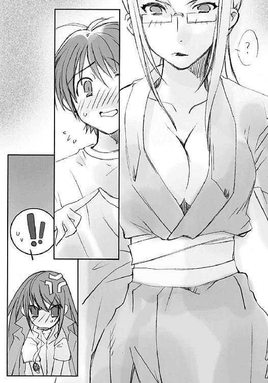
自分が原因とは思っていない美女は、肩をすくめて呆れ顔を作る。
「遊んでないで話、続けるわよ」
マルコシアスがヘラヘラと笑いながら軽薄流暢な声色で、同じ〝紅世の王〟に語りかける。
「ん〜で、〝天壌の劫火〟よお。『戒禁』のことは兄ちゃんに説明したのか？」
「基本的なことはな」
アラストールは遠雷の如き重く低い声で、短く答えた。彼はこの、正反対の性格をした〝蹂躙の爪牙〟と話すのがあまり好きではないのだった。
その雰囲気を感じて、悠二が言葉を継ぐ。気分は口述テストである。
「え〜と......〝ミステス〟に収めた宝具を守るための自在法で、稀に作られる、戦闘用の宝具を使う〝ミステス〟にかけられる、だっけ」
マージョリーの脇に挟まれた本がガタガタ揺れて答えた。
「ヒヒヒ、ま〜ま〜だな。加えて言やあ、その強固さは、かけた際の意志力の強さに比例するってことか。スグレ物だと、封絶の中でも動けたりするわけだ。しっかし、ミョーな話なんだわな、これが」
「妙？」
悠二はまだ、応用編までの講義をアラストールから受けていない。
「ああ。使い道から分かるだろーがよ、この自在法は普通、〝ミステス〟を作った直後にかけるもんなわけだ」
「そうか。僕は最初から『零時迷子』を収めるために作られた〝ミステス〟じゃないものな。他から転移してきたのに、その『戒禁』はまだかかっていた、か」
悠二の流れるような、本人は意識していない見事な理解力と即答に、マージョリーは感嘆の表情を作った。シャナもほんの少しだけ、誇らしげな微笑を浮かべる。
当の少年は、口述試験の緊張から、周囲の空気に気付いていない。
「僕の前に分解された〝ミステス〟って、たしか......」
合格点を出した生徒に対する教師の声で、アラストールが答えてやる。
「うむ、かの〝約束の二人〟の片割れだ。貴様の『戒禁』が、いつ誰に施されたものなのか、威力だけでは判別はつかぬが......発動時の状況はどのようなものだったのだ？」
話を振られたマージョリーは、唇に指先を当てて思い出す。
「そーね、接近しながら遠目で見てたけど......〝千変〟の奴、腕を突き通して軽く分解しようとしたら──」
説明の影でシャナは、今さらのように悠二が絶体絶命の危機にあったことを知らされて、僅かに顔を青ざめさせた。
「いきなりボキリ、よ。あいつが、油断してたとはいえ『戒禁』に阻まれるなんて、私も驚いたわ。威力だけなら、あの女のものと同等と言っていいわね」
マルコシアスも、軽い声の端に困惑を匂わせる。
「そーもそも『零時迷子』ってぇ宝具は、あの二人しか使ったことのねえ代物だからなあ。兄ちゃんにかけられた『戒禁』が宝具自体に備わってる機能なのか、それとも誰かが後から細工したのか、分かんねえんだよ」
「僕の宝具って、そんなにわけの分からないものだったのか......」
自分の胸に目を落とす悠二に、マージョリーはさらなる追い討ちをかける。
「でも、当面の問題はそっちじゃなくて、腕をもぎ取った後の方だと思うのよねー」
「後？」
シャナが怪訝な面持ちで訊く。
「そう、後。〝千変〟の奴、こいつの宝具が『零時迷子』と分かって大喜びしてたみたいよ。回復の宝具程度に、なにをどう肩入れしてたのやら。私が横から蹴りくれてやるまで、ほとんど我を失ってたわね」
悠二は頷き、言う。
「......うん、そうだ、覚えてる」
どころではない。
焼きついて離れなかった。
言葉は一言一句、表情は鮮明に。
自分に腕を伸ばす〝千変〟シュドナイの、
（──「まさか、貴様──そうなのか」──）
自身の腕をもぎ取られた苦痛をさえ押して浮かび上がる、爆発的な歓喜の形相を。
（──「まさか、まさかこれほど早く見つかるとは......」──）
存在の危機と同等でさえある、自分がなにか大きなものの一部であるという、引き込まれるような恐怖を感じさせられる、形相を。
「これほど早く見つかるとは？」
アラストールが、悠二に言わせたシュドナイの言葉を繰り返した。
シャナが、悠二の指を再び強く握って、言う。
「言葉からすると、〝千変〟が〝約束の二人〟を討ち滅ぼして、でも『零時迷子』を取り逃したってこと、なのかな......？」
「うむ。〝千変〟本人でなくとも、その知る範囲内において行われたのだろう。そして『零時迷子』は、同時期に〝狩人〟に喰われた坂井悠二のトーチの中に転移した、ということか」
自分が死んだ『本物』の残り滓ということを明確に語られて、悠二は少しゲンナリとなる。
「ん？ 〝千変〟の知る、範囲......？」
と、二人の言葉からマージョリーは連想し、
「いや、そうか、［仮装舞踏会］──！」
そして、舌を出さんばかりの渋い顔になった。
「まさか、〝逆理の裁者〟の絡んだ企みなのかしら」
「おーいおい、カンベンだぜ、〝千変〟の野郎。今さら忠勤を気取る柄かよ」
マルコシアスまでもが、珍しいことに苦々しい声でぼやいた。
わけが分からない悠二を置いて、アラストールが言う。
「あ奴は長く、［仮装舞踏会］と距離を取っていたはずだが......」
「でも、星のお姫様に頼まれたら、なんでもホイホイするでしょーね。そういう奴よ」
「ケーッ、主無しの捨て犬どもが。今度はなんのつもりだ？」
シャナがようやく、歴戦の士たちの会話に加わる。
「［仮装舞踏会］って、〝徒〟の大集団の一つね......？」
「うむ。坂井悠二」
それまでの不機嫌も吹き飛ばした真剣な〝天壌の劫火〟の声に、悠二は背筋を伸ばす。
「え、はい!?」
「貴様の『零時迷子』に関する事態は、我らが考えていたよりも、意外に大きいやも知れぬ」
「......」
「今、この街に現れたフレイムヘイズは、直接それと関係はあるまいが、ともかく時を惜しんで励め。奴らが動き出すとなれば、あらゆる可能性を視野に、今後の方針を決めてゆくこととなろうからな」
悠二は分からず、
「え、それって、どういう......」
シャナは理解して、
「ここから......？」
それぞれ言い、そして悠二はシャナの言葉からようやく理解した。
（ここ、から......）
旅立つ。
この御崎市から、出て行く。
自分の中にある秘宝『零時迷子』を狙う〝紅世の徒〟の大集団（初耳だった）から身を守ろうというのなら、たしかに一つ所に止まっているのは危険だった。それどころか、他でもない自分の存在こそが敵を招き寄せているとしたら......自分はこの街にとって害毒でしかない。
シャナたちが自分を守り戦ってくれるとしても、その負担を自分の我侭から無駄に増やしてしまうような真似は絶対にできなかった。彼女らこそが、まさに命を賭けて〝徒〟と戦っているのだから。
そう、理屈では分かっている。
（旅、立つ......？）
もし、アラストールたちの言う脅威が本当なら、今すぐにでもこの街を出て行くのが上策に決まっていた。決まりきっていた。
しかし、動かそうとした口は、重く、硬く、
「御崎市を、家を、出る......？」
出した声は、夏の夜にも白く凍るような、うそ寒さに満ちていた。
アラストールは答えなかった。
マージョリーたちも黙って見ている。
一人、シャナがその躊躇と恐れに、告げた。
「そう、出る」
その言葉は、悠二にとってはある意味、憧れでさえあった。
そのはずだった。
フレイムヘイズ『炎髪灼眼の討ち手』シャナと一緒に、『零時迷子』を宿した〝ミステス〟坂井悠二が、広くて遠い世界を、永い永い時を、共に歩んでいく。
自分の今ある境遇を考えればそれしかない、拒否など思いもよらない、進む道。
しかし、実際に具体的にどうするかなど、全く考えたこともなかった、進む道。
進むべき、ではない、進まねばならない、でもない、ただ事実として、進む道。
坂井悠二は、このとき、ようやく、初めて、その道の最初の一歩を踏んだのだった。
無邪気な夢や気楽な空想を覚まし、その道を現実として捉えるという、一歩を。
生まれ育った故郷、御崎市を背に、出て行く。
自分の安住の地から、家から、学校から消える。
母や、父や、友人たちの元から、旅立つ。
それら猛烈な、後悔にも似た未練を湧きあがらせる、悲しい道を想像して、悠二は思わず声を出していた。
「そ、そんな、急に言われても......」
この『自分』は、〝紅世の徒〟との戦いにおいては、〝存在の力〟を少し扱えるというだけの存在である。ときにはシャナよりも敵の気配を鋭敏に察知できるが、戦闘そのものでは全く役に立たない。
ただの人間としての力は、あるいはこれよりもさらに心許ない。十六歳の子供でしかない。免許の一つも持っていない。飛行機に乗ったこともない。新幹線の切符を買ったこともない。ろくにデパートに行ったこともない。御崎市駅の反対側さえよく知らない。大通りと高架と交差点から向こう、市外に出たこともあまりない。散髪屋には馴染みの店以外に行けない。スーパーでの値段の高低も分からない。二万円より大きな金額を財布に入れたこともない。
ない、ない、ない、ない──
ないない尽くしとは、まさにこのことだった。
とにかく『坂井悠二』には、人間としてのなにもかもが、なさすぎた。
それに、出て行くという行為は、自分だけの問題ではない。
学校はどうするのか（最初に脳裏に浮かんだのはこれだった）。辞めるなどという選択肢は欠片も考えたことがなかった。
母・千草を一人だけ家に残していくのか。心細い、悲しい。
父・貫太郎になんて言い訳すれば良いのか。怖い、寂しい。
友人たちとも別れなければならないのか。辛い、悔しい。
想像さえできない、それらの別れと生活全ての変化。
そしてなにより、
それらの人たちを、〝徒〟の跋扈する世界の中に、無防備なまま置いていくのか。
シャナからは、同じ場所を〝徒〟が二度襲うことは稀だと聞いたが、しかし現に〝狩人〟フリアグネの後に〝屍拾い〟ラミーがやってきた。その後に〝愛染の兄妹〟ソラトとティリエル、〝千変〟シュドナイもやってきた。短期間の内にである。
ラミーはフリアグネの異常な大喰いによって生まれたトーチ（自分もその一人だ）を求めて、ソラトとティリエルはシャナの大太刀を求めて、シュドナイはその護衛として、とそれらの襲来には、たしかに何らかの必然があったわけだが、三度も来たというのは厳然たる事実である。さらになにか別の必然が生じないと、誰に保証できるだろうか。
そんな危険性を承知で、この街から出て行って良いのか。
といって、このまま居続ければ確実に、シュドナイが報せただろう〝紅世の徒〟の大集団による襲撃があるはずだった。この場合は、絶対に犠牲者が出る。今度は母の番かもしれない、池や吉田、佐藤や田中かもしれない。そんなことになったら、と想像を働かせることさえ拒否してしまう、それは絶望の未来図だった。
しかし、そう、それを言うなら、実は海外にいる父だって危ないのだ。父の隣にシャナはいない。ある日突然母が、父など居なかったかのように振舞い始めたら......。
では、父をこの御崎市に呼び戻して守れば良いのか？ それは、危険の中にわざわざ呼んでしまうことにならないか？ 〝徒〟の大集団を相手に守れるのか？ 第一、自分たちは出て行くかもしれないのに？ 父の意志は、仕事はどうする？ 二人に自分たちの事情を話すのか？ こんな突拍子もない話に理解を示してくれるのか？ 話せば一生怯えて暮らさねばならないのではないか? 父も母もただの人間なのに？ そう、そうだ、なにより、そんな自分はなんだったか、知らず忘れようとしていなかったか!? 父や母に言えるのか?
坂井悠二は、とっくに死んでいる!!
今ここにいる自分は、たまたま宝具の力で永く持っているだけの
ギュッ
と握られて、我に返った。
「!!」
知らず冷や汗をびっしりかいていた悠二の指が、シャナに強く握られていた。
きつくではなく、しっかりと、強く。
自分を見つめる紅蓮の灼眼の、恐ろしいまでに強い輝きに当てられて、悠二は負の方向へ雪崩ようとしていた思考の奔流から、辛うじて逃れ出た。
「あ......、ごめん」
その煌きに向けて、悠二は謝っていた。
シャナは答えず、ただ灼眼を少し伏せて、言う。
「まだ、今すぐ出るわけにはいかない」
彼女の声の、姿勢の厳しさは変わらない。
「この街の歪みは大きすぎる。せめて調律師が来るまでは〝徒〟の襲撃を警戒しないと」
「ふ〜ん、［仮装舞踏会］襲撃の危険性と、どっちが上か......」
マージョリーはそんな同業の少女の言い分に、微妙な声で返した。
確率的にはほぼないといっていいが、もし次にこの街に〝王〟クラスの〝徒〟がたまたま〝存在の力〟の乱獲を行ったら......たしかに、恐ろしいことになる。
この世の歪みがある程度まで巨大化してしまうと、それを感じられる者たち、つまりフレイムヘイズと〝紅世の徒〟、双方を呼び寄せることとなってしまうのである。
巨大な歪みとは〝徒〟にとって、夜の闇に、ぽつん、と点っている灯火を見つけるようなものである。少しでも好奇心のある者なら近付いてゆく。そして当然と言うべきか、この世で自侭に過ごす欲求を持つ彼らの大半は、好奇心旺盛なのだった。
フレイムヘイズがやってくる理由は、もっと簡単である。歪みはまさに〝徒〟の痕跡なのだから、それを討滅する使命を持つ彼らは、まず調査にやってくる。そこに〝徒〟を見つければ交戦に入る。過去に幾度か起きた大戦はほとんどの場合、この連鎖反応にも似た双方の集結を大きな要因としていた。
つまり、フリアグネを起点とした御崎市にある歪みが、今以上に大きくなるのを防ぐために、この街を守らねばならない。調律師が来るまで。
「その、調律師って、なんなんだ？」
悠二が訊いた。自身の今後を決めるキーワードだということくらいは分かった。
シャナは彼の方を向かず、封絶の揺らめく陽炎を見ながら答える。
「この世の歪みを調整して、修復するフレイムヘイズのことよ。だいたい、戦いを長く続けて復讐心をすり減らした、古いフレイムヘイズがなる」
アラストールがその説明を補足する。
「戦いの中で研磨され、復讐心を超えた使命感の塊となった者たちだ。無論、永い時を生き抜くだけのしたたかさと強大な戦闘力も持っている」
「そいつらは、いつ頃やってくる......？」
悠二の核心の問いに、シャナは首を振って答えた。炎髪から火の粉が僅かに舞い散る。
「分からない。調律師の絶対数は少ないけど、彼らは歪みを見つける専門家だから、現れるのは時間の問題だと思う」
「そうか......」
悠二の慨嘆に、シャナは小さく言う。
「でも、それまで頑張ることは、できる」
「うん」
アラストールは、そんな二人の新たな決意を確かめると、マージョリーたちに向けて当座の方針を示す。
「思わぬ話になったが......〝蹂躙の爪牙〟マルコシアス、『弔詞の詠み手』マージョリー・ドー、今日この地に現れたフレイムヘイズの扱いについては、保留でよいな」
言われた二人は、少年少女の様への苦笑とともに諾と答える。
「おめえに命令される筋合いはねえが、ま、いーだろ」
「話すべきことは話したしね。あとは向こう次第かしら」
これは、ケンカを売ってくれば買う、の同義語である。
「でも、これだけ穏やかな気配だと、ちょっと期待できないか」
言うとマージョリーは、誰とも知らないフレイムヘイズを隠す夜景に目線を流した。そうして、今の自分とこれからの自分について、思いを馳せる。
（私は、どうしようかなあ......）
マージョリーが黙ってしまったので、悠二は、なんとなくシャナと顔を見合わせた。
見る者の心も燃やすような、彼女の炎髪と灼眼が煌いている。
そんな彼女の存在を、自分たちを包んで紅蓮の色を揺らめかせる封絶を、零時が近付いてくるのを、感じる。
前は、感じられなかった。
少しずつ、前に進んでいる。
それを確かめながら、思う。
（いつか......いや、近い将来、ここから、旅立つ......）
思い描いていた夢は、ただ始まっただけにせよ、現実となった。
たくさん、本当にたくさん、考えねばならないことができていた。
一介の少年が抱え込むには重すぎ、また大きすぎる問題だった。
しかし、考えねばならなかった。
これは、自分の前に敷かれ広がる、現実なのだから。
悠二は、全てへの悲しさや辛さ、寂しさや未練など溢れるものを精一杯に隠して、それでもすがるのではなく、立ち向かう言葉として、傍らの少女に言った。
「もう少し、待ってよ」
「......」
シャナは、彼が隠したものを全て見抜いて、しかし隠したという行為自体を評価して、強く笑い返した。その胸の内に凝り籠っていたモヤモヤとした気持ちは、すっかり消えていた。今、悠二と小さく繋いだ指先にこもった気持ちの前では、その程度のものなど、全く問題ではなかった。
それを表情に、密かに込めて、頷く。
「うん」
しかし彼らは、その『もう少し』を持つことさえ、許されなかった。
今、御崎市に新たに現れたフレイムヘイズは、調律師だった。
それを、彼らは知らない。
ここから二日後の話
どことも知れない暗闇、その床に、馬鹿のように白けた緑色の紋章が煌々と輝いていた。
その紋章に照らされて、棒のように細い白衣の〝教授〟が立っている。
「こぉの世の歪みのもたらすものとはなぁーんなのか？ 分ぁーかりますか、ドォーミノォー」
隣には、二メートルを超すガスタンクのようなまん丸の〝燐子〟ドミノが付き添っていた。
「はあーい、教授ぅひはははは」
指先をマジックハンドに変えた教授の手がにゅうっと伸びて、ドミノの、発条でできた顔モドキをつねりあげた。
「私だって分かっていなぁーいから、こぉーうして研究しているんですよぉー？ そぉれを、なんでおまえが分かっちゃぁーったりするんです？」
「ひへひへ、ほふひふほほへは......『はい教授、分かりません』と言おうと思ったわけで」
バン、と教授は手を額にやる、
「なぁーんでっ!?」
つもりが、ガン、と重い打撃音になった。手をマジックハンドにしたままだったのを忘れていたのである。
「っ、っ──そぉんなややこしいことをするんです!?」
数秒悶絶して、何事もなかったかのように言葉を継ぐ。
「はあーい、それは昨日教授が『下僕たるもの、ご主人様に対する返事には、拒否でもまずハイと答えるように』と仰ったからへひはひひはひ」
再びドミノはつねられる。
「私のせぇーいだと言うんですかぁ、ドォーミノォー」
「ひへひへへひへほんなことは......私め程度には、深く遠き真理など、その欠片も分かろうはずがございません。是非ともご教示をお願いしますでございます、教授」
「んんー、んふふふふ、んんー、そぉこまで乞われては、断るわけにもいーきませんねぇー、よぉろしい!!」
白衣をズバッと翻して、教授は体を意味もなく一回転半させ、ドミノに背を向けた。
「......ん、んー？」
やがて、半回転余計だったことに気付き、もう一度、一回転半する。これでぴったりドミノの方に体が向いた。
「おおー！ カッコよろしんでございます!!」
がっしゃんがっしゃん、ドミノは適当な部品で適当に組まれた両掌を打ち合わせて拍手する。
教授は無駄に得意げな顔を自分の〝燐子〟に向け、ようやく語り出す。
「んーふふふ、まぁーずですねえ、この歪みというのは、この世界を構成する巨大な〝存在の力〟の秩序と流れ、その変調ぉーのことなんですよ。これまでにも幾度か、強大な〝王〟ぉーたちの手によって大ぉーきな歪みが生まれることはありました......んん〜が、しかぁーし！ 結局のところ、その変調の行き着く先、秩序の崩壊が実際に起きたことは一度もありません。なぁーんとなれば!!」
振った腕、その指先が蝋燭のように白けた緑の炎を点し、そのまま流れるように周囲に炎弾となって飛んだ。暗闇の壁や天井に着弾したそれらは一瞬で燃え広がり、そこここに床と同じ自在法を展開した。
「あぁーの忌々しい調律師どもが、すんでのところでそれを修復してしまうからです！ なああんてっっ、ナンセンス!! 実ぃーっ際に起きねば、なぁーんにも分からないではありませんか!? こぉの世の、在り様を、法則を、真理を！ 調査し、研究し、解明する！ そぉのためには、まず『現実』こそが欲しい──っ、とっ、いうのに!! もぉしかしたら、もぉしかしたら、ですよ？ 同胞殺しどもの主張ぉーする世界のバランスの崩壊と、もたらされる大災禍というものが、そぉーの対処の策が、判明するっ、かもっ、しれないっ、とっ、いうのに!!」
俄かに明るくなった部屋の中で、教授は一気にまくし立てる。芝居染みた身振りで両手を広げ、悲劇の主人公のように掌を額に当てた。今度は見事に決まった。
「ど、おーうして！ 奴らは目先の対処療法にしか、目ぇーがいかないのか!? こぉれはいかん、真実の解明に目を瞑って当座の処置ばかり行っているそれ自体が不可解不愉快不誠実!! つまぁーり、私がなぁすべきは、実行実行また実行！ 雨が降っても花が咲いても屋根が落ちても犬が吠えてもまた実行!! この世の歪みを、ドッカーンと一発!! 生、み、出、す、の、でぇーす!!」
「うおおおおおおお──!!」
再び、ドミノががっしゃんがっしゃん拍手する。
「すんばらしんでございます！ 総計五千五百七十二回目、一言一句違わぬ同じ講義、お見事でしはひはははは」
余計な一言を付け加えた〝燐子〟の頬をつねり上げつつ、教授は部屋中に展開した自在法に目をやる。分厚い眼鏡が、好奇心と喜悦に輝いた。
３ 懇望
夏の早朝は、これからの暑さ熱さを予感させつつも清々しい。
この、活力の前兆を薫らす涼しさの中、坂井悠二は真南川の堤防に向けて走っていた。
「──はあ、はあ、はあ──」
「...」
早朝の鍛錬は、シャナと出会ってすぐ始まった悠二の日課だが、今日のそれは初めての状況下で行われている。悠二にとって、非常に居心地が悪く、大変な状況下で。
「──はあ、はあ、はあ──」
「......」
ロードワーク自体は珍しくない。これまでにも幾度か、真南川まで走らされたことはあった。忘れられない素晴らしい光景を、夜明け前にシャナと一緒に見たこともある。
「──はあ、はあ、はあ──」
「.........」
初めての状況とは、この鍛錬において、そのシャナがいないということだった。
かわりに、アラストールがいる。
「──はあ、はあ──はあ──」
「............」
悠二の首に、アラストールの意志を表出させるペンダント型の神器〝コキュートス〟がかけられているのだった。お互いに、非常に、居心地が悪い。
「──はあ──は、あ──、は──、あ──」
「...............」
シャナにぶったたかれる数ヶ月を経て、悠二はようやく感じ始めていた。自分の意志と体の動きを一体化させるのではない、互いを一歩引いたところから感じ、一緒に流れに乗せ、その充実した感触を得る......そんな言葉にはし難い、体を使う、という行為そのものを。
もちろん、ケンカに強くなった、足が速くなった、などの目に見える大きな結果が出たわけではない。ただ、自分の体が動いていることを頭で感じるようになった、それだけである。
しかし実のところ、それこそが『本能の外で自分の動きを制御する』という、戦いに必要な本当の力なのだった。悠二自身は、そんな自分が感じているものの意義の大きさに、まだ気付いていない。
「っひ──、は──、は──」
いつもと違う、二人で一つの人影は、車も少ない堤防沿いの道路にようやく辿り着いた。この道には信号がないので、本来止まる必要はないが、シャナと一緒のときよりもさらに強い威圧を感じていた悠二は、家からここまで一気に走ってきた。彼女らと出会う前に比べれば、その疲労度ははるかに減ったと思うが、それでもキツいものはキツい。
休憩がてら、見慣れない位置にいる異世界の魔神に質問を試みる。
「あ、あの、さ」
「どうした、走れ」
「はい」
問答無用である。
悠二は、車に注意しながら道路を渡ると、ラストスパートにかかった。堤防の、泥に埋もれかけた長いコンクリ階段を一気に上がる。いつかここで見た絶景のおかげで、この行為は苦にならない。上りきった光景への期待感だけがあった。
そして、眺めが開けた。
「っ、わあ──」
一息つく途中で、悠二は割と芸のない感嘆の声を漏らした。
以前見たときと逆の光景が、広い真南川の河川敷に広がっていた。
河川敷の駐車場、その脇のグラウンド、その全てに露店が僅かな道を空けて配置されていた。
それも当然、明日開催される『御崎市ミサゴ祭り』の、ここがメインの会場なのだった。
早朝であるためか、まだ人の姿はほとんど見えず、粗末な板組みの露店のほとんどにはビニールシートがかかっていたり、骨組みだけで中身は空っぽという状態である。
しかし、紐でまとめられたポール、立てかけられた大きな空の水槽、無造作に放置してあるガスボンベ、書きかけの看板、なんに使うのか分からない大きなボールやアトラクションのステージ、人の入った寝袋まで──それら常とは正反対の雑多な体積の氾濫には、物事が始まる前の混沌の意志が満ち満ちていて、見ているだけでワクワクしてくる。
悠二は今まで、ミサゴ祭りに行ったことはあっても、その準備などは見たことがなかった。
（こんな、光景を見れたのは......シャナの、おかげなのかな）
と、少しいい加減な感謝などしてみる。
（でも）
正直、もったいなかった。つい、その気持ちを口にしていた。
「シャナも、一緒に来ればよかったのに」
（そういえば、今年のミサゴ祭り、池は誘ってこなかったなあ......シャナはやっぱり、こういうのは嫌いなのかな──）
そんな思いを中断させるように、胸元から返事が来た。
「我とでは不満か」
「い、いや、そういうわけじゃ!?」
傍から見れば、一人芝居の練習かアブない人か、という風に両手を大きく振って、悠二は胸のペンダントに向かって弁解する。幸い、周りには誰もいなかった。
アラストールはそんな悠二に、
「ふん、まあよい」
とだけ答えて黙った。なんだか今日の彼からは、昨日の不機嫌とも違う、つっけんどんである以上に元気のない印象を受けた。
「あの、さ......なんで、一人だけ家に残ったりしたんだろう？」
ようやく、という形で口に乗せた質問へも、
「知らぬ」
程度の、投げやりな答えしか返ってこない。
二人とも、シャナの意図がさっぱり分からなかった。
今日の夜明け前、坂井家に現れた彼女は悠二に、恒例の朝の鍛錬を、庭で棒切れを振るといういつもの形式ではない、たまに行うロードワークにした。それだけなら、別に不思議というほどのことはなかったが、どういうわけか彼女は、いつかアラストールが悠二とシャナを追い出したときのように、今度は自分が坂井家に残る、と言ったのだった。
これにはアラストールも相当驚いたようだった。
「悠二が怠けないように見張ってて」
言いつつ、ペンダント〝コキュートス〟を首から外した彼女は、なんだか今にも笑い出しそうな、悪戯っぽい表情を浮かべていた。
アラストールはその際、唇を寄せた契約者から一言、密かに聞かされている。
「急に戻ってこないでね」
彼の本体はシャナの身の内にあり、この意思を表す神器〝コキュートス〟は、契約者と〝紅世の王〟、どちらかが望めばすぐその手元に戻る。つまりこの一言は、そうしないで、という少女の念押しだった。
フレイムヘイズとしての彼女なら、アラストールを外しての行動などありえなかった。つまりこれは、そうではないなにか、ということになるが、彼にはその点、さっぱり心当たりはなかった。実は少女は一人で残ったのではなかったし、昨日の話が関係もしているのだが、そもそもフレイムヘイズとしての活動以外にほとんど人間らしい観念を持っていない彼に、それが分かるはずもなかった。
ただ、娘の不可解な行動に悩む父親のように、深い溜息を吐くのみである。そのついでとして、目の前の光景への感想を漏らす。
「これは、祭りか」
「うん。ミサゴ祭りっていってさ──」
魔神と少年は、放り出されたもの同士、少しだけ話をした。
いつもの鍛錬終了の時間に二人が家に戻ると、家には珍しく焦げた匂いと、ムスッとした顔で食卓につくシャナ、千草の用意した朝食、それだけが待っていた。
吉田一美は、その日も変わりばえしない一日を、不本意のまま過ごした。
不本意だが、楽しい、一日だった。
今日は、佐藤啓作がやや重い足取りながら登校してきた。
田中栄太が、実は二日酔いなんだよナハハ、と大声で笑った。
中村公子と藤田晴美がコスメ付き雑誌を持ってきて盛り上がっていた。
池速人が珍しく教科書を忘れた。
自分は抜き打ちの小テストで、たまたま予習していなかった箇所が出て困った。
誰も彼も、寄ると触るとミサゴ祭りのスケジュールを話し合っていた。
クラスのみんなと、いつもどおりに。
楽しいが、不本意な、一日だった。
平井ゆかりとも、いつもどおり。
坂井悠二とも、いつもどおり。
結局、いつもどおり。
変えたかった。
壊したくはない、しかし変えたかった。
そんな身勝手な願いを胸に、昨日言われたとおり、昨日と同じ時間、同じ場所へと向かった。
奇妙な少年・カムシンが、そこに待っていた。
カムシンの、長袖長ズボンにフードまで被り、肩には布を巻いた長大な棒を担ぐ、という姿は、真夏の夕刻、しかも大通りということで、これ以上ないほどに目立っていた。本人は、衆人環視などどこ吹く風と悠々歩を進めているが、その傍らにある内気な吉田は、真っ赤になって俯くしかない。
（静かというのは良いのですが）
（頭に血が上ってもらっては困るのう）
カムシンとベヘモットは自分の都合のみから、そう考える。
彼らは、一介の高校生でしかない吉田一美を必要以上に巻き込むつもりはなかった。
頭の悪い少女には見えなかったが（もしそうなら声をかけたりはしない）、『この世の本当のこと』というものは、全てをまともに理解させるには酷い面が多すぎた。そうでなくても、人間とは、僅かでも自分の社会と生活を乱されることを恐れ、嫌う生き物なのである。
それに、語ったところで信じてもらえるかどうかは、実際いいところ、五分五分だった。
普通人を守る常識の壁というものは、常は彼らの異常な行動や現象を阻み、誤魔化してくれるが、それは同時に、彼らが中に必要な情報を届けようとする際の障壁にもなる。不思議な現象を目の前で見せたとしても、その中に届かない......つまり、見た人間が、目の前にあることを認めない、という場合さえあった。
カムシンとしては、自分たちの認識を強要するつもりはない。認める認めない、信じる信じないは結局その人間の勝手だから、そこまで踏み込んでいじくるのは、他人の手に余る。が、最低限役に立つ程度、構造を理解してもらい、実感を得てもらわねばならなかった。
説明とは、そんな彼らにとって『必要な機能』を引き出し、『協力的な感情』を誘導するための作業だった。どうしようもないことを一緒に悩んでくれる能無し、事実に感情を混ぜて悲しんでくれる間抜け、どちらも彼らには必要がない。
そうした認識の下で、カムシンは興味本位でも同道を許容してくれた気の毒な少女に説明を始める。大通りの雑踏を並んで歩きながら、吉田に目を合わせず、気配だけを傍らに置く形で。
まず、軽い口調で、相手にその前提を語る。
「この世には、そこに在るための根源の力......〝存在の力〟というものがあります」
もちろん吉田は、さっぱり分からない、といった風である。
「ゲームか、なにかのお話？」
と、まだ、あくまで、カムシンらのことを普通の人間の延長線上で捉えようとしている。二人は特に、訂正を求めようとはしない。そのまま説明を続ける。
「この街に、その〝存在の力〟を奪う、人喰いが潜入しました」
「......」
吉田は黙ってしまった。まあ、唐突な話には違いない。
カムシンは、相手の納得を待たず、勝手に話を進める。
「いや、心配せずともよいのです。もう私の同志がやっつけました」
「殺人鬼とか、そういう、怖い人が来たってこと？」
「人ではありませんが......ともかく、その人喰いは、自分が人を喰ったのを気付かれないよう、細工をしていました」
「死体を、隠したり......？」
とりあえず、吉田が話に乗ってきた。良い傾向だった。
「当たらずと言えど遠からず、というところでしょうか」
「そ、そう......それじゃ、なに？」
吉田はそろそろおかしいと感じ始めているようだった。
言葉というのは、その中に語る者の意志を込めて口から出てゆくものである。子供のおふざけという範囲をカムシンが超えていること、つまりカムシン自身が、意志を込めて語っていることを、彼女は感じ始めていた。
「トーチという仕掛けです。それは、喰われた人間に偽装する〝存在の力〟の残り滓」
とはいえ、おふざけではないからといって、即座にカムシンの言うことを信じているわけでもない。当然である。今話していることは、常識の壁を破るにはあまりにも無茶な戯言だった。
「トーチは〝存在の力〟をゆっくり失ってゆき、やがて誰にも気付かれないまま、消えます。つまり、〝存在の力〟を失うと、最初からいなかったことになるのです」
「......怖い、話」
吉田はあくまで空想のものとして捉えつつも、理解はしている。これも良い傾向だった。
「我々の同志は、そういう酷い人喰いをやっつけています。私の仕事は、その後始末。人喰いに喰われた後の世界は、人と人、互いに影響し合うはずだった本来の調和を失ってしまいます。そこには不自然な歪みができ......その規模が大きいと、ひどい災いが起こる可能性も出ます」
「災い？」
「実際に起きたのはその予兆までで、詳しいことは分かっていませんが......いずれにせよ、危険であると衆目は一致しています。その人喰いの側とさえも」
「えっ？」
吉田は疑問に思ったようだが、カムシンはそれについての説明は避ける。詳しく言ったところで、どうせ常人が理解するのは不可能だった。説明するのは、あくまで当面の必要分のみ。
「だから私は、その歪みを修正し、調整するために世界を巡り歩いているのです」
「昨日言った、あちこちおかしなところを回る、ってこと？」
少しずつ、吉田は二人の側に歩み寄っている。質問さえ試みる。
「カムシン君？ あの......」
ベヘモットが、そういうときの出番と口を開く。
「うむ、訊けることなら、訊いておくのが良い。話しておくれ」
彼の、老人のような嗄れ声は、人に無条件で安心感を与えるからである。
吉田は、また少年の左腕から出た不思議な声に驚き、それでも口を開く。少年の話を聞いている内に気が付いた恐ろしい推測について、体で感じる不安を隠して、あくまで軽く。
「え、と、カムシン君たちのお仕事がそうだとしたら、この街はもう、人喰いにたくさん食べられた後ってこと？ 気付かないだけで、もういっぱい人が死んで、そのトーチだらけになってて......それって、大変なこと......だよね？」
声は普通の、子供の作り話に付き合っているように軽いものだったが、その端々からは不安の色が滲み出ていた。そして、質問の内容は、まさに正鵠を射ていた。
カムシンは立ち止まって、僅かにフードの下から瞳を覗かせた。吉田を見上げたその瞳は、褐色の肌に良く似合う茶の虹彩。
「ふ〜む、おじょうちゃん、あなたは、なかなか......」
吉田の理解の早いことに、彼は感嘆の声を上げた。
（予想外に、早かったですね）
（その、理解のとっかかりさえできれば、もう十分じゃろうな）
「カムシン君、えと、周り......」
二人、あるいは三人が歩道の真ん中で立ち止まってしまったため、周囲の人込みが迷惑げな表情を浮かべながら彼らを避けていた。吉田はそっちを気にして、しかしもちろんカムシンを押して歩かせることなどもできず、ただ縮こまった。
カムシンは周りなど無視して、一言。
「百聞は一見にしかず、と言うでしょう」
空いている左手を軽く鋭く胸元で振った。その中指から手の甲を通る二又の飾り紐が、ガラス玉の擦れる音をチャラリと鳴らした。
「......あ？」
吉田は驚いた。その動作に注目していたはずなのに、いつの間にか彼の掌に一つの小物が現れていた。少年の小さな掌に収まる程度のガラス板......？
カムシンは、その上下の縁を親指と人差し指で挟むと、ガラス越しに見通すような形で彼女の前に差し出した。
「最近は、これの元となった道具もとんと見ませんが......知っていますか？」
吉田がこのガラスを通してカムシンの顔を見る。度が入っているらしい。これには優美な模様を刻んだ銀の縁取りもなされており、見覚えのある部品もくっついていた。鼻にはめるためのブリッジとパッドだった。
「映画とかでは、見たことがある......眼鏡？」
「ああ、そのとおりです。片眼鏡というんですが......これで周りを御覧なさい」
吉田はわけも分からぬまま、周囲の視線を気にした真っ赤な顔に、その片眼鏡をあてた。パッドの間隔が大きく、固定することはできなかったため、手に持って覗く形となった。
そして、
「──!?」
吉田一美の世界が、壊れた。
カムシンがもう一度、説明する
「この世には、そこに在るための根源の力......〝存在の力〟というものがあります」
片眼鏡を通して吉田一美の目に映ったのは、幽鬼の世界。
「この街に、その〝存在の力〟を喰らう人喰いが潜入しました」
歩く人々、その中に混じる、不気味な光。
「いや、心配せずともよいのです。もう私の同志がやっつけました」
目に映るのは、人間。しかし、片眼鏡に映るのは、薄暗い炎の塊。
「その人喰いは、自分が人を喰ったのを気付かれないよう、細工をしていました」
人間の中に、それは混じっている。人間の、姿をして。
「トーチという仕掛けです。それは、喰われた人間に偽装する〝存在の力〟の残り滓」
ゆらゆらと揺れるそれは、普通の目で見ても元気がない。存在感が、ない。
「トーチは〝存在の力〟をゆっくり失ってゆき、やがて誰にも気付かれないまま、消えます」
薄っすらと、今にも消えそうなそれらが、人々の中を、彷徨う。
「つまり、〝存在の力〟を失うと、最初からいなかったことになるのです」
嘘だと、なにかのトリックだと叫びたかった。しかし、その感覚を、彼女は知っていた。
「我々の同志は、そういう酷い人喰いをやっつけています。私の仕事は、その後始末」
体の奥底から現れた違和感と不気味さを、知って、感じていた。感じたことがあった。
「人喰いに喰われた後の世界は、互いに影響し合うはずだった本来の調和を失ってしまいます」
片眼鏡の中で、炎の塊が一つ、消えた。
「そこには不自然な歪みができ......規模が大きいと、ひどい災いが起こる可能性も出ます」
もう一つの目では、それを認識できない。
「だから私は、その歪みを修正し、調整するために世界を巡り歩いているのです」
震えるような、存在と喪失への違和感だけがある。
そんな人は、いただろうか？ そんな人は、いなかったのではないか？
元大地主だった佐藤家の東側には、庭......というより庭園が広がっている。
その片隅に、屋敷東辺から伸びた、張り出し屋根がある。その下は庭園の四季を眺めながら野点をするための、半屋外の吹き抜け土間で、庭の地面より少し高く土が盛ってある。もう十年の単位で使われていない場所だが、手入れだけは欠かされたことがない。
その黒く硬い盛り土の上では今、どら息子とその友人が、絵に描いたような悪戦苦闘を繰り広げていた。
「ぃよ......──っ!!」
「病み上がりじゃ無理だって。危ないから今日は止めとけよ」
「いや、でも......まあ、そうだな」
田中栄太に言われて、佐藤啓作は意外にあっさり、持ち上げかけていた大剣『吸血鬼』から手を離した。
重い金属同士が擦れる鈍い音とともに、その〝紅世〟の宝具は元の場所、分厚い鉄板を載せた低い台の上に、柄を宙に出した形で戻される......といっても、佐藤は柄を握って僅かに浮かせただけだったのだが。
ここは、二人が小さい頃には相撲を、大きくなってからは必要なトレーニングを、それぞれ長年行ってきた運動場だった。それが、今はなにがどうなったのか、異世界の宝具を使いこなすための場となっている。
二人は、マージョリーが持ち帰ってすぐ、ここに『吸血鬼』を運び込み、学校から帰った一時間ほどを、この扱いに費やすようになっている（それ以降はいつもの読書勉強）。
真ん中に据えられた『吸血鬼』の置き台は、車庫にあった部品加工用の台を運び込んだものである。硬いはずの盛り土は、鋼鉄製の台と大剣の重さを受けて、すでに数センチへこんでしまっていた。周囲の毎日欠かされない手入れ......薄く土の掃かれた美しさが、なんとも虚しい感じである。
田中が、佐藤の肩を軽く叩いて下がらせた。
「刃のついたバーベルなんだぞ、コレ。意地でやってて、病気の次は怪我、なんてことになったらつまんないだろ」
「分かってるよ」
佐藤は複雑な表情で答えて、土間の片隅に置いたパイプ椅子に腰を放り落とした。少し沈んだ顔を田中に向ける。
彼は大剣の柄を右手で、その上から不自然な形になるのを承知で左手を被せると、
「──はあ!!」
気合一閃、全身の力を凝らし、筋肉の限界までを振り絞って、持ち上げた。
分厚く長い刀身が、見事に浮く。
が、
そこまでだった。
「っ、くそっ!!」
バン、と数センチの高さから落ちた剣の平が鉄板を打った。
「だ、大丈夫か!?」
佐藤は慌てて立ち上がる。
「それなりにな」
田中は両掌を向けて苦々しく笑った。ごつく大きな掌の、柄を握った右だけが真っ赤になっていた。幸い、傷はないようだった。
「でも──いや」
咽喉元から出かかった、『やっぱり無理だ』という言葉を田中は押し止める。言ってしまったら終わってしまう、そんな強迫観念さえあった。
佐藤もそれを感じて、なにも言わない。また少し乱暴に腰を下ろした。
それを言葉で示し合わせたことは一度もないが、互いにその禁句を言わないと決めていた。
田中はもう一度、『吸血鬼』の片手持ちの柄を見つめる。左手も使って持ち上げるやり方を工夫してみたが、やはりその程度でどうにかなるような重量ではなかった。
人間は、バーベルを持ち上げることはできても、それを自由に振り回すことはできない。
厳然たる事実、肉体の限界。
それを分かっていてもやはり、田中は柄を握るのだった。
（姐さんが振ったときは、刀身に真っ赤な波が起きてた......俺たちにもなんとか、それができないか......？）
「なに、あんたたち、まぁだやってんの？」
と、背後から気の抜けた声がかかった。
「どうしてこう、私の周りには飽きたり懲りたりしない連中が多いのかしら」
端をくくったローブＴシャツという格好のマージョリーが、土間の屋敷側入り口である濡れ縁に立っていた。今日は髪を下ろしていて、栗色の髪は癖もなく背中に流れている。
と、その脇に抱えた神器〝グリモア〟から爆笑が起こった。
「ヒャーハハハ！ 飽きるも懲りるもあるわけねえって分かってるくせによおブッ!?」
「お黙りバカマルコ」
叩いて黙らせる。
佐藤が立ち上がって訊いた。
「マージョリーさんがこっちに来るのは珍しいですね」
「探検よ、探検」
「探索だろ、探さブッ！」
「お黙り」
二人のいつものやり取りに、佐藤と田中も、つい笑う。
誤魔化すように頭をガリガリ掻いて、マージョリーは言った。
「なんでも経験だから、やるなとは言わないけどね......できないことがあるってのは知っといた方がいいわよ」
できないことを確かめたばかりの一の子分・田中栄太が、それでも答えた。赤くなった手を後ろに隠しながら。
「それを知っててもやりたい、っていうのは、許してくれますよね」
「......」
マージョリーは髪をまた少しいじりつつ、答えではない、自分の言葉を続ける。
「......一緒に来るなんていう戯言だってそうよ。私も何ヵ月後か何年後か、調律師って連中が来たら、出て行かざるを得ないんだから」
言ってから気付いた。
（──？ いつの間に、そんなことを）
決めたというのか。それは昨晩、炎髪灼眼が言ったことではなかったか。
マルコシアスは、こういうときに限ってなんにも言わない。
代わりに立ち上がって言うのは、やけに必死な感じの一の子分（二人ともこの称号を名乗っている）、佐藤啓作である。半ば気をつけの姿勢で。
「マージョリーさんにとっては戯言でも、俺たちにとっては違いますよ」
「......」
妙に追い詰められた気がして、マージョリーは面白くなかった。ふん、と鼻を鳴らしてきびすを返した。そのついでと捨て台詞を残してゆく。
「もしそいつが明日来ても、私は出て行くんだから。そこんとこ、忘れんじゃないわよ」
マルコシアスがなにか言いそうな気配を事前に感じて、〝グリモア〟をバン、と叩いた。
なんとも、締まらない。
（......まあ、不愉快じゃ、ないけどね）
夕闇が地平に滲み始めていた。
（ど、どうして......）
大通りの人混みは、まさに今がピークだった。
その雑踏の中に混じる吉田一美は、憔悴の極みのような顔で、カムシンの後に続いていた。右手をカムシンの肩について、彼に支えてもらっている。左手には『ジェタトゥーラ』というらしい、例の片眼鏡が握られたままだった。
（どうして......）
ふらつく、どころではない。吉田は震えて、今にも力を失いそうな足を引き摺り、骨が消えてしまったかのような脱力感しかない体を、なんとかカムシンに添えて立たせていた。しかし、到底彼に感謝する気にはなれなかった。
（どうして）
カムシンの肩は、外見こそ細く小さかったが、内実は硬く力に満ちていた。服の上からついた掌越しに、それが伝わってくる。
少年は、恐ろしい存在だった。
今や明確に、それを感じることができた。
「どうして、こんな」
何百度目かの心中の問いかけが、ようやく震える、途切れる寸前の声になって出た。
吉田は、自分が確認したものがなんなのか、分からなかった。消えてしまったというトーチは、自分には感じられない。いなくなってしまったらしい。
その不気味な、前後の違和感だけがあった。片眼鏡と自分の目、両方を見ていたせいで、それを感じたのだ。なにを知ったのか、自分には分からない。ただ、そんな光景を見続けていることに耐えられなくなった事実と、カムシンの説明によって得られた異様な実感と納得だけがあった。
これは本当のことなのだ。
漏れ出た少女の声に、カムシンはフードの下から、見上げるでもなく平然と答えた。
「おじょうちゃんの精神の平衡を乱したことについては謝ります。しかし我々への協力には、違和感を決定的に感じてもらう必要があったのです。おじょうちゃんの賢さに油断して、少々先走ってしまったようです、すいません」
「ふうむ、儂からも、謝らせてもらおう」
人込みの中でも、ベヘモットは平然と話す。
「じゃがな、我々の......無論、おじょうちゃんも加えてのことじゃよ？ ......我々の行いによって、これから人喰いがこの街を目指す確率を、格段に減らすことができるんじゃ。我々を......無論、カムシンと儂だけじゃよ？ 我々を恨んでくれて良い」
その後を、カムシンが厳然と受ける。
「しかし、協力はして欲しいのです。他でもない、おじょうちゃんのためにも」
「......でも、あんな、あんな......」
吉田は、今にも泣き出しそうに肩を震わせる。実際、人込みの中でなければ泣いていたかもしれなかった。顔を上げることさえできない。怖くて怖くて『世界』を直視できなかった。失神しないこと自体が、普段の彼女からすれば奇跡に近かった。
見てしまった。
『この世の本当のこと』を。
何も知らずに暮らしていた場所の危うさ、災厄の通り過ぎた傷跡を。
人喰いによって〝存在の力〟を失ってしまった人間の、骸を。
街に道に彷徨い歩き、薄暗く不気味な炎を燃やす、代替物を。
無数人込みに紛れ、誰にも気付かれぬまま暮らす、残り滓を。
いずれ燃え尽きて消え、いなかったことにされる、犠牲者を。
トーチを。
吉田一美は、見た。
見てしまった。
その事実が、恐ろしい疫病のように彼女の体に染み込み、体を震わせている。
感情をうまく表に出すことさえできない、それは大きすぎる衝撃だった。
なにを感じればいいのか、分からなくなったのだった。
カムシンは、そんな彼女に言う。
「......昨日、おじょうちゃんに住所を訊いた、その理由を教えましょう」
もしかしてやっぱり変な勧誘なのだろうか、そう昨日思った、そんなこともあったか、そう今思った吉田の心が、続く言葉で砕けそうになった。
「安心してください。おじょうちゃんの家族は全員、無事でした」
彼としては、見てしまったことで打ちのめされた少女の精神をまず安定させるために、危機感を適度に減らすために、行った措置だった。
しかし、吉田は別の意味での恐怖が湧きあがるのを感じてしまった。
無事だった、という言葉は、同時にそうでない可能性もあった、ということに他ならなかった。カムシンの言葉は彼女にとって、今も見ている『他人事の世界』ではない、家族と友人と身近な人たちの住む、『自分の世界』への、まさに侵略だった。
「勝手に、密かに確かめた非礼はお詫びします。しかし、もし家族の誰かがトーチだったら、我々は約束をすっぽかして別の、話を聞いてくれる案内人を探したでしょう。あの時点なら、変な子供と出会った、で済んでいたはずですから。最初に言いましたが、この案内人を探す作業が、一番苦労するのです」
ショックを受けないようにとフォローしているつもりが、実は全く逆の効果しか生んでいない。この点、慣れているだけカムシンは無情で無造作だった。
その言葉は、ただでさえひ弱な少女の心を激しく動揺させる。
（私、本当の、馬鹿だ）
吉田一美は、心底から、後悔した。
（なんでこんなこと、引き受けてしまったの）
昨日の奇妙な少年なんか、放っておけばよかったのだ。
そうしていれば、自分は今頃、あの場所にいたのだ。
明日のテストの予習をやったり、
気になっていた小説を読んだり、
お母さんの晩御飯のお手伝いをしたり、
洗濯物を畳みながらテレビを見たり、
そんなことをしていたはずの場所に、いることができたのだ。
（どうして、こんな所にいるの？）
悩んでいた自分が変わるかもしれない、
そのきっかけを得ることができるかもしれない、
そんな淡い期待と甘い覚悟で踏み込むには、あまりに世界は恐ろしすぎ、払った代償は大きすぎたのだった。カムシンが言うほどに、気楽に考えることなど、全く、当然、できなかった。
独り言のように、吉田は訊いていた。
「あんなことが、なんで、許されているんですか」
いつしか、彼に対する言葉遣いも、敬語になっていた。それは敬意の表れというよりも恐怖の露出というべきものだった。
その言葉を向けられたカムシンは、問いに答えない。
（誰からも許されているわけではありませんし、本人たちも許してもらおうとは思っていないでしょう、ただ、そうしたいという心と、それができる力を持っているだけなのですよ）
と心中に答えを持っているが、声にしない。代わりに、大きな世界の不条理ではなく、小さな当座の気休めを口にした。
「この街の歪みから推測して、かなり多くのトーチが既に消滅しています。おじょうちゃんが見たより、本当はもっと多かったのでしょう。その人喰いも、もう我々の同志によって打ち滅ぼされています。もう、大丈夫なのです」
吉田は、あからさまな誤魔化しに、なにか言いたげな顔をしたが、カムシンは気付かぬふりをした。彼としてはもうこれ以上、情報を彼女に与える必要性を感じなかった。
事実の認識は済んだ。
ゆえにもう、これ以上は無意味だった。情報を与えれば与えるほど、彼女の悩み苦しみを深くするだけだった。そんなことをして彼女が自閉に陥り、自分たちの使命遂行の妨げになるようでは、なんの意味もなかった。彼女の知り損、ということになってしまう。
（正しくお互いのために、使命をしっかりと遂行しませんとね）
不意に、立ち止まる。
「！」
吉田も、もつれがちな足を止めた。
これまでに大通りで数回、行った作業を、また彼が始める合図だった。
未だに足元のおぼつかない吉田に、それでも厳然と、
「少し離れてください。おじょうちゃん」
と告げる。
吉田も震えながら頷き、従う。逆らえるような声では、相手ではなかった。
カムシンは、吉田が後ろに数歩、距離を取ったのを確認する。他の雑踏があることに構う様子はない。
と、不意に、肩に担いでいた長大な布巻き棒を、体の前で宙に一瞬浮かし、
「──っしゃ!!」
鋭い声に重ねて棒に手を添え、真下への槍投げのように、棒の下端を路面に突き込んでいた。
ズゴン、とすごい音がして、路面のアスファルトが、その径の分だけきれいに陥没した。
吉田は、この作業の最初で、やはりこの棒が中身まで完全に詰まった本物の鉄棒なのだと分かった。そもそもこれがなんなのか、歩き始めたときに恐る恐る訊いたところでは、
「ああ、これは鞭です」
とのことらしいが、しなってもいないし、だいたいが太すぎた。
「今のところは、武器ではなく調律師としてのマーキングの道具ですね。私の力は、全体をうまくまとめるのに向いているので」
彼の言う意味が分からなかったため、吉田も特にしつこく説明を求めたりはしなかった。もちろん、それどころではなくなってしまったからでもある。
そしてこの作業は今、
「ああ、これでようやく、終わりました」
言って、カムシンは棒を引き抜いた。周りの雑踏が、その音と行為に驚いて身を引いていたが、彼はそちらを全く相手にしない。ただ、自分の使命遂行のために、一人の少女だけを相手にする。
「さて、これで昨日からつけておいたものと合わせて、何とかなるでしょう」
「......」
「本当に手伝ってもらうのは、これからですが......よいですか、おじょうちゃん」
「安心してくれてよいぞ。この作業が終われば、まずおじょうちゃんの生きている内は、人喰いがこの街を襲うようなことはあるまい」
吉田は、この二人を心の底から恐れた。言葉は優しいが、もっと深いところになにかがあるように思えた。それがとてつもなく恐ろしい。しかし、逃げることはもちろんできなかった。
今見て、感じている現実が、そうであるように。
だからただ、ベヘモットの言葉に表されたことが事実であるよう願う。
そう。
願う、それだけが、非力な彼女に残された、気休めだった。
それから数分後。
吉田の姿は、御崎市駅に程近い、高いビルの屋上にあった。平たい鞄をスカートの前に押し付け、双方を高所の風から守っている。
少し首を巡らせて見れば、出入りするためのドアには、頑丈そうな非常用の箱型錠が取り付けられている。普通は出入りできない場所であるのが一目で分かった。
なのに、自分はここに立っている。
吉田は半ば呆然と、自分の今ある様を感じていた。カムシンと過ごす僅かな時間の内に、一体何度こういう目に遭ったのか、もう数え切れない。驚きの弾みさえ品切れの状態だった。
ほんの十秒ほど前だろうか、カムシンに連れられて人気のない路地に入ると、何気ない口調でベヘモットが言った。
「おじょうちゃん、怖ければ、目を瞑っているように」
様々な恐れから、吉田は言われたとおり、目を瞑った。
と突然、全体を丸ごと急に動かす感覚と、叩きつけられるような風を、ジェットコースターで落ちるときの軽く数倍、全身に感じた。
そうして気が遠くなりかけて目を開けた今、気付けば縁の手すりさえない、高いビルの屋上に立たされている。
単純で、それ以外に考えられない方法......つまり、飛んできた、としか思えなかった。
繰り返し起きる非常識の前に立ち尽くす、そんな彼女の眼下に御崎市が広がっていた。
大通りがすぐ下に見えた。道行く車が玩具のように、繁華街の賑わいが動く砂のように見える。首を横に向ければ、御崎市駅とその両端から延びる線路が、その反対側には忘れもしない、坂井悠二と初めてデートした御崎アトリウム・アーチが──
（──あれっ？）
今ふと、なにか既視感のようなものを覚えた。
正確には、今感じているものと似たようなものを、どこかで......
「では、そろそろ始めるとしましょう」
それを思い出そうとした吉田のやや後方から、不意にカムシンが声をかけた。
「っ!?」
声にもならない、息を呑むような叫びで、思い出しかけたなにかは消えてしまった。振り向いた吉田は、今を忘れた物思いの中から、残酷な現実とカムシンらの元に引き戻された。
「大丈夫ですか、おじょうちゃん？」
「まさか、高所恐怖症ではあるまいね」
「い、いえ、そんなことは、ないです」
吉田は思いやりの言葉に答えつつ、恐れる。彼女はもう、二人の言葉を額面どおりに受け取ることができなくなっていた。むしろ、彼らの優しさの中に、彼らを根底で支えている、もっと大きななにかを感じて、その恐れをより深くしていた。
その内心を自身は隠したつもりで、そして無論見破られつつ、二人に尋ねる。
「おかしなところを、直すためにあちこち行くんじゃ、なかったんですか......？」
「ああ、それはそれで間違っていませんが、例えでもあるんです。さっきまで行っていたマーキングによって、おじょうちゃんはこの街を自由自在に感じることになります」
「？」
怪訝な顔をする吉田に、カムシンは首を振って答えた。
「ああ、そうですね、とりあえず、作業を始めた方が早いかもしれません」
「うむ、おじょうちゃん」
吉田はこのベヘモットの次の言葉を、さっき聞いた。それが来ると予感できた。
「怖ければ、目を瞑っているように」
吉田は、より強い恐怖を持って、そしてそれゆえの不審から、今度は目を瞑らなかった。
それに構うでもなく、カムシンは被っていたフードを取った。後ろから、お下げのように編まれた黒い髪が一房、高所の風に流れる。
「!!」
吉田は初めて、カムシンの顔の全体を、見た。
どこもかしこも傷だらけだった。フードを被っていたときにも見えていた、顎の端や上下唇を縦に走るものを始めとして、その幼くも端正な顔に、たくさん、たくさん、傷跡があった。その中で、茶の虹彩を持つ瞳が二つ、強く光っている。
「だから、言ったでしょう」
カムシンは無駄な選択をした少女を落ち着いた声で諭し、しかしもちろん、フードを戻さない。布巻き棒を、まるで魔法使いの杖のように、指揮者のタクトのように、片手で軽々と振り上げた。ついでのように言葉を続ける。
「見る人を怖がらせてしまうから、隠していたというのに」
「本当は全て治せたんじゃが、こ奴がきかなくてのう」
ベヘモットが呆れた声で笑った。
「治、せた......？ 消せた傷を、残したんですか」
吉田の躊躇いがちな問いに、カムシンはあっさり答えてやる。
「ああ、これは私の戦いの思い出なのです。我々の体は本来変化したりしないんですが、誰かとのやり取りを......その結果、刻み付けられたものを受け入れることで、自然と跡が残ることがあるのです。戦歴が長いとその分、思い出もたくさんたまってしまう」
「......」
吉田は、その積み重なった歳月の貫禄に一瞬、恐れと同等の敬意のようなものを持った。ふと、それが久しぶりに感じたものであるように思った。さっき、風景を一望したときに、
（なんだったんだろ──あっ）
小さく微かに、そしてすぐ鮮明に、思い出した。
坂井悠二との初めての（といっても、その一度だけだが）デートで出会った一人の老紳士。
暗闇に咲くステンドグラスの光彩を見上げる......忘れられない、悲しげなその背中。
それを見たときに感じたものと似ていた。
（この街を、人喰いが荒し回ってたって......まさか、ううん）
あの清げな老紳士がそんなひどいことをするわけがない、と心中だけでも侮辱したことを吉田はすまなく思った。そして、むしろあの老紳士の雰囲気がカムシンに似ていることから、
（そうだ、カムシンさんの言ってた、怪物退治の同志さん、だったのかも）
と、事実とは正反対に捉えた。
そうして、また思う。
自分が知らずにすれ違い、出会った人々の中には、そんな尊敬すべき人々や、人喰いの怪物や、気の毒なトーチになった人たちが混じっていた......否、今も混じっているのだと。世界とは広いだけでない、深いものなのだと。
「さあ、今度こそ本当に、始めましょうか」
カムシンが、その小さな体と比べて、釣り合うとはとても思えない質感を持つ長大な鉄棒を、簡単に片手で、彼女を指すように振るった。
すると突然、彼の周りから、褐色の炎が湧きあがった。
「えっ!?」
恐怖を感じつつも硬直して見つめる吉田に、その褐色の炎が殺到した。鞄を胸に抱いた姿勢のまま目を瞑り、身をすくめる。
「──!!」
恐れが限界を超えて叫ぶ、その寸前に作業は終わり、急に静かになった。
「具合はどうですか、おじょうちゃん」
まるで湯加減でも訊くような、呑気なカムシンの声が聞こえた。
「怖いとか苦しいとか思ったら、すぐに出そう。そのときは遠慮なく言うんじゃぞ」
ベヘモットの声も。
おずおずと顔を上げて周りを見れば、視界全てが燃え盛る褐色の炎で埋まっていた。炎の中に薄っすらと、棒を肩に再び担いだカムシンや屋上の風景などが見える。
（炎が屋上を焼いて......違、う？）
自分の体が、炎で周りを囲まれた空洞に浮かんでいるのだった。どうやら、カプセルかボールのような形態をした炎の中に入っているらしい（彼女には見えていないが、炎のカプセルは脈打つ心臓の形をしていた）。彼女を包んで燃え盛る褐色の炎は、激しくも温かな色合いを斑に揺らしている。
「なん、ですか、これ？」
息苦しくはないかと警戒しながら出した声は、しかし炎の中であるにも拘らず、普通に外で出すものと同じだった。そういえば、ようやく気付いたが、熱くもない。
カムシンは炎越しに軽く声を返す。
「ああ、これは『カデシュの心室』という......まあ、詳しい説明はあまり意味がありませんね。とにかく、気分や体調に変化がないのなら、始めましょう」
「......は、はい」
わけも分からないまま、吉田は答えた。カムシンたちが心配した、閉じ込められたという不安よりも、自分を包む褐色の炎という幻想的な光景への感嘆の方が大きかった。むしろ熱さよりも、不思議な温かさのような、安らぎさえ感じた。
と、
急に外側が夜になったかのように暗くなった。
（夜の空に、漂っているみたい）
吉田がその状態に不安を感じる前に、『カデシュの心室』を構成する炎が、細かい無数の渦を描き始めた。それはすぐ小さな渦々の中心に集まり、光点の群れとなった。
「わ、ぁっ────？」
いつしか、吉田は褐色の星々からなる小さなプラネタリウムの中に浮かんでいた。目を奪われること数秒、やがてその星空に、うっすらとなにかの形が浮かび上がり始めた。
「これは......地図？」
「そのとおり。見て楽しむのも良いですが、目を瞑って全身で感じるのも、また違った興がありますよ。おじょうちゃんは今、我々が各地に付けたマーキングを中継点に、この街の存在の流れ、そのものを感じているのです」
カムシンが説明する間に、吉田は素直に従っていた。先までの恐れを押して従わされるほどに、自分の周りにあるものは美しかった。
（......全身で......）
語感だけを頼りに、言われたとおり感じようとする。周りには、透明な地球儀を内側から見ているような形で、御崎市の全てが浮かび上がっていた。
（綺麗）
と目で見ることなく、そう思っていた。
カムシンのマーキングを通して吉田が感じる、御崎市というこの世の存在は、『そこにある』調和の見事さに満ちていた。しかし、
（あっ？）
その見事な調和の中に、おかしな流れと澱みがあった。
この街に生まれて暮らした者、調和の一部としてそこに在る少女は、本来そうであるはずの形と流れの中に、たくさんの違和感と喪失感を覚える。
へこんでいる。
なくなっている。
途切れている。
（ああ、そうか）
ごっそり、たくさん、そこにあるはずのものが抜けていた。それがないおかげで、繋がるはずだったもの、縒り合うはずだったもの、支えるはずだったもの、それらが宙に浮いたり中途でよじれたりしている。
「これが、この世の、歪み......」
それを、感じる。
調律師たる『儀装の駆り手』カムシンと〝不抜の尖嶺〟ベヘモットは、彼女がこの街に過ごし暮らしてきたという、まさにこの〝存在〟ゆえに、作業への協力を要請したのだった。
「ああ、感じましたか。そのとおりです、おじょうちゃん」
「やあれ、やれ、なんとか、調律の目処が立ちそうじゃのう」
カムシンとベヘモットが、ほっとした声で言った。
その僅かに緩んだ声の端から、不意に吉田へと伝わった。
僅かながらも鮮明な感情が、ぴりりとした電流のように。
（なに......？）
吉田にはそれが、自分が今感じているものと似ているように思えた。まるで自分が『御崎市という生き物』であるかのように、失われた調和と存在を悲しむ心......それと似ていて、しかし遙かに大きい。
それは、彼ら二人がともに抱いているもの。
上辺の淡々飄々とした態度からは全く感じられなかった、
深い嘆きと大きな愁いだった。
それは、吉田一美における御崎市を、『この世』という想像だにできない規模で感じているがゆえの、底も見えず果てもない、恐るべき深さと大きさを持つ、嘆きと愁いだった。
しかも彼らの中には、吉田にはないものが、それらよりも、さらに遥かに強くあった。
嘆き愁いを抱きつつ、
なおも進んでいく、
確たる決意。
（とっても辛くて苦しい、そう思っているのに......なぜ......？）
それは、カムシンら自身である炎を介した、本物の共感だった。
その仕組みを吉田は理解していたわけではないが、事実として、はっきりと感じた。
負の感情を踏み越える、彼らの力を。
（こんな虚しい、どうにもならないとさえ思っている行為を、何度も、何度も？ ずっと、ずっと、長く、長く？）
無限の今の中を進む、苦行のような、歩み。
止めないで、続けてきた、歩み。
それを感じた。
（やっても、やっても、終わらない......なのにどうして？）
戸惑う彼女に、カムシンの本物の声が聞こえた。
「おじょうちゃん、調和のイメージを、強く持ってください」
「は、はい」
彼の声には、さっきの嘆きや愁い、決意の色を感じない。
いつもの優しい、しかし怖いと感じていた声だった。
なぜ、彼をそんな風に感じたのか。
（そうか......あれがカムシンさんの、本当の心なんだ）
吉田はようやく理解できたように思った。
今自分が感じている喪失の悲しさを、カムシンとベヘモットは何度も、さらに長い間、感じ続けて、しかも受け入れている。どうしようもないと分かって、しかし絶望せず、さらに何度も何度も、長い長い間、調律という作業を行っている。この正負双方の心こそ、自分が恐れた、彼らを根底で支えている大きなものなのだった。
そうして改めて、
（怖い）
と思った。
それは、あまりに大きなものを前にした、小さなものの恐れだった。
「おじょうちゃん？」
「はい、今やります」
吉田は慌てて、言われたことに従う。
（調和の、イメージ）
カムシンらと同種の......遙かに小さくはあっても、確かに感じる嘆きと愁いを源泉に、失われた調和の姿を、自分の生まれ育った故郷を、普段はそんなことを思ったこともない『ふるさと』の在り様を、心に強く、真摯に思い浮かべる。
拍子をつけるように一つ一つ、自分の持っていた調和の姿を、脳裏に描いてゆく。
（この街は、私の過ごした、大切な、故郷）
父、母、弟。
部屋、廊下、階段、居間、台所、風呂場。
玄関、生垣、門、歩道、信号、交差点、大通り。
塀、校門、下駄箱、廊下、教室、トイレ、プール。
坂井悠二、平井ゆかり、池速人、佐藤啓作、田中栄太。
商店街、大鉄橋、真南川、美容院、ショーウインドウ、駅。
一度通っただけの道、何度か食事した繁華街、怖そうな歓楽街。
街に溢れる鳥の飾り、夏休み前のミサゴ祭り、河川敷での花火大会。
どんどん、思い出から広がる、繋がる、縒り合わさる、本当にあったはずの街、その姿。
感じる調和の流れの中に、その光景を同化させてゆく。
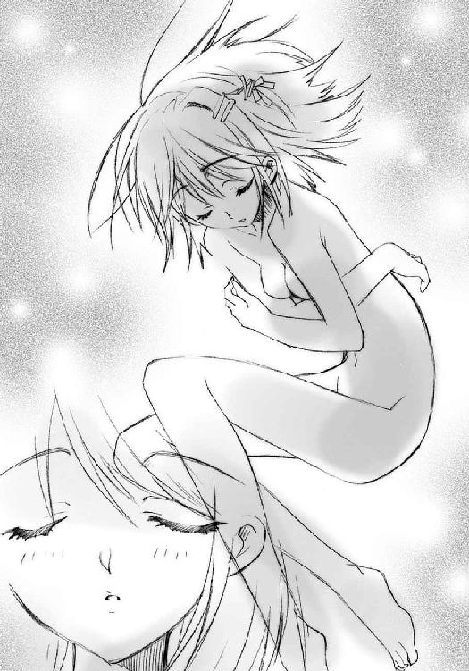
教えられなくても、やり方は分かった。
自分の街なのだから。
そんな中、感じた悲しい歪みに、この光景の端が重なる。
（あっ......）
自分を囲む地図が、変わった。
地理や構造ではなく、その在り様が、本来の方向へと。
雪崩を打つように、歪みがどんどん自分の思い描いた姿へと近付き戻ってゆく。
気付けば、体中に感じる故郷が、本来のイメージを持った新しいものになっていた。歪みを持った、こうではないという違和感の消えた、懐かしくて温かい、故郷の姿に。
それは、素晴らしく懐かしい、不思議な感じだった。
「上出来です、おじょうちゃん」
優しく響く、厳しい声があった。
「うむ、良いな。温かいイメージじゃ」
二人の素直な賞賛が、吉田には少し嬉しかった。
と、不意に周囲の出来上がった新しい御崎市の姿が、凍りついたように固まる。再び褐色の星々は炎を吹き上げ、炎のカプセルへと戻り、周囲の暗闇は晴れ、屋上の光景とカムシンらの姿が戻ってくる。
そして、炎がカムシンの差し出した左の掌に吸い込まれ、足が屋上に着いた。
風が、戻ってくる。
「ありがとう、おじょうちゃん。とても、助かりました」
「うむうむ、もらったイメージを今日中に自在式に織り成せば、明日にはこの街の歪みを調律し、矯正できるじゃろう。そうすれば、もう大丈夫」
不思議の感覚からさめた吉田は、この二人の平然とした様子を信じられない思いで見た。あんな深く大きな嘆きと愁いを持って、こうまで立っていられる。
分からない。考えられない。不可解だった。
「──どうして」
吉田は知らず、口からその疑問を溢れさせていた。
「ああ、なんですか、おじょうちゃん？」
返事をされて初めて、自分が声を出していたことに気付いた。
「えっ!? あ、あの──」
なんでもありません、
吉田はそう言いかけた。
いつもなら絶対にそう言って、自分の意志を表に出すことから逃げ、相手にそれを受け取られることを避け、嫌な答えをもらうことを拒否していた。
しかし、今の彼女は少し......本人にとっては大きく、違っていた。
彼らの起こした不思議な出来事が、自分にとって、もう二度とないものと思えた。
今、自分の眼前にあるもの──常識を根底から覆す不思議な存在、恐怖と後悔を経て思いもよらず接することとなった心──は、弱い自分を前に踏み出させてくれる、勇気を与えてくれる、まさに『きっかけ』なのではないか。
吉田一美は、誘惑に駆られていた。自分の弱さから踏み出すために強い他者の後押しを求めるという、全く無意味な行為への誘惑に。カムシンとベヘモット......彼ら、他に類のない大きな存在による『自分を変える近道』への誘惑は、あまりに強すぎた。
吉田は、その誘惑に勝てず、勝とうとも思わず、どころか、その誘惑に無自覚だった。
すがるような叫びが、口を突いて出た。
「どうしてそこまで......自分の前にあるものが『絶対にどうしようもないもの』だと確信までしているのに、立ち向かっていけるんですか。どうして──!?」
「......やあれ、やれ。また、同調してしまいましたか」
「ふうむ、まあ、しようがあるまい」
二人は、困ったように言った。カムシンの、縦に傷跡を走らせる唇が、少し苦い笑みを作る。
「どうも、いけませんね......ごくたまに、そっちに流れてしまうんですよ」
「本来の使い道とは逆じゃからのう」
吉田はなおも訊く。
答えを欲し求める。
「お願いです、教えてください」
なぜ彼らが、自分のように『どうしようもない』で止まらず、なおも進もうと思えるのか、吉田は知りたかった。
二人はしばらく黙って、少女の勢いの意味を図り、やがてそれが自分たちから漏れ出た感情に自分の悩みを投影して、そのあまりの違いに羨望しているのだと気付いた。
カムシンは、そんな少女の弱さを悲しく思い、しかしだからこそ強く訊き返す。
「抽象的で安直な高説ではなく、具体的な事態への対処策で良いのなら、答えましょう。いったいなにを、どのようにできなくて、悩んでいるのです？」
フレイムヘイズらしい、なんとも実際的な物言いだった。
「えっ──それは......あの......」
言われた吉田は途端に勢いを失って、俯いてしまった。
熱狂から覚まされ、改めて考えると、自分が具体的に抱いている問題の小ささが恥ずかしくなってきた。どんな顔で、人喰いに荒された世界を正すカムシンとベヘモットに、
「クラスメイトの坂井君に好きだと言えなくて困っているんです」
などと言えるというのか。もちろん自分の日常生活において、それは最大級の難事であることは間違いない。だが、それを妙に大仰な命題ぶってこの二人にぶつけるのは、いかにも場違いで、情けなかった。
そうして思──
（──あっ!?）
不意に気が付いた。
というより、思考がとある可能性に触れて、ぎょっとなった。
今の今まで、なぜそのことに気付かなかったのだろう。カムシンから家族が無事と聞かされて、無意識の内に大丈夫だと思い込んでいたのだろうか。普通に考えれば、あれだけいるのだ。確率として、有り得ないことではなかった。
（緒方さん、晴子ちゃん、笹元君、中村さん、谷川君）
考えたくなかった。
もし確かめて、取り返しのつかないことを知ってしまったら。
（池君、佐藤君、田中君）
なぜ考えてしまったのだろう。なぜ訊いてしまったのだろう。
さっきまでの熱さが消え、逆に全身の血液が冷水となったかのように、体が震えてきた。
（どうしよう）
「おじょうちゃん？」
カムシンが、少女の豹変を不審に思い、もう一度訊いた。
（ゆかりちゃん）
吉田の頭の中を、次々に知り合いが巡る。
そして、究極の破局に、思いが至る。
（まさか）
吉田は弾けるように訊き返した。
「どうしよう、カムシンさん!!」
「？」
「なんで、なんで今まで!? どうしよう!?」
「落ち着きなさい、おじょうちゃん」
カムシンは歩み寄って、取り乱す少女の前に、ガラス玉の飾り紐をかけた左手を、握手するように差し出した。
吉田は持っていた鞄を取り落とし、今度こそ本当にすがるように、カムシンの細く小さな、しかし硬く力に満ちた手を両手で握った。
「私、どう、どうしたら、私!!」
まだ可能性であるということにまで頭が回らず、吉田は顔色を蒼白にした。
「坂井君が、坂井君が!! どうしよう!!」
カムシンらは、その動揺へと至る経緯を正確に理解した。
「それが悩み、そして......ですか」
「ふう、む......なるほどのう」
吉田はパニックの中、握ったカムシンの手に額を付けた。顔を伏せつつ求めたものは、宥めの言葉であり、安心の保証であり、救う手立てだった。
しかしカムシンは、全くあっさりと言った。
「それは、どうしようもありません」
「──」
絶句する吉田に、ベヘモットがさらに言う。
「おじょうちゃんに身近な誰かがトーチだと知ったとしても、どうにもならん。絶対に治ることはないし、それが消えれば最初からいなかったことになる。つまり、おじょうちゃんの記憶からも消えるんじゃよ。どうにもできんし、どうにもならんよ」
「そんな」
くずおれてへたり込みそうになる吉田を、カムシンの小さな一本の腕が頑として支え、押し止めた。その切り傷を縦に走らす唇が、慰めではなく事実を告げる。
「しかし、そうでない可能性も、十分にあります。現に、ご家族は全員、無事だったでしょう？」
「でも」
ベヘモットは言わせない。
「おじょうちゃんにとっての、ベストの方法を教えよう。何事もなかったかのように、これまでと同じ生活を送るんじゃ。もしそうであっても、そうでなくても、絶対に気付きはせんのじゃから。そうして、我々のことを、帰って来た日常と時の中で埋もれさせるんじゃ」
「......でも」
坂井悠二が、消えるかもしれない、それを自分は忘れる、以前に気付かないかもしれない。それはあまりにひどい話だと思った。もちろん、そうでなければいいに決まっているが、確かめないでいるのも、同じくらいにひどいと思った。
「私、どうしたら......坂井君のことを......確かめて......でも、そんな、もし......」
「おじょうちゃん」
カムシンが口を開いた。
泣き崩れそうな顔を伏せる少女の頭上から、駄々っ子に言い聞かせるような、優しく怖い声が降ってくる。
「説教は嫌いなので、代わりにとてもひどい、昔話をしましょう」
「え......？」
カムシンは訥々と、語り始めた。
「昔々──」
吉田は彼の口調に真剣なものを感じて、静かに聞く。
「とある暑い国に、神童と呼ばれた一人の王子がいました。彼の夢は、勇ましい英雄になることでした。あるとき彼は、隣の国との戦争に、父である王様と出かけました。そのとき、戦争の裏で優れた人を喰い、人々の苦しみを長引かせて喜ぶ怪物に襲われました」
「王子は、かつて王様の妾に嫌われて、牢に閉じ込められたことがありました。そこで生死の境を彷徨ったときに、〝存在の力〟を感じられるようになっていました。だから怪物の力も、怪物が王様を狙って来たことも分かっていました。それでも、王子は怪物に立ち向かいました」
「ところが、その怪物は言ったのです。『可愛い王子、なにをするの。せっかく妾を喰って、おまえを救ってやったのに。せっかく王を喰って、おまえを英雄にしてやろうとしているのに。もう敵の王も将軍も喰ってしまったよ。あとはおまえが「前に進め」と号令をかければ、夢は叶うよ』......もちろん王子は、妾のことも全て、知っていました。それでも、王子は怪物に斬りかかりました」
「例え妾に唆されて自分を投獄したのだとしても、王子にとって王様は父だったからです。もちろん王子は、怪物に負けました。そうして、あとは喰われるだけとなったとき、王子は不思議な声を聞きます。『儂は、人喰いを許さぬ者。人としての全てを捨てて、儂の器となってくれないか。代わりに、巨大な力を、あげよう』......王子は、全てを捨てる、という言葉に不吉さを感じました。それでも、王子はその声の言うことを受け入れました」
「王子はとんでもない力を手に入れました。そして、そのとんでもない力を振るって、怪物を追い払いました。王子は、これで英雄になれたと思いました。王様を救い、父を救い、国を救い、怪物を追い払ったのですから。ところが、王子は王様に話しかけて愕然とします」
「王様は王子のことを、忘れていました。兵士たちも、誰一人として王子のことを覚えていませんでした。王子でなくなった彼は、自分の中から、あの不思議な声をかけられます。『おまえは人としての全てを捨てることに、同意したではないか。おまえが、そう望んだのではないか』......彼はうちひしがれました。それでも、彼は人を喰い続けるだろう怪物を追いました」
「逃げ回る怪物を追って、彼は長い間、広い世界を彷徨いました。怪物の仲間を探し出しては倒し、居場所を訊き、長い長い間、彷徨いました。その間に彼の父は死に、何代か後に国は滅び、その後にできた国も、その後もその後も、みんな滅んでいきました。そして、数百年の年を経て、ようやく彼は、怪物を見つけました。怪物は言いました。『ああ、なんて嬉しい出会いだろう、可愛い王子』......数百年ぶりに、彼は本来の自分を知る者に会えたのです。それでも、彼は戦いました」
「激しい戦いの末、彼は怪物を討ち果たしました。最期を迎えた怪物は言いました。『ああ、可愛い王子。妾を殺し自分の命を救った私に斬りかかり、私が用意した英雄になる夢を自分で壊し、自分の持っていた全てを捧げて、人だった頃の自分を知る最後の存在である私を消してしまうなんて。どうしていつも、そんな馬鹿なことをするの』......彼自身、そう思っていました。それでも、彼は答えました」
「......『私は、いつだって、良かれと思い、選んだのだ。今だって、良かれと思い、選んでいる』......と。怪物は、また言いました。『今度もきっと、後悔するわ』......と。彼自身、そう思っていました。それでも、彼はまた、答えたのです」
「......『それでも、良かれと思うことを、また選ぶのだ』......と」
カムシンは語り終え、言葉を結ぶ。
「そういう、昔話です」
吉田は、彼の左手に付けていた額を離し、見上げた。夕日と風の中、聳える王子は静かな口調で続ける。
「王子は、選び続けています。今も、ずっと。自分が、良かれと思っていることを。それが徒労と分かっていても、どれだけ馬鹿なことをしているのかと思っていても」
カムシンの言葉を、長い長い年月をともに経て、体のみならず心の在り様さえ重ね合わせるようになった〝紅世の王〟......〝不抜の尖嶺〟ベヘモットが継ぐ。
「さて、おじょうちゃんには、そこまでの覚悟はあるのかな？ 平穏に埋もれ流されてゆくことを拒み、自分から進んで良かれと思えることを選び、その結果を受け止めるだけの覚悟が」
「......あ」
と、左掌を開ける気配から、吉田は手を離した。促されてその前に立てば、カムシンは見下ろす程に小さい。しかし、その小さな姿には、力が、年月が、凝縮されていた。
その彼が、素っ気なく呆気なく、別れのあることを告げる。
「ああ、それに、選ぶとしても、時間はありませんよ？ 一度言ったと思いますが、我々は明日には調律を終え、この街を出て行きます。おじょうちゃんがどうするにせよ、その後、我々に会うことは二度とないでしょう。結局は、忘れてもらうことになるのです」
「うむ、これも言うたが、歪みさえ治してしまえば、人が一生を送る間くらいは、人喰いの怪物も現れんはずじゃ。儂らの同志は多く、今も人喰いを狩り続けておる。心配は要らん」
ベヘモットは、それがこの街にまだいることを感じ、しかし余計な関わりを持たせないためそれを隠し、そして気休めとしての言葉を贈った。
今さらながら急に思えてきた話に、吉田は焦った。彼女は、自分にとって全てが、あまりに冷たいように思えた。
「明日？ も、もう少し長く、留まることはできないんですか？」
吉田はカムシン自身ではなく、自分に答えを与えてくれる者を奪われる恐れから言った。
「ああ、我々は、あまり一つ所に長居はできないのです」
カムシンは、そうしてすがられているのを感じつつ、無情に言う。関わり合いになるのは、どちらにとってもマイナスにしかならないからだった。
それに、実は最近、奇矯さで知られる古い〝王〟が、調律に絡んでおかしなマネをしているとの噂を外界宿で聞いていた。作業なり滞在なりを長引かせるのは、あらゆる意味で危険なのだった。もちろん、関わることも対処することも、認識さえできないただの人間である吉田には、そのことは言わない。
（認識......ああ、そういえば）
ふと彼は、この気弱な少女に貸していたものがあることから、一つの提案を思いついた。
「ああ、では、おじょうちゃん、こうしましょう」
「は、はい？」
構える吉田に、カムシンは常のように、優しく、怖く、選択肢を示した。
「私の貸した片眼鏡『ジェタトゥーラ』を、もう一日預けましょう。それを使うかどうかを、おじょうちゃんが、自分で選ぶのです。無事だという十分な可能性に賭け、それを使わず、今までと同じように暮らしてゆくか......それとも、リスクしかない真実を欲してそれを使い、安心を得るか......それとも、結局は忘れてしまう、その場だけの懊悩を得るか」
「うむ、我々は助言したぞ？ 使わぬ方が良い、と。だからあとは、おじょうちゃんが『良かれ』と思う方を、選ぶんじゃ」
吉田は俯いて、ポケットの中にある物と格闘した。
今、返してしまってもよかった。
たしかに二人の言うように、トーチとなった人間が〝存在の力〟をなくして死ぬ（と吉田はどうしても、そう思ってしまう）ことで周囲の人の記憶もなくなるというのなら、トーチかどうかを確かめ、その死ぬまでの間悩み続ける必要などどこにもない。むしろ、知らないままでいた方が確実に幸せに違いなかった。二人の言うことは正しいのである。
しかし、必要かどうか、正しいかどうかという理屈は、今の彼女には問題ではなかった。
（もし、知らない内に坂井君が消えていたら？）
それを考えると居ても立ってもいられなくなる、この気持ちが問題なのだった。
（でも、お父さんも、お母さんも、健も、大丈夫だった......ただの取り越し苦労かもしれないんだ......でも、そうなら別に確かめなくても......）
揺れる心は、容易に答えを出そうとはしなかった。
ポケットの中から、手が出ない。
ただ強く、願いを込めて握り締めている。
二人は、そんな吉田が答える前に決めた。
「では明日、調律を終えてからすぐ......そうですね、今日と同じ時刻、同じ場所に」
「ふむ、多少、お祭りで街は騒がしいようじゃが、まあ作業に影響はないじゃろう」
（お祭、り......？）
その言葉を聞いた途端、吉田の中に強い想いが溢れた。
明日の夜は、ミサゴ祭り。河川敷の花火大会。
確かめるかどうか、それとは別の強い想いが、このきっかけを元に溢れ出た。
（......坂井君との、『良かれ』と思える選択......そうだ、それこそ、私が本当に......）
遂に得た『きっかけ』の元、震える唇が、ゆっくりと動く。
「......少し」
言えた。
恐れを押す、それ以上の力によって、声が、出た。
「遅れても、いいですか？」
カムシンは、彼女の唇の震えが、未だ先の悩みと同じと思い、頷く。
「ああ、構いませんよ......都合の良い時間と場所は、ありますか？」
吉田は前に手を揃え、頭を深々と下げた。
「か、勝手を言って、すみません」
そして顔を上げ、
目の前の強い二人に、自分の決意を込めて約束した。
自分が、どんな世界を望んでいるのかを決め、そして選ぶ、と。
「でも、明日の夜八時、西側堤防の大石段で待っていて欲しいんです」
ここから一日後の話
どことも知れない空間の、床に壁に天井に、馬鹿のように白けた緑色の紋章が多数、煌々と輝いていた。
その光の中により白く、棒のように細い白衣の〝教授〟が立っている。
「とぉころでドォーミノォー、今回の私たちの実験の要諦が何であるか、分かぁーっていますねえー？」
隣に付き添う、二メートルを越すガスタンクのようなまん丸の〝燐子〟ドミノは、いい加減な細工の腕を困ったように上下に動かした。
「えー、あー、それは無論、分かりませ、いえ分かっていますので不勉強なわけでは、でも分かっていないのでご教示を、いえでもどっちかというとつまりそほひはははは」
教授の、にゅうっと伸びたマジックハンドが、ドミノの頬に当たる部分である発条をつねりあげた。
「なっぁあーに、あやふやなことを言っているんです？ 知ぃーっているのか、それとも知ぃーらないのか、はっきり言ったらどぉーうなんです？」
「だって教授は私めが知ってます、って言ったら『ナンデシーッテルンデスカ』ってつねりますし、知りません、って言ったら『ナンデシーラナインデス』ってつねるじゃありませんははひはいひはい」
もう一度つねる。
「なぁーまいきな口はもおーっと嫌いですよ？ 正直にぃ言えば良いーんです」
「へへと、じゃあ、知ってますははふほふほひりはへん」
さらにつねっていた。
「んんーん、じゃあ、無ぅー知なおまえに教えてあげましょう」
「はあ、どうぞ宜しくお願いしますんでございます」
「我々〝紅ぅー世の徒〟にとって、重要かぁつ必要なものの第一は、そぉーう、言うまぁーでもなく〝存在の力〟!! そぉれをこの世の事象に干渉して変んー換、顕んー現する!! 我らがここにあぁーるのと同様の真理にして原理！ そぉしてさらに、それを効率よく発現させるための、いわゆるブ──────スターであるのが自在式！ これがあるとないとでは、消耗の度合いもダンチガイ!!」
「はあーい、そのとおりでございます。つまり今回の実験の要諦は自在式ということでふはひはひひはひほんほひひはひ!!」
より高くつねり上げつつ、教授は自分が言うはずだった部分を言いなおす。
「つまぁーり、今回の実験の要諦は自在式!! その作動原理はー、何なのか!? 誰もが自然〜にできることから、まぁた一旦、その発現の在り様に出会ぁーえば、個ぉ人の特性でないものは真似できる、その利便性ゆえーに無視されてきた原理！」
「その原理を探求し研究した結果、生み出された大発明が、今回の罠のタネとして使われているわけですね、教授」
大発明、の部分で耳をぴくぴくと動かして、しかし冷静を装って、教授は深く頷く。
「その通─りです。自在式は、いぃーかにして効力を発揮するか!? 〝存在の力〟と不可分的存在であーると、忌ぃーむべき思考硬直の餌ぇ食となっていた、心ときめく実験課題『自ぃ在式』......そぉの分化と効力発揮の実働試験こそが──まぁさ、に、要諦!! この世の歪み現象の探求と併せて、今回の実験は非っ常─に、意義深いものとなるでしょう」
「正直、面白そうですね。なにが起こるかワクワクしますよ」
無邪気な〝燐子〟の声に、教授も肩をカクカク震わせて笑い返す。
「んーんんんんん、ドォーミノォー、おーぉ前も分かぁーってきたでは在りませんか。そおーう、真理の探求とは、なにものにも勝る、ェエーキサイティングでェエークセレントなものなんですよ」
「はあーい、全くもってそのとおりでございます、教授。でも、これだけの用意をして、結局なにも起こらなかったら、それはそれで面白いですねっはひはひひはひひはひ」
騒ぐ二人の前で、自在法が馬鹿のように明るく燃えている。
４ 絶望
平井ゆかりことシャナは、フレイムヘイズである。
それも、〝紅世〟真正の炎の魔神〝天壌の劫火〟アラストールを身の内に宿し、炎を顕現させることで戦うフレイムヘイズである。
である、というのに、
このあり様はなんなのか。
シャナは、黒焦げとなった物体をへばりつかせたフライパンを眺め、眉をしかめていた。
昨日、危うく高校の制服を燃やしかけたので、今日はＴシャツとエプロンを借りている。その新品の光沢も眩しいエプロンには、しっかりと可愛い字体で『SHANAchan』と縫い付けてある。昨日の内に作ったものらしい。
その新装備を文字通り胸に、改めて張り切って勇ましく──もう少し力抜いて、といきなり言われた──料理という作業に取り掛かったわけだが。
（なんでだろう）
シャナのムスッとして見つめる先、フライパンにへばりつく黒焦げの物体は、数分前までは肉や野菜だった。だったはずなのだが、数分の調理......といっても掻き混ぜるだけだが、その結果、すでに本来の機能も存在意義も失われ、食物という存在の定義的には廃棄物といって差し支えのない物体『炭』へと変わり果ててしまっていた。
「う〜ん、単純な炒め物でこれじゃあ、先行きが不安ねえ」
監督官として付き添っている坂井千草が、今後の展望について端的に言い表した。
シャナとしては、彼女に認められないというのは、かなり悲しい。
「大丈夫大丈夫、これから頑張りましょう」
しょんぼりするその肩を、千草は優しく叩いて励ました。
「私だってシャナちゃんくらいの頃には──」
なぜか千草は言葉を切った。
「とにかく、頑張りましょう。一度や二度の失敗でめげるなんて、シャナちゃんらしくないわよ？ 悠ちゃんなんか、毎朝棒で叩かれて、それでも頑張ってたじゃない。人間、誰も長短はあるもので、それは悪いことでもなんでもないんだから」
「うん......」
「分かったら、はい」
と千草は金束子をシャナに手渡した。昨日と同じで、シャナがフライパンを洗う間に、彼女が朝食を用意する。悠二が帰る頃には何事もなく隠蔽工作は完了するはずだった。
「ああ、そうだシャナちゃん」
ガリガリと自分の戦果というか戦禍をこそぎ落とすシャナに、千草は声をかけた。彼女は話をしながらの片手間でも、予備のフライパン操作を誤ることはない。
その熟練の様をうらやましげに見つつ、シャナは短く返事をする。
「なに？」
「今日ね、ミサゴ祭りがあるでしょ？」
「祭り......ああ」
そういえば、と思い出す。街中にそういう字面と変な鳥の飾りが溢れかえっていた。クラスでも散々誰が誰と行くか、話題に上がっていた。何度か誘われたが、とりあえず断っておいた。祭りは何度か見たりうろついたりしたこともあるが、周囲の熱狂する様子を息苦しく感じるので、あまり好きではなかった。
「それが、なに？」
素っ気無い答えにも千草は構わず、にこやかに言う。
「浴衣、用意してあげるから、悠ちゃんと行ってきたら？」
「えっ？」
悠二と一緒に歩く。数日前にパン屋巡りをしたときの、メロンパンをたくさん食べたという事実以上の嬉しさを思い出して、フライパンをこそぐ手が止まる。
「なにを、すればいいの？」
千草は無知を笑わないので、少し恥ずかしく思いつつも素直に訊くことができる。
「なんでもいいの。一緒にいて嬉しい人となら、歩いてるだけでも楽しいわよ」
「......うん」
それは分かった。
千草は言いながら作っていた、形崩れのない目玉焼きを手際良く皿に移しながら言う。
「よーし、それじゃ手早く片付けて、寸法測っちゃいましょう。早くしないと、悠ちゃん帰ってきちゃうから」
「悠二には内緒にするの？」
千草は、指を一本、唇に当てた。それは秘密のサインだという。
「うふふ、悠ちゃんを驚かせてあげるのよ」
「驚かせる？」
「今日、学校から帰ったら、ファッションショーしちゃうの。綺麗な浴衣を着ておめかししたシャナちゃんを見たら、きっと悠ちゃん、赤くなってドギマギするわよ」
流儀を見せる（？）という言葉の意味は微妙に分からなかったが、なにやら楽しそうな企みであることは、千草の口調からはっきりと分かった。なにより、その結果がいい。
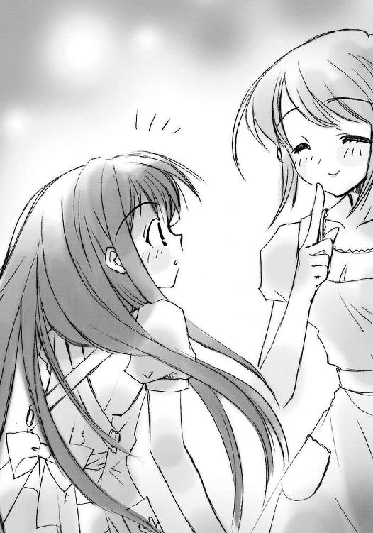
（悠二に、綺麗なのを見せる）
悠二が自分の格好を見て（自分自身が綺麗云々は考慮の内にない）『すごく綺麗だね』と誉めてくれる場面は、想像してみるとなかなか悪くない気分だった。
顔が自然とほころんでくる。
それが分かる。
（そうだ、急ごう）
千草の計画を破綻させないために、シャナはフライパンを磨く手に力を入れた。
それから十分余り後。
昨日に引き続いてアラストールと一緒に帰ってきた悠二を出迎えたのは、昨日以上にムスッとした顔で食卓についたシャナの姿だった。
悠二は、その顔を不思議そうに見つめた。彼女は、なぜか目の前に揃えられた自分の赤い箸を凝視している。まるで、こっちと目を合わせたくないように。
「なに、なんか、あったの......？」
「なにが」
シャナの、いつものような、素っ気無い答え。
しかし悠二は、なんとなく感じた。これは、溢れそうなものを隠して、無理矢理に顔を硬くしている顔だと。まさか怒っているのか、と思い、鼻にかかった疑問とともに訊いてみる。
「いや、なんか焦げ臭いし」
「そんなことないでしょ、それより〝コキュートス〟」
悠二は、シャナが簡単に答えることで、会話を終わらせようとしていると感じた。
「う、うん」
首から外す〝コキュートス〟から、アラストールが、なぜか小声で訊く。
「どういうことだ、坂井悠二」
「さあ......？」
答えつつ、それを受け取るシャナの顔を観察する。アラストールには分からないようだが、少女の頬がいつもより僅かに膨らんでいる。これは感情が昂ぶっている証拠だった。
「なに見てんのよ？」
「い、いや、なんでも」
じろりと睨んで言うシャナは、素っ気無い風を装っている、と悠二には分かった。
（なんなんだ？）
しかし、何を隠しているのかまでは、さすがに分からない。居間に漂う焦げ臭さは、とりあえず食卓に影響を及ぼしているわけではなさそうである。実際、よく観察しても、目の前に並んでいるのは全て千草の料理だった。
（ご飯、でもないとすると......いったいなんなんだ？）
首を捻って唸る悠二の前で、シャナはずっとそんな顔をしていた。
昨日までが打ち合わせだったとすると、今日は本決まりだった。
無論、今日の夕方から始まる、御崎市ミサゴ祭りにおける活動スケジュール調整が、である。
御崎高校の生徒たちの誰も彼もが、教室に入るなり、あるいはもっと前、下駄箱で靴を換えながら、さらに前、登校中に肩を叩き合って、
「今日どうする」
「今日忘れないでよ」
「今日のことだけどさ」
と会話を切り出して、各々確認に入っていた。学校全体が、今日という半日授業の終わるのを、始業チャイムの時点からウズウズしながら待っていた。
一年二組も、その例外ではない。朝一の会話の話題も、授業の合間に漏れる雑談も、ほぼ全てが今日の祭りについてのものである。誰も彼もが、まるで発射台に据えられたロケットのような空気を辺りに撒き散らしていた。
この中で、平井ゆかりグループと目される六名は、奇妙な形で浮いていた。彼女らは、クラスの他の誰とも、一緒に行く約束をしていなかったのである。
平井ゆかりことシャナは数度、女子生徒のグループに誘われたものの、
「ありがと、でもいい」
と非常に簡潔に断っていた。
彼女は今日、登校するや、険悪この上ない表情で席に鎮座して、そのままピクリとも動かない。授業が始まる度に教科書を機械的に取り出しては、それに目を落とすでもなくずっと宙を眺めている。
クラスメイトの誰もが、彼女にこういう変化があるときは大抵ろくなことにならない、と経験から分かっている。祭りとは関係ないだろうが、とりあえず構わないでおこう、という方針の元、彼女は放置されている。
坂井悠二は、そんな彼女と一緒にいるだろうことが、ほとんどクラスの共通認識となっていたので、話題の出た当初から陰湿さのない羨みを込めて、
「その日は平井ちゃんとどこで過ごすんだよ〜」
と首を揺すられたり肩を叩かれたりしただけだった。無論、悠二としてはシャナと過ごす予定がある。家で晩飯、という羨まれるのか拍子抜けされるのか微妙な予定ではあったが。
なにより今、彼は自分の今後について悩んでいる最中である。正直、行きたいとは思っていたが、シャナはどうせ家にいるだろうし云々、とりあえず本年の参加は自粛、という形だった。去年一昨年と一緒に遊びに行った池にも、今年は誘われていないので、丁度良いといえなくもなかった。正直、寂しくはあったが。それにしても、今日のシャナの不可解な様子の意味は、彼にも分からない。彼女を横目で見ながら、首を捻ってばかりいた。
吉田一美は、自分から積極的にこういう催しには参加しない、おとなしい性格であると、よく知られている。
それを承知で誘いをかける男子生徒もかなりいたが、結局全員が断念に追い込まれている。彼女から弱弱しい微笑みとともに丁寧な断りを受けると、それ以上の無理強いが、まるで悪いことのように思われてしまうのだった。
それに彼女の場合、本命が他にいるのが分かりきっている。誰だって楽しいお祭りで引き立て役を演じるのは御免だった。クラスメイトは皆、その本命・坂井悠二とのことで今日なにかあるのでは、と勘繰ってもいる。それに、野次馬として見物するなら、向こうで会った方が面白そうではあった。本人もなにか期するところがあるのか、朝から真剣な表情をしていた。
佐藤啓作と田中栄太は、実はこういうとき音頭を取って残りの面子を誘うはずなのだが、この件に関しては、なぜか彼らの行動は鈍い、というより全く活動をしていなかった。
数日前、緒方真竹が田中に、ついでの冗談のテキトーな誘いに偽装して持ちかけたところ、
「ああ、今年はいろいろあるんだ。ゴメンな」
の一言で見事に玉砕した。
「なーにマジに取ってんのよ、バァカ」
そう軽くかわした彼女は、立ち直るのにしばらくかかったのだが、まあこれは余談。
ところで、この誘い誘われの人間模様の中、浮いている六人の中でもとりわけ妙なポジションに位置する少年がいた。
みんなのヒーロー・メガネマンこと池速人である。
教師までもが雑談にミサゴ祭りを採り上げた一時間目の後、冷めるどころか熱くなる空気から逃れるように、池速人は一年二組の教室から出た。トイレに行くためだったのだが、どうも今の楽しげな雰囲気に居たたまれなくなったためでもある。
彼は、誰ともミサゴ祭りに行く約束をしていない。田中の勧誘に失敗した（と彼には分かっていた）緒方から、ほとんど腹いせのように、
「ねえ、メガネマーン、私たちと一緒に行かない〜？」
と誘われたのが唯一の例で、それもこっちは本当に冗談だと分かっていたから、やんわりと断っていた。
他のクラスメイトからの誘いがなかった理由は単純である。誰もが、彼は平井ゆかりグループと一緒に行動するのだろう、と思っていたのである。六名の行動を最終的にまとめているのは彼だったし、なんだかんだで一団の中心である悠二の親友（当の本人たちは一度もその言葉を使ったことはないが）だったりするのだから、その想像はごく自然なものと言えた。
ところが実際には、彼らは互いに誰も、誘い誘われしていない。
池自身も、去年一昨年誘っていた悠二に対して、平井ゆかりや吉田との絡みから、今年はなんとなくそれを避けた。少し前......吉田の怒りを受ける前なら、積極的に彼女のために動いていただろうが、今の彼には、そうするだけの気力がなかった。
元来が、騒ぐ他人を抑えたり、その騒ぐやり方をより楽しくしてやるというフォロアーの質で、一人で行くことには大して興をそそられていなかったこともある。年に一度の祭りを無為に過ごす気にさえなっていた。
（まあ、のんびり家のベランダから花火でも見物するさ）
そう割り切って歩く彼に、トイレ脇の階段の角から、佐藤が手招きをした。
「おーい、池」
「ん？」
「ちょっと、こっち......」
周りを無駄に明るくする彼らしくない、隠れるような様子である。
怪訝に思って池が行くと、田中までいる。しかも二人して、妙に深刻な顔である。彼らはさらに手招きして一階の階段奥、倉庫入り口になっていて人の来ない場所に池を連れ込む。
「なに、どうしたんだ？」
訊いても佐藤は口籠り、田中は唸る。お互い時々目配せまでするが、容易に口を開かない。
池は少し考える。
（ミサゴ祭りのこと......じゃなさそうだな......なにか話しにくいことか？）
じゃあ、と前置きして、彼はいつものように効果的な助け舟を出す。
「なんかのマンガの話とか？」
二人はそれにハッとなって、また目配せする。
佐藤がようやく切り出した。
「あー、まあ、マンガの話なんだけどさ」
さり気ない様子を装っているが、なんともわざとらしい。そもそもこの二人は、腹芸が苦手なのである。
ところが、その出だしは池の予想を超えて、思い切りマンガのようなものだった。
「化け物と戦ってるすんごい美人が居てさ」
「はあ？」
ぽかんとなった池に、田中がゴホン、と咳払いをして、
「だ、だからマンガの話だって」
「ん、いやまあ、そうなんだろうけど」
（まさか本当にマンガの相談だったのか？）
と思うには、二人の表情は真剣そのものである。
奇妙に思いつつも、結局池は最後まで話を聞いた。
その相談とはつまり『凄い力を持っている女性の旅に、普通程度の力しかない少年が付いてゆこうとするには、どうすればいいのか』、という突拍子もないものだった。
はっきり言って、答えようもない。
「そのストーリーって、えらく不公平だなあ。もっと主人公にパワーアップアイテムとかばら撒けばいいのに」
感想を漏らした池に、佐藤が少しムッとなる。
「真面目に考えてくれよ」
「......マンガの話だろ？」
「い、いやま、そうだけど」
どもる佐藤の脇腹を、バカヤロ、と田中が肘でゴインと小突く。
池は、とりあえず真面目に考えてみることにした。彼ららしくない、高度な例えである可能性も、あるにはあったからである。
「う〜ん、その美女？ の力が人間以上でどうしようもないっていうのなら、結局は頭で助けるしかないだろ」
「......しかし、その主人公は勉強が苦手だしなあ」
やはり佐藤は大真面目である。
池も真面目に答えるべきだと思い、続ける。
「頭ってのは、別に勉強のことに限らないよ。そうだな......田中、お前が球技するときなんかにやってることと同じだよ。アウトにするには、ポイントを奪うには、相手と自分をどう動かせばいいか......それを普段から考えるようにすればいい」
「ふうむ」
分かりやすい例えを、田中は顎に手を当てて吟味する。
「状況を的確に判断して、相手の特性から行動を予測したり誘導したりする。分かる？」
池の、少し難解な用語を使った解説には、佐藤が答えた。
「周りがなにやってんのかを見て、うまくこっちの罠に誘い込めってことだろ」
その意外に的確な認識に、池は感心した。彼らも雑学本の乱読で、とりあえず語彙くらいは豊富になっていたのである。
「まあ、僕もケンカ自体のことは良く分からないけど、助太刀って行為には、実際にその場で力を振るう以外にも、たくさん手というか、道はあると思うよ」
そうして、唸って考える二人に、池は相談の意図を探るつもりで訊いてみた。
「ところで、それ、なんてマンガ？」
予想通りというべきか、二人は口を割らなかった。
池は二時間目の休み時間、今度は坂井悠二に相談を受けた。
知らず同じ場所に連れて来られ、なにを言うかと思えば、
「映画の話なんだけどさ」
「......」
悠二の相談事も、ほとんど前の二人と同じだった。つまり、『凄い力を持っている女性に、普通程度の力しかない少年が付いてゆこうとするには、どうすればいいのか』である。ただし彼の場合は、加えて『家族を置いて出て行かなければならない』だの『主人公は狙われる宝を体に持っていて、それを守らねばならない』だのという、妙な設定までくっついていた。
「誰にも完璧に納得がいくストーリー展開なんてないんだし、やっぱり主人公は旅立つべきなんじゃないのか？ その女性を助けて怪物の世界を駆け抜ける......格好良いじゃないか」
「そんな、他人事みたいに言うけどさ」
「だから映画なんだろ？」
「......まあ、そうなんだけど」
佐藤田中といい、この坂井悠二といい、妙な相談ばかりするもんだ、と少し呆れながらも律儀に答えてやるのが、このメガネマンのヒーローたる所以だった。
「こういう言い方はドライかもしれないけど、結局は被害が一番少ない方法を取るべきだろ。主人公が居座ったせいで住人や知り合いが巻き込まれたら、その主人公は一生後悔するぞ」
「そうか、そうだよな、やっぱり......」
もちろん、坂井悠二からも映画の名前は訊き出せなかった。
三時間目が終わった、半日授業最後の休み時間、池は次の授業のため、職員室からプリントの束を運んでいた。その彼が廊下の角を曲がったまん前に、
「！」
「あ......」
彼を見て小さく声を上げる、吉田一美が立っていた。
（もしかして）
最初の休み時間の佐藤と田中、次の休み時間の坂井悠二、そして今......そういう偶然というのも、世の中にはあるのではないだろうか......!?
そう期待した彼の前で、しかし吉田は目を逸らした。
「ご、ごめんなさい」
やはり小さな声で、ぶつかりそうになったことを詫びると、心なしか早足で彼女は歩いていった。
「......」
不意に、ヘナヘナとその場に座り込むか、プリントの束を思い切り床に叩き付けるか、両極端な衝動が、彼を引き裂かんばかりの強さで襲った。
（そうだよな、やっぱ......まあ、あるわけ──くそっ！）
結局、彼は上履きで床を蹴り付けるだけにした。
（好きとか、そうでないとか......そんな曖昧で余計な、この気分がなければ、他の連中と同じように彼女を助けられるのに）
と忌々しく思う。
彼女を助けられる、という言い草自体が、すでに彼女への好意を前提とした考え方であることに、頭脳明晰であるはずの池速人は気付いていなかった。
（池君に相談を、そうだ、なにかに例えてすれば、よかったのかも──ううん！）
吉田一美は、また彼に頼ろうとした自分の弱さに、必死に活を入れた。今日何度目かの、友人がトーチかどうか確かめるという考えも、ついでに首を振って打ち消す。
カムシンから預かった異世界を覗き見る片眼鏡『ジェタトゥーラ』は、今日はまだ、制服のポケットから一度も出していなかった。昨日の夕方から一晩中、そして今朝から今まで、ずっと考えて、悩んで、苦しんで、やはり使おうとは思えなかった。
自分の平穏を、これから生きていく世界の平穏を、自ら進んで放棄するような無謀さは......仲良しの友人という、最も大きな『日常の全て』を破壊するだけの勇気は......そこまでの真実の追求を『良かれ』と思えるほどの強さは......やはり自分にはなかった。
朝、坂井悠二が教室に入ってきたのを見た瞬間、その思いは確信に変わった。
彼に『ジェタトゥーラ』を向ける。
それは最悪、彼の全てを破壊する行為だった。
そんなことが、自分にできるはずがなかった。
そう、カムシンに『ジェタトゥーラ』を預かった一日の猶予は、自分にはやはりこの世界を壊せないと確認して、この中で生きていくのを決意し直すためのものだったのだ。
（やっぱり、カムシンさんたちは正しい）
そして、その世界の中で。
自分が『良かれ』と思えることを、選ぶ。
カムシンたちに約束した。
（──「明日の夜八時、西側堤防の大石段で待っていて欲しいんです」──）
今の自分にとって『良かれ』と思えること。
それは決まっていた。
今日のミサゴ祭りで、絶対に。
坂井悠二と平井ゆかりことシャナは、一旦学校で分かれ、後で合流して坂井家に帰る。
坂井家の半日居候という彼女の立場は、世間的には非常に誤解されやすいといえる。
「余計な噂は立たない方が良いだろ？」
「余計なってなに？」
「とにかく、そうしよう、お願いだから」
彼女が登校し始めた頃にした、そんな会話の結果として、それはずっと、お互いの習慣として果たされている。
今日という日も、悠二はシャナと下駄箱の前で別れた。彼女の本来の居宅である平井家の方へと適当に向かい、人気がなくなるとすぐ、屋根の上を跳んで悠二の元へと戻る。彼女にとっては別段苦というわけでもない、ただの習慣だった。
しかし、今日の彼女の様子は、どうにも奇妙である。
「ずっとムスッとしてるけど......いったいどうしたのさ」
「うるさいうるさいうるさい」
乱暴に言う口の端も、微妙にムズムズした感じである。
悠二は首を傾げつつ、じゃあ（後で）ね、と軽く言って別れた。
残されたシャナの頭の中では、今日の計画が何万回目かのリピートをしていた。
（......一緒に帰ったら、悠二を居間に閉じ込めて、千草に服を着せてもらって、悠二にその格好を見せて、悠二はそれを見てあたふたして......）
「ふふ」
と悠二が居なくなったことで油断したのか、つい笑みがこぼれた。
胸の〝コキュートス〟からアラストールの怪訝そうな気配を感じたが、この人の多い場所では、さすがの彼も声を出せない。あとで訊かれても誤魔化してしまうつもりだった。
「さあ、帰ろう、早く！」
声に出して、うきうきとした足取りで、シャナは校門へと走っていった。
吉田一美は走る。
坂井悠二の後を追って、走る。
彼の通学路は、以前、池速人にもらった地図に書いてあった。自分の遅い足で彼に追いつくのは結構かかるが、言いたいことをスムーズに口から出すには、大通りから住宅地の中に入ったあと、人気がなくなってからの方が良い......などと思ってはいるものの、実際には、自分がどの程度の速さで走っているのかなど分からない。周りの視線も目に入らない。
ただ走る。
走って、追いつく、そうして、選ぶのだ。
自分にとって、これ以上ない『良かれ』と思えることを。
まだ大通りなのに、もう息が切れてきた。しかし、走るのは止めない。恐怖にも似た切迫感が、足を衝き動かす。彼を見つけなければ消えてしまう、そんなわけの分からない不吉な想像まで頭の中を過ぎった。いつの間にか、踏んでいるのは住宅地のレンガ歩道になっていた。
もう下校する生徒たちはそれなりに散って、数人ごとのグループが散らばっている程度。
その中に、
（いた！）
遠くから見ると意外にスマートな体型。
力を抜いて、のんびり歩いている少年。
坂井悠二。
その背中が、どんどん近付く。
追い抜かれた学生たちの視線を、今は感じる。
（他に人が居なければ、もっと良かったのに）
と、またも弱気が顔を出す。
（でも、言うんだ）
と、強く強く持ち直す。
やがて、自分の走る気配に坂井悠二が気付いた。
彼が振り向く。
止まりたい、怖い、逃げたい、隠れたい、誤魔化したい、断られたら、どんどん出てくる全てを押さえ込んで、自分の気持ちを必死に前へと向ける。
坂井悠二は驚いた顔でこっちを見ていた。
あと、三メートル。
たった、三メートル。
「ど、どうしたの、吉田さん!?」
声が簡単に届く。
自分の声でも、簡単に。
「っは──っは──」
「なに、どうしたんだい、大丈夫!?」
走り寄ろうとする坂井悠二へと、焼けて乾いた肺から、残った全ての息を、想いに、声に、『良かれ』と思えることに変えて、届ける。
「さ──」
息が切れる。
情けない。
「吉田さん？」
彼に向けて、もう一度。
息を吸って、もう一度、今度こそ。
「坂井君、今日のミサゴ祭り、一緒に行きませんか!!」
本人が思っている、半分の大きさもなかったその声は、
しかし確かに、坂井悠二に届いていた。
シャナが、周囲に人気や視線がないのを確認して、屋根の上から跳んだ。
いつもよりも大きく跳躍して、白い夏服を風切る翼のようにはためかす。スカートはさすがに押さえて、それでも軽くきれいに、悠二の横に着地する。全く無意味に、誉めて欲しいな、と思って悠二の顔を見上げた。
「......悠二？」
その顔が、とんでもない熱に浮かされているように、真っ赤になっていた。
「ああ、シャナ」
「......」
なんだか、嫌な気分と不吉な予感がした。ふと、感じた。
（私が、させるはずだった顔だ）
なんだか、とても嫌な気分と不吉な予感がした。声に出して、問い質すように訊いた。
「どうしたの」
しかし、悠二の反応は鈍い。ゆっくりとこっちに顔を向けた。
「えっ、あ、ああ......」
「どうしたのって、訊いてるの」
無性に、その服を掴んで揺さぶりたくなった。
「あのさ、今日のミサゴ祭り──」
「!!」
ドキッ、と。
本当に衝撃が胸を叩き、痛くなった。
悠二の言葉に、自分の企みを気付かれたのか、と根拠もなく嬉しい想像をする。
しかし、なぜか嫌な気分と不吉な予感も膨れ上がっていた。
同じくらいに、いや、もっと大きく。
「シャナは、こういうのに興味ないって言ってたよね？」
「えっ────────」
ぞっとするような悪寒が走った。『僕と行こうよ』......彼が言おうとしているのは、それとは違う、そんな認めたくない確信があった。
「去年は池と誘い合って出かけてたんだけど、今年はシャナがいただろ。こういう、意味のないことは嫌いみたいだったから......今年は、誰とも行くって約束しなかったんだ」
悪寒が体中に染み透る。
胸が締め付けられるように痛い。
（......いや......）
彼の言おうとしていることが、分かった。
「だから今日は、家でいつもどおりにしてようかな、って思ってたんだけど、ついさっき、誘われてさ......その、吉田さんに」
「!!」
ずっと前に感じた異様なものが、もっと大きな波となって押し寄せてきた。
（......いや......）
耳を塞ぎたい、そうして今あること、それ自体を消し去ってしまいたい、そう思わせる、自分以外の少女がもたらした熱で呆然となった声が、続ける。
「年に一度のことだし、二、三時間のことだから夜の鍛練にも十分間に合うし......」
（......いや、絶対、いや......）
その異様なものが、咽喉を圧迫する。
悲しさが、声を圧迫している。
悔しさでも、怒りでもない、悲しさが。
（だめ！ 絶対、だめ!!）
今すぐ断ってきて、代わりに私と行って、綺麗な服だって用意してあるの、千草がファッションショーっていうのをしてくれるって、
でも、それを口に出せない。
言わなかったのは私で、言ってくれるはずだったのは千草で、でも先に言ったのは吉田一美で、それを受けたのは悠二で、
（やだ、絶対に、やだ!!）
叫びたいのに、声が出ない。
悠二が、ミサゴ祭りに行く。
悠二が、自分じゃなく吉田一美と一緒に行く。自分じゃなくて、吉田一美と。それを知っただけで全て、なにもかもが止まってしまった。
「か──」
代わりに出た、別の言葉を吐きかけて、唇が強張っているのに気付く。
その固まった小さな唇を無理矢理に動かして、呟くように、
「勝手に、いけばいい」
それだけをようやく搾り出す。
「シャナ!?」
驚く悠二の声を背中に聞いて、シャナは逃げ出した。
周りに人がいるかどうか、それさえ確認せず、全速力で。
絶対に追いつかれないように、絶対にこの顔を見られないように、全速力で、逃げた。
フレイムヘイズ『炎髪灼眼の討ち手』が、逃げていた。
泣き崩れる寸前の顔で。
シャナは、胸を突き刺す、傷の見えない痛みにうめきながら走る。
その痛みがあまりにも大きすぎて、なにも考えられなかった。戦いで負う傷や衝撃とは違う。それらはむしろ、頭を冴え渡らせ、力を湧きあがらせる。しかし、この違う痛みには、全くなす術がなかった。
だから、ただ衝動のままに走る。
痛みを風で振り落とそうとするかのように。
数十秒だったのか、数分だったのか、流れ過ぎる景色からは全く分からなかった。
その胸にあるアラストールは、自分が口を出すべきでないこと、彼女も話のできる状態でないことなどを理由に黙っていた。
だから、その彼が口を開いたのは、別の理由からだった。
巨大な、〝紅世〟に関わる者の違和感が、前方にある。
「シャナ」
声だけで、大筋通じた。
同じく、それを感じたフレイムヘイズたる少女は、使命感と誇りで必死に自我を繋ぎ止めた。巨大でありながら穏やで静かな気配を漂わす、その存在の数メートル前で立ち止まる。
その不意な来訪者は、長袖長ズボンにフードを被り、布を巻いた長大な棒を右肩に担ぐという、奇妙な出で立ちの少年だった。シャナより小さな体躯には彼女と同じく、人の戦きを呼ぶほどの存在感と貫禄がある。
アラストールは驚愕した。
彼も思った。
早すぎると。
「......〝不抜の尖嶺〟ベヘモット、それに『儀装の駆り手』カムシン......」
「えっ」
シャナは彼らの名を何度も外界宿で聞いていた。
最古のフレイムヘイズ。
「こんにちは。夜まで少々暇が出来まして、その間のご挨拶と伺いました」
「久方ぶりじゃのう、我が古き戦友、未だ戦いの野にある偉大な〝王〟よ」
かつては強大な戦闘力と荒っぽい戦いぶりで恐れられた、しかし今は一つの役割をもって自らに任じている、二人。
その役割とは、そう──調律師。
「もう、来た......」
「......シャナ？」
アラストールは不思議に思った。シャナは調律師が来ることを、遠回しにではあったが拒んでいたはずだった。全てが未熟な坂井悠二のために。
なのに、その唇から零れ出たのは、紛れもない喜びの色だった。
「調律師が？」
シャナは、刹那の喜びに浸っていた。
とうとう来てしまった。その驚きと戸惑いを超えて、より大きな喜びに浸っていた。
（......悠二を連れて行ける、吉田一美から奪って、私だけが手を繋いで、横に並んで......）
全てを超える巨大な喜びに、震えていた。
（!?）
そして、気付いた。
（私、今、何を......!?）
「今しがた、もう一人......あの『弔詞の詠み手』にも、会ってきましたよ。いやはや、相も変わらず、騒がしく勇ましい女傑でし──」
カムシンは、目深に被ったフードの下で驚き、言葉を切った。
「う、う、うう」
目の前のフレイムヘイズ、
若年ながら名にし負う強者、かの〝天目一個〟を討ち果たし、幾多の〝紅世の徒〟を狩ってきたという、〝紅世〟に威名轟かす魔神〝天壌の劫火〟アラストールの契約者、
その『炎髪灼眼の討ち手』が、
漆黒の相貌から、大粒の涙をボロボロと零していた。
「うううううう......」
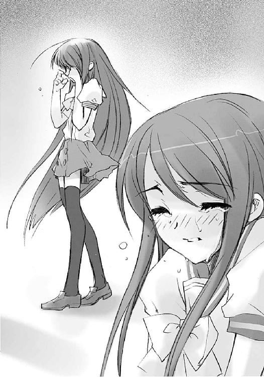
カムシンはフードの下に目線を隠した。
唇を引き結び、必死に嗚咽が漏れるのをこらえる少女を見つめるのは、どんな言い訳も通じない、残酷というものだった。
「ただいまー、母さん、シャナは帰ってる？」
悠二は早足で家に帰り、玄関で靴を脱ぎつつ、声をかけた。
「あ、ちょっと待って──」
居間の奥、母の衣服置き場になっている和室からがさごそと音がして数秒、千草が出てきた。妙に和やか過ぎる笑みを浮かべている。
悠二は息子として、この顔は彼女が何かを企んでいる証拠であることを察する。
「なんだ、変だと思ったら、母さんも噛んでたのか」
納得がいったようにほっとする悠二に、千草は困った顔で笑って見せた。
「あらあら、シャナちゃんも案外、隠し事できないのね。それで、そのシャナちゃんは？」
「えっ、だから先に帰ってるんじゃ」
「まだ帰ってないわよ。こんなときに、寄り道するはずないと思うけど」
「あんな剣幕で、いきなり走り出しといて帰ってない......？」
それを聞いた千草の顔から、急に笑みが消えた。
「なにかあったの、悠ちゃん？」
その表情に、悠二は驚きと寒気、そして後悔を抱かされた。自分がなにかを間違った、と無条件で思わせられる、それは親からの追及の姿だった。
「え、べ、別に、これといって......」
動揺で、自然と声が上擦った。
「本当に？」
念を押されると、口籠るしかない。なにを言えばいいのか分らず困惑する悠二に、千草は答えやすいよう、道をつける。
「シャナちゃんは、どうして走り出したりしたの？」
「わ、分かんないよ。僕が、今日のミサゴ祭りに行く、ってシャナに言ったら急に......」
悠二は『シャナと』とではなく、『シャナに』と言った。
千草は自分の失策を悟った。しかも、最悪な方向への予感があった。
「池君に誘われたの？」
「いや、そうじゃ、なくて」
曖昧に誤魔化す顔の端に、僅かな気恥ずかしさが覗いた。
千草はもう、それだけで全てを理解した。
（ヨシダ......カズミさんね）
答えの確認をすっ飛ばして悠二に訊く。
「それを、シャナちゃんに言ったのね」
「う、うん」
（シャナちゃん──！）
千草はこれ以上の問答を必要としなかった。早く行かなければ、それだけを思う。
「いいわ。シャナちゃんとは、どこで別れたの？ どっちに行ったの？」
手早く聞き出すや、彼女は自転車の鍵を持って外に出た。
悠二は滅多に見ない母の必死な姿を、ただ呆然と見送るしかなかった。
ポーン、
ポーン、
と花火の先触れである音だけの空砲が、白けた夕近い空に響いていた。
天気は不思議なくらいの快晴で、空の色合いの変わってゆく様がはっきりと分かる。夕の祭り、夜の花火大会までは、もう少しだった。
佐藤家のある旧住宅地は、旧家の立ち並ぶ閑静な地区であるため、ミサゴ祭りの喧騒からは離れているが、こういう日には、その空気にさえも、なにかが沸き踊っているように思えた。
実際、遠く河川敷からは、割れたスピーカーの人員整理らしき声、野外ステージの騒音寸前な演奏、注意すれば、低くうなるような群集のどよめきさえ聞こえる。
佐藤と田中は、あわよくばマージョリーとともにこのお祭りを過ごそうと目論んでいたのだが、帰ってみればその当のマージョリーの姿がない。
気の抜けた彼らは、いつもの特訓場の椅子に座って遠い祭りの声を聞きながら、台に置かれた異世界の大剣『吸血鬼』を見ていた。
二人はともに、動かしがたい事実、という言葉を連想する。
大剣は重く、マージョリーの姿はなく、祭りははるか向こうである。
「池はああ言ったけど......どーなんだろうな、実際」
佐藤が両膝に頬杖を突く、ロダンの『考える人』風ポーズで言った。
その隣、こっちは浅く腰掛けてダランと寝そべる寸前の格好で、田中が答える。
「分かるわけないだろ。とりあえずは、やるしかないってことだ。今日のところはお祭りもお預けってことわあっ!?」
群青色の火の玉が、派手な破裂音とともに草葺き屋根と木の梁を破って彼らの前に落ちてきた。燃え盛る火はすぐに飛び散って風に融け、中からタキシードスーツの美女を現す。
「マージョリーさん」
と慌てて立ち上がる佐藤、
「姐さん」
と椅子からずり落ちかけた田中、それぞれに呼ばれた美女ことマージョリー・ドーは、いつにもまして不機嫌な顔をしていた。
「あんたたち、私が言ったこと、覚えてる？」
「......」
珍しくマルコシアスが後を受けて笑わなかった。
その妙な空白に、問われた二人は目線を合わせる。
「え、と......」
「どれの、ことでしたっけ」
マージョリーは危険な大剣があるのにも構わず、置き台の上にドカッと腰掛けた。二人を伊達眼鏡越しに睨んで言う。
「調律師が来たら、明日にも出て行くって話」
「......」
また、空白。
「え、はい」
「まあ、たしかに覚えては、いますけど」
質問の意図を計りかねる二人に、マージョリーは言った。
「今日、そいつが来たの。もうすぐ、私は出て行くわ」
二人はマルコシアスに空白の間を与えず、同時に叫ぶ。
「えっ......そんな」
「う、嘘でしょう、姐さん？」
マージョリーはギッと牙を剥くように大喝した。
「っこんな趣味の悪い嘘つくわけないでしょうが!!」
「マジだ」
最後にマルコシアスが、スッパリ言った。
二人が聞いた中では恐らく最も短い、彼の言葉だった。
彼らは、半ば自失する。人間には決して解けない難題を抱え、悩み、考えて、解決どころかヒントを幾つかもらった段階で、もうゲームオーバー。
二人は痺れたように動けなかった。
マージョリーは座る自分の傍らにあった大剣に目を落とし、それを片手で持った。持ち上げた、というほどの労力さえ感じさせない簡単な仕草。演舞のように演武のように、片手の、しかも手首の返しだけで、優雅に華麗に、早く鋭く、大剣を振る。
その動作を、悲しい憧れと羨望で見つめる二人の子分に、マージョリーは言う。
「なんか、餞別にやってほしいことはない？」
ポーン、
ポーン、
と花火の先触れである音だけの空砲が、白けた夕近い空に響いていた。
調律師が無言のまま去った後、シャナは夕日の中を、何処へとも知れず歩いていた。
アラストールも、恐らくは衝撃を受けたろうが、何も言わなかった。
悠二から逃げたときの勢いも力も、もうない。
残ったのは、気の抜けたような悲しみと、卑しい自分への軽蔑だけだった。
道行く浴衣を着た人々を見るのが辛くて、目線も地面に落ちていた。アスファルトに映る影が長い。手に持つ鞄さえ、今の力ない腕には重かった。
考えることができない。
なぜこうなってしまったのか、とか、どうすればよかったのか、とか、これからどうしよう、とか、思いが考えとして固まる前に崩れて、虚脱の中に落ちてゆく。
どうしようもないまま、シャナは歩き続けていた。
と、その前で、キーッ、と自転車のブレーキ音がした。
が、シャナには顔を上げる気力もない。
慌ててスタンドをかける音がして、スリッパのままの足が現れた。
「シャナちゃん、探したわよ!?」
聞き慣れた優しい響きの声は、なぜか叫びに似ていて、柔らかさもなかった。
「......千草？」
上げられた少女の顔に、泣き腫らした跡を認めた千草は、自分の目も潤んでくるのを感じた。涙のように、可哀相な少女への気持ちが溢れてくる。
「千草」
シャナがもう一度言った。声と一緒に、感情も溢れ出す。
「吉田、一美に、先に言われちゃった......私、行きたかった、のに、悠二、取られ......」
千草はその胸に、小さな少女を抱き締めた。道行く人々の好奇の視線も無視して、思い切り抱き締めた。震える小さな頭に手を回して、黒い髪を撫で付ける。
「ごめんなさい、シャナちゃん。私が余計な気を回して、秘密なんかにしたから」
「違うの、私が......嫌だって言え、なかった......一緒に行って、って......私が言えなかった」
「......」
「それで私、悠二、連れてどこかに行こう、とか思って、ひどい、でも、私」
シャナは、フレイムヘイズとなって以来感じていなかった、包み込んでくれる優しさの中で、泣いていた。
「取られるの、やだから、取っちゃやだ、って思って、そんな、こと、私、でも──」
あとはもう、言葉になっていなかった。
千草は黙って、嗚咽する少女を抱き締め、包み込んでいた。
母の出ていった後、自分でも街を二周りほどしてシャナを探した悠二だったが、結局彼女を見つけることはできなかった。
そうする内に吉田との待ち合わせ時間が来てしまい、今、彼の姿はミサゴ祭りの際、地元住民が待ち合わせ場所に使う地蔵堂、その前に溢れる人込みの中にあった。
その格好は、なんの変哲もない普段着である。できれば浴衣を着たかったのだが、思わぬハプニングから、そんな気分ではなくなった（そもそも千草がいないと着られない）。
そのハプニングのことを思い出して、一つ、深い溜息を吐く。
（なんでシャナは怒ったんだろう）
困惑に、心が重い。
最近、彼女の行動や物思いの端を、僅かでも感じられるようになった。それがなんだか誇らしく嬉しかった......が、その気持ちも今や、しぼみきってしまっていた。彼女がなにを考えているのか。その肝心要なことが分からないのでは、結局なんの意味もない。そう思った。
（クラスの子の誘いも蹴ってたし......）
実のところ、シャナと行きたいかな、とは何度も思った。しかし、こういう無闇に騒がしい、役立つものがなにもない無駄の塊であるお祭りなどに、実用本位で仕事人間な彼女が興味を持つはずがない、とも思った。妥当な見解のはずである。そうすると、
（やっぱり僕が祭りに行くのが、不真面目だって思ったんだろうか）
たしかに、改めて頑張ろう、とお互い奮起したばかりだったわけだが......それにしても、
（......勝手に行け、はないよな......）
少女から投げつけられた（と思い込んだ）言葉を思い返して、またシュンとなる。
（理由はまた聞くとして......とにかく、帰ったらちゃんと謝ろう）
悠二は、彼女の方が間違っていたり、理不尽であったりするとは全く考えない。
（いちおう、書き置きとお土産も残してきたし......機嫌を直してくれたら良いんだけど）
要するにこの鈍感な少年は、事態を全く履き違えていたりするのだった。
そんな彼に、
「ご、ごめんなさい、坂井君」
こつん、と耳に快い下駄の鳴る音とともに声がかけられた。
今日という日に輝き栄える、吉田一美だった。
「私が誘ったのに、待たせたりして......」
「いいよ、時間は丁度だし、着付けとか大変──」
振り向いた悠二は、そこに現れた、浴衣の少女に見とれた。
白地に疎らな笹柄という清楚かつ簡素な彩りが、彼女の雰囲気にとてもよく似合っていた。おとなしめの帯柄や渋い色の巾着、白木の下駄も、その自然な装いに花を添えている。
「......」
「坂井君？」
「いや、ごめん、綺麗だなって」
その率直すぎる感想に、吉田の顔がみるみる内に朱に染まった。
「え、あ、どうも、ありがとう、ござ...ま......」
最後の声は小さく途切れてしまう。
そうやって恥らう姿も可愛いなあ、と呑気な少年は思い、とにかく、誘ってくれた少女を楽しませてあげようと決心して声をかける。
「行こうか」
「はい！」
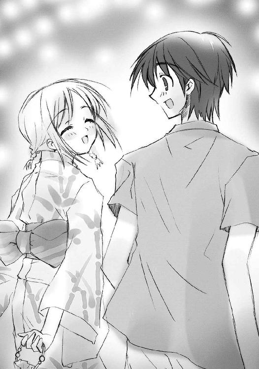
至福の表情で答える吉田一美の袂には、一つの片眼鏡が入っていた。
これは、自分がこうして『良かれ』と思えることを選べるきっかけをくれた少年に、お礼とともに返す、そのためだけに持ってきた物だった。
その、はずだった。
河川敷に造られた、ある程度意識して狭く作ってある道は、差し渡された裸電の明かりとスピーカーの喧騒、これでもかという雑踏で、光と音と人、全てをごった返しにして、祭りという非日常の熱狂を現出させている。
その中を、両脇に居並ぶ露店を一つずつ眺めながら、浴衣を着た三人組が進んでいる。
「俺、こういうの実はあんまし縁がなかったんだよな。遠くから花火見上げるばっかで」
大柄ながらもスリムな体型の田中栄太には、着流しのような浴衣がよく似合う。短髪の頭に載せたキラキラ光るヒーローのお面と合わせて、いかにもな縁日の日本人という風情である。
「俺も花火以外は、社の方のナンヤラ神事に行かされたくらいしか覚えてないよ」
佐藤啓作の方は、少々線が細すぎる。肩までの長髪などもあって、どうにも今時の少年が無理矢理に着物を着ているようにしか見えない。本人はさほど気にしていないが。
それよりも、衆の注目を浴びているのは、彼らを両脇に従えるマージョリー・ドーである。
明るい群青にド派手な牡丹柄の浴衣を茶系の帯で締めているが、これが似合っていない。
そもそも浴衣というのは、グラマラスな体型には合わない衣服なのである。その程度こそ違え、吉田一美などは腰にタオルを入れて体の凹凸を抑えたりしているのだが、マージョリーは、まんまで着ている。トップモデル裸足の豪勢なスタイルが、大きな存在感や貫禄とともに思いっきり服の線に表れていて、扇情的なことはなはだしい。
ハウスキーパーの老婆に着付けを手伝ってもらった際の彼女の台詞は、
「私を隠すんじゃ、服なんて着てる意味はないわ」
というものだった。主張としては、あるいは見事なまでに筋が通ってはいるものの、服の着方としては完璧に落第である。老婆の手尽くしで栗色の髪が綺麗に結われているのが、和装文化のせめてもの抵抗というところだった。
そんな彼女は、もちろんマルコシアスの意志を表出させる神器〝グリモア〟を脇に抱えているので、祭りという空間にあっても非常識なまでに目立っていた。
佐藤と田中がマージョリーに求めた「餞別」は、普段の彼らの調子からすると笑ったかもしれない、思い出作り、という安直なものだった。
二人は空に響く空砲を感じている内に、このミサゴ祭りという日に彼女から別離の宣告を受けたのが、なにか意味のあることのように思えたのである。それに、彼ら自身も、実はこの祭りに、様々な理由から来たことがなかった。未知の世界にマージョリーと飛び込んで暴れる......あるいはこれは、彼らの望んだことの代償行為なのかもしれなかった。
「姐さん、あれ金魚すくいって奴ですよ」
「金魚ー？ なんだ、赤いじゃない？」
「コレで救って、遊ぶんですね」
「遊ぶって、どうやって」
「救うのが遊びなんだろうさ、ヒッヒッヒ」
ときどき人をぎょっとさせる声を響かせながら、彼らは雑踏の中に紛れていく。
その彼らを、露店のみで作られた横丁から、一人の少女が見つめていた。
「──！」
スリムな長身に、きれいな淡色の牡丹をあしらった浴衣もよく映える、緒方真竹だった。
彼女は、田中栄太を、見た。
ワタアメをどうやって食べて良いか分からず、しかめっ面をする美女に、自分のそれを食いちぎるように食ってみせる田中栄太を、見た。
佐藤啓作は、たこ焼きを買いに行っていて、その場にいなかった。
だから緒方には、
田中栄太が、栗色の髪の、グラマラスな、外国人の、美女（と認めざるを得ない......）と、二人っきりで、お祭りを、楽しく、過ごしている、
という風に見えた。
それだけを見て、もうそれ以上を見たくなくなった。
「緒方さん、どしたの？」
と、傍らの露店から──結局浮いていることが分かって、彼女のグループに誘われた──池速人が声をかけた。
「ん、な、なんでもない」
緒方は自分でもびっくりするような涙声に驚き、泣き崩れそうな顔を、戯れに買ったお面で隠した。
それは、田中と同じもの。でありながら、それらは並ばず、離れていく。
祭囃子が、罪なく無邪気に、鳴り響いている。
浴衣を着たシャナと千草が、堤防の上からこの喧騒を眺めていた。
とんでもない声と人と熱意のうねりが両岸の河川敷に広がる大露店街を埋め尽くし、その端は波打つように堤防まで押し寄せている。夜の中に光の海が、人間を介してさざめいているようだった。
ここだけではなく御崎市駅から大通り、大鉄橋御崎大橋、その両脇の堤防まで、どこから湧いて出たのか、まったく呆れるほどの人の数である。
「シャナちゃんりんごアメって、食べたことある？」
問う千草の浴衣は、古布調の落ち着いた色と柄、
「りんご味のキャンディー？」
答えたシャナのそれは、鮮やかな緋色地に白抜きの花柄という、それぞれの好みに合わせた格好である。シャナは長髪を浴衣と同色の紐で結い上げて、その全体をまとめている。
千草は、急場で着付けた割には上手くいった少女の艶姿に、笑って答える。
「うふふ、半分正確。実物を見て驚きましょ？」
「うん」
傍から見ると、手を繋いだ二人は仲の良い親子連れにしか見えない。とりあえず片方は、そのつもりだった。その種の観念を持たないもう片方としては仲良くすることにはなんの異存もない。二人して、そうそう見ない、人・人・人の溢れかえる様を少し感嘆したような目で眺める。
本当は、二人とも来る気はなかった。
千草は当然、意気消沈したシャナを引っ張り出そうとは思っていなかった。一緒にカキ氷でも食べながら、狭いベランダに腰掛けて花火でも見よう、と思っていた。
ところが、二人は帰ってみて驚いた。
食卓の上に、そこら中のパン屋のメロンパンが一個ずつ、山積みになっていたのである。ひとっ走りで買って来ることのできる量ではなかった。
その脇に、メモが一枚、置かれていた。
それを開いて見たシャナは何も言わず、
その顔を見た千草は、彼女を祭りに誘った。
（悠二の、バカ......）
シャナはこの人込みの中にいるだろう少年のことを想った。折角着た、この服を見て欲しかったが、あえて探さない。いざ悠二に会ったとき、どんな顔をしていいのか......吉田一美に会ったとき、なにを言ってしまうか......自分でも分からないからだった。
（でも、いい）
自分に宛てられたメモの中身を思い出して、胸を温める。
（帰ってきたら、千草を味方につけて、思い切りワーワー言ってやるんだ）
そう思うと、笑みまで浮かべることができた。
千草も、そんな少女に笑いかける。
「もう少ししたら、花火が始まるわね。シャナちゃんは、花火を見たことある？」
「煙吐いて弾ける奴なら」
軽く答える、その声に、もう涙の翳はない。
千草は満足げに少女の手を引く。
「ふうん、それは日本式じゃないわね」
「うん」
手を繋いだ二人連れは、足取り軽く石段から河川敷の人波に合わさっていった。
悠二は、時折吉田の歩みに合わせて休憩しながら、人込みの中を歩いていた。
「射的ってどう考えてもおかしいよ。あの威力であんな大きな物が倒れるわけがない」
ど真ん中に命中したのにビクともしなかったのを「そういうこともあるよ」の一言で片付けられて悔しがる悠二に、吉田は微笑んで答える。
「でも、本当に狙いを正確にしたくらいで景品が倒れたりしたら、お店がやっていけないんじゃないでしょうか」
「うーん、そうだとすると、なんだか騙されてるような気がするなあ」
「お祭りっていうのは、その、雰囲気を楽しむものだから、景品とかは、別に取らなくてもいいんだと思います」
この雰囲気に浮かされているのか、吉田の口調は、アトリウム・アーチ美術館での初デートのときと比べると遙かに滑らかで、自然に笑うこともできていた。
そんな彼女の笑顔に、悠二も笑い返す。
「たしかに、こういうところにある景品って、普通に店に置いてあっても欲しくならないような物ばかりだなあ......あ」
カキ氷の看板が目に入った。同行の少女の様子を見て、言う。
「吉田さん、ちょっと休む？ カキ氷はどう？」
「はい！」
「だから、そうやって肩肘張らなくても良いってば。何度も訊くけど、本当に欲しい？」
「は、はい、今度は......本当に、好きです」
吉田は真っ赤になって答える。実は彼女は、歩き始めて早々、悠二に勧められたイカ焼きを、苦手だと言えず無理に同意して、数分間これとにらめっこするという失態を演じてしまっていた。
そんなことがあってからは、悠二は彼女を困らせないよう、無闇にものを勧めなくなっていた。そのくせ彼女の疲れには敏感で、小まめに休憩を取り、その際には飲み物などを持ってくる。
（やっぱり、優しいな）
温かなものを胸に抱く彼女に、悠二は訊く。
「なんにしようか」
「あの、それじゃ、イチゴで」
「分かった、待ってて」
並びに行く、今日ようやく声をかけられた背中......ミサゴ祭りの、心も弾む楽しい雰囲気......一緒にいるという、かけがえのない充足感......吉田にはその全てが夢のように思えた。
（これが、あんな世界だなんて......信じられない）
カムシンとベヘモットに、早く会いたかった。
早く会って、片眼鏡を返し、そして言いたかった。
「どうもありがとうございました」
と、心からの感謝と、別れの言葉を。
その別れを告げられるべきカムシンとベヘモットは、吉田に指定された待ち合わせ場所から程近い、堤防の土手に座っていた。
いつもは目立つ第一原因となる長大な布巻き棒も、土手の草に紛らし寝かせているので、誰も気に止めない。暗がりに被ったフードの下を気にする者も、無論ない。
彼らはただの見物人としてあった。
「ああ、これを見ながらの調律実行というのも、また乙なものですね」
傍には独り言でしかない声に、左腕から答えが返る。
「ふむ、おじょうちゃんは、選んだことで幸せを得られたじゃろうか」
「ああ、そうですね。そうであって欲しい。彼女がどんな選択をしたにせよ、結果的に、幸せであって欲しい......」
「ふむ......」
それきり二人は黙り、彼らは今度も守ることのできた、人々の幸せの光景を見た。
数分して、サイレンが鳴る。
「ああ、あれは、なんでしょう」
「ふむ？」
音の割れかけたスピーカーの声に耳を澄ませば、いよいよ祭りのメインイベント、花火の打ち上げが始まるらしい。
「......ああ、なるほど。では我々も、始めますか」
「ふむ、そうじゃのう。さぞかし綺麗な、輝きの元に調和が戻るじゃろうて」
カムシンは立って、フードを下ろした。
おもむろに、手に取った棒から布を剥がす。現れたのは、鈍色の無骨な鉄棒。彼らはこれを吉田に鞭だと説明したが、やはりどこにも可動するような部位はない。
そうして彼は、鉄棒を右手一本で軽く振り上げる。堤防の上には人通りもあったが、彼らがあまりに平然としているせいか、花火の上がる空に注目しているせいか、気にするものは一人もない。
「起動」
カムシンは言い、左手を胸の前に出した。
ボッ、という発火音とともに、掌の上に、野球のボール大の褐色の炎が点った。大きさこそ違え、それは昨日、少女のイメージから写し取った調和の光景、そのものだった。
「自在式、カデシュの血脈を形成」
ベヘモットの声を受けて、昨日一昨日と彼らが鉄棒によって刻みつけた御崎市全域のマーキングに、同じ色の光が点る。それは細かな文字列で描かれた、高度な自在式だった。
「展開」
またカムシンが言うと、掌上の炎が解け、鉄棒に絡まった。この街の調和を表す紋様が、その表面に燃え上がる。
僅かに周囲の人々から歓声が上がった。どうやらアトラクションか大道芸のように思われているらしい。もちろん、彼らとしてはどちらでも構わなかった。
「自在式、カデシュの血流に同調」
またベヘモットの声を受けて、街全域の自在式が彼らの鉄棒に描かれた調和の紋様と共鳴を開始する。この街を形作る〝存在の力〟が、各所に発生した本来あるべき姿と共鳴し、そこへの懐かしさに向けてなだれ込むように動いてゆく。街全体の歪みが、どんどん矯正されてゆく。
そこにある人々の、感じていた違和感という名の歪みが、懐かしき姿と調和の元へと戻ってゆく。失われ途切れたものを、懐かしさで癒し、憩いで包み、安心で埋めるように。
これが、調律だった。
「調律、完了」
「自在式、自己崩壊させる」
そうして調和の姿が、完成する
はずだった。
人々の見上げる頭上で、夜空に輝き咲く大輪の花火が、歪んだ。
ここ、当日の話
どことも知れない部屋。その床に壁に天井にいくつも張り付いた、馬鹿のように白けた緑色の紋章が今、轟々と稼動を開始していた。紋章自体を構成する炎が火勢を上げただけでなく、紋様同士が歯車のように噛み合い回転する。それはまるで時計の内部を異形の平面図に変えたようにも見えた。
この様を眼前にした白衣の教授が、伸び上がって絶叫する。
「ドォ────────ミノォオオ────────!!」
「はあ────い!!」
その隣に立つ〝燐子〟ドミノが、間髪入れず返答する。
「どぉーうです、この稼動の様!! ェエーキサイティング!! ェエークセレント!! でかい歪みにヤマを張って......、......」
「三百三十五回目でふひはひひはひ」
マジックハンドで自分の〝燐子〟をつねり上げげつつ、教授は吼えた。
「そぉ──んなことは私にだって分かっていまぁーす!! そぉれよりも、準備は万端でしょうね!?」
「はあ──い、教授！ 『夜会の櫃』、発進準備完了でぇーす!!」
「よおーろしい、おまえにしてはェエークセレントな手際です!! 私はただぁーちに発進します、おまえは──、分かあーって、いますね!?」
「はあーい、このドミノめは、教授に先行して『夜会の櫃』の受け入れ準備をば、いたしますでぇーっす!! はひはひひはひ？」
「誰が私の真似をしなさいと言いました？ それに、しくじったらもおーっと、痛いですよ？ しっかーし、頑張ったら、とってもいい子いい子してあげましょーう」
「はあーい、このドミノめにおまかせくだっさーい!!」
喜びの声とともに、ガスタンクのような〝燐子〟は渦巻く炎の中に消え、一人残った白衣の教授は、自在式の稼動の有様に、にんまりと満足の笑みを浮かべた。
誰もが、夜空に乱れ咲く花火の在り得ない乱舞に釘付けになった。
光の大輪が、渦巻き、捩くれ、揺らいで跳ねる。
遅れてきた破裂の音が、一つの轟きを大小でたらめに響かせる。
「えっ......？」
千草は呆気に取られて、この異常な空を見上げていた。
シャナは彼女と繋いだ手をしっかりと握り、小さく唸る。
「調律の失敗？」
数秒して、状況は意外な進展、というよりも混乱を見せ始める。宙に開く光の混沌に唖然としていた人々が、何事もなかったかのように歓声を贈り始めたのだった。歪んだ花火に。次発さえ、すぐ打ち上がった。
「なにが？」
「起こって......ないの、か？」
佐藤と田中はその奇妙な終息の様に違和感を抱き、互いに顔を見合わせる。
と、その二人の襟首を、マージョリーが引っ掴み、楽しげに怒鳴った。
「あんたたち、まだ、一仕事あるみたいよ!!」
「ヒャーッ、ハーッ!! ったく、なんてえトコだ、この世ってのはよお!?」
契約者の獰猛な笑みに応えて、マルコシアスも狂喜の咆哮を上げる。
土手に立つカムシンが苦い顔を作る。調律では起こり得ない現象、その意味するところは、
「奴、ですね......外界宿で何度となく警告を受けておきながら、不覚でした」
ベヘモットは、不可視の波として空間を渡ってゆく歪みを感じつつ呟く。
「気配を全く感じなかったしのう。この歪みも、いったいなにを狙っておるのか......」
訪れる怪現象に騒ぎ、しかしすぐそれが当然と静まり、また新たな歪みが通り過ぎて驚き、そしてまた受け入れる......その合間合間、思い出したように上がるいびつな花火とともに、人々は混乱と静穏を延々行き来する。その範囲や歪みの大きさは、加速度的に増しつつあった。
吉田とともにこの中に紛れていた悠二は、恐怖と怒りと苦悩を、声に変えた。
「くそっ！ そんな......また、またなのか!?」
吉田一美は、その坂井悠二の言葉を、奇妙に思った。
それは、異常事態に動揺する他の人々と、違う反応だった。
自分も、他の人たちとは違う感じ方をしている。広がってゆく不気味な、この世の歪みを感じる。当然だった。歪められているのは他でもない、自分のイメージを元にした世界なのだから。自分の思いの変容を、その原因だろうなにかを、おそらくはカムシンらと同じほど鮮明に感じている。あの世界に関わった自分だからこそ、これは感じられるもののはずだった。
なのに、彼は今、なんと言った？
「またなのか」？
なぜ彼は、そんなことを言ったのだろう？
なぜ彼が、そんなことを言えるのだろう？
振った袂に、一つの重みを感じる。
反復する混乱の中、なぜか決して使うまいと思っていた『それ』を手に取っていた。
空を染める歪んだ火花や周囲の異常事態......『それ』を使うのは必要なことだと思った。
違う。
確かめたかったのだった。
今、感じている幸せが、儚く消えるひどいものではないと。
今、抱いている温かさが、忘れてしまう悲しいものではないと。
吉田一美は、その行為を『良かれ』と思い、選び、
そして、見た。
想いを込めて、しかし日々は壊れた。
壊れて、そして、終わらず、続いてゆく。
世界は、ただこれからへと、続いてゆく。
あとがき
はじめての方、はじめまして。
久しぶりの方、お久しぶりです。
高橋弥七郎です。
また皆様のお目にかかることができました。ありがたいことです。
さて本作は、痛快娯楽アクション小説です。嘘です。なんと、今回はアクションシーンがありません。ここは一つ、恋の鞘当ても心理アクションだと強弁してみたりします。駄目？
テーマは、描写的には「言えるか、言えないか」、内容的には「えらぶ」です。それぞれのキャラクターが、それぞれの立場で、抜き差しならない状況へと追い込まれます。
担当の三木さんは、非常なアイデアマンです。アレ枕やら今度のアレのオマケやら、様々な趣向で読者さんを楽しませてくれます。今回も、砲弾宙にかちあう激戦の結果、水（以下略）。
挿絵のいとうのいぢさんは、凄味のある絵を描かれる方です。〝天目一個〟やメリヒムは、想像以上の格好良さでした。続くと知らなかったイラストコラムも楽しみにさせていただきます。この度も、拙作への甚大なる御助力をいただけたことに、深く深く感謝いたします。
県名五十音順に、愛知のＨ橋さん、岡山のＡ木さん、Ｓ利さん、鹿児島のＨ留さん、神奈川のＴ塚さん、Ｙ倉さん、京都のＭ林さん、兵庫のＳ田さん、いつも送ってくださる方、初めて送ってくださった方、いずれも大変励みにさせていただいております。どうもありがとうございます。
さて、今回も近況で残りを埋めましょう。映像では爆弾男噴進隊を通しで見て、その真っ正直な素晴らしさに涙したり、本では登別の詩人さんの神謡集を久々に再読して、改めて言葉の威力を感じたり、漫画では泥汚泥を眺めて、その呑気で凶暴な混沌具合に心を和ませたりしていました。次回、詩的で正直な爆弾魔が、素晴らしく凶暴な言葉の威力で人々を涙させたり和ませたりします（嘘）。
というわけで、今回もなんとか埋まりました。これからも頑張ります（なにを？）。
この本を手に取ってくれた読者の皆様に、無上の感謝を、変わらず。
また皆様のお目にかかれる日がありますように。
二〇〇三年十一月 高橋弥七郎
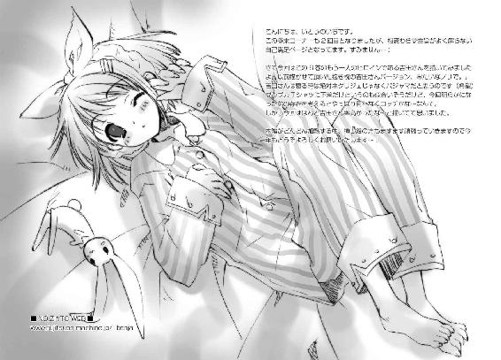
高橋弥七郎
誰がなんと言おうと大阪人。豆ちしきその３ー。グッズとかは、作者であっても手元に届く時期は読者とほとんど同じなんよー。それどころか、催促せんかったら忘れられる場合まであるんやでー。あと、あっちもキッチリやっとるから、も少しだけ待っててなー。
世間の苦汁を舐める作者
いとうのいぢ
遂に念願のお風呂テレビを買った！ しかもちょこっと奮発していいやつを。早速使うぜスイッチオン〜！ ...あれ、電波が......。毎晩いい電波拾える場所探すのに奮闘中。
電撃文庫
灼眼のシャナ
高橋弥七郎
二〇十二年七月三十一日 配信
発行者 塚田正晃
発行所 株式会社アスキー・メディアワークス
〒一〇二−八五八四 東京都千代田区富士見一−八−十九
(C)2004 YASHICHIRO TAKAHASI／ASCII MEDIA WORKS
本書（電子版）に掲載されているコンテンツ（ソフトウェア／プログラム／データ／情報を含む）の著作権およびその他の権利は、すべて株式会社アスキー・メディアワークスおよび正当な権利を有する第三者に帰属しています。
法律の定めがある場合または権利者の明示的な承諾がある場合を除き、これらのコンテンツを複製・転載、改変・編集、翻案・翻訳、放送・出版、公衆送信（送信可能化を含む）・再配信、販売・頒布、貸与等に使用することはできません。